Classification Malrieu: M-01333 (Gousperoù ar Raned)
Première publication: Barzhaz Breizh, 2ème Edition, 1845.
Cependant,
Francis Gourvil
, dans son "La Villemarqué etc." (1960, P.411), indique que La Villemarqué soumit "très probablement" à l'écrivain
Pitre-Chevalier
(1812-1863), dès 1843, une traduction des "Séries" que celui-ci devait partiellement insérer dans sa "Bretagne ancienne et moderne" (1845, p.46). Ce texte, antérieur à celui publié dans le Barzhaz, en diffère à peine (l'"enfant" du druide y est son "disciple", les onze "prêtres" armés y sont onze "druides"...)
Gourvil indique également que ce texte fut communiqué, dès 1843-1844 à un autre chartiste,
Aurélien de Courson
qui le signale dans son "Histoire du peuple breton" (1846, T.1, pp. 56-57), comme
"Un monument fort curieux de la persistance du druidisme...qu'un jeune archéologue... La Villemarqué a découvert l'hiver dernier dans le Finistère...Tous les enfants de la paroisse de Nizon répètent traditionnellement ce chant"
.
Gourvil assortit cette citation d'une remarque désobligeante visant les savants oublieux de leur devoir de défendre la réputation des confrères qu'ils ont induits en erreur, surtout quand ceux-ci leur ont permis d'acquérir des distinctions académiques prestigieuses!
Chanté par Pierre Michelet (1813 - 1881) dit "Per Braz" de Trémalo en Nizon
(selon
tables A et B
, confirmé par l'"argument" de l'édition de 1846).
"Je l'ai entendu chanter pour la première fois à un jeune paysan de la paroisse de Nizon...
Brizeux
en a recueilli de précieuses variantes qu'il m'a communiquées". (Edition 1867, page 1). Il doit s'agir du même chanteur: P. Michelet (1813 - 1881), journalier originaire de Trégunc avait 30 ans en 1843, année de la 1ère publication du chant, ce qui justifie le terme de "jeune chanteur". C'est le frère de
Perrine (Marie) Michelet, épouse Guéguen
.
Ce chant n'apparaît pas dans les manuscrits de Keransquer
.
Cependant une parodie intitulée
Pater noster
a été notée par La Villemarqué à la fin de son 2ème carnet, p. 286, et datée précisément du 23 mai 1892.
Par ailleurs, une "incantation ou charme recueilli par Penguern pour les dartres" ( Dere, dero, dere, dec'h / Ne keta amañ da lec'h/ / Nag amañ nag e nep lec'h / Tremen nav mor ha nav menez / Ha nav feunteun a garantez ) qui ressemble à la strophe 12.4 du présent chant est notée p. 7 du carnet 3. Elle est mentionnée par Gourvil dans sa thèse de 1960, p. 405 (version "Kil" chez Boidron, cf. § suivant).
Les "Vêpres des grenouilles" ont été collectées de multiples fois
,
pratiquement en Trégor et en Cornouaille uniquement,
le long d'une ligne Lannion-Quimperlé dans une zone où la contestation de l'autorité du clergé est traditionnelle.
De la
Page bretonne
et des tableaux des traductions française et anglaise ci-après, il ressort que les différentes versions connues des "Vêpres" peuvent être regroupées en trois catégories (Trégor-Léon, Haute Cornouaille, Basse Cornouaille) auxquelles s'ajoutent "Les Séries", le poème de La Villemarqué.
Dans "La Nuit celtique", p. 80, Donatien Laurent indique:
"On en retrouve l'équivalent ...
sur une aire géographique européenne très vaste
, anciennement centrée sur l'Iran: lorsqu'il ne s'agit pas de parodies modernes... le dialogue est toujours à thème religieux... et l'un des interlocuteurs est le Diable.Il devient alors très intéressant d'apprendre que ce chant , en Bretagne était souvent proscrit par les prêtres qui devinaient que cette Genèse sentait le souffre..."
(Mais je n'ai pas trouvé qu'un seul dialogue "diabolique" breton: G. Milin , dans "Gwerin" en 1961, N°2, chant 47:
"Gousperoù an diaoul! Pec'hed eo lavaret an dra-se" eme ar vamm-gozh. Hag ar vugale vihan a gane e kuzh hag a ra atav... "Vêpres du diable! C'est péche de réciter cela" dit grand-mère. Mais les enfants les chantaient en cachette et ils le font toujours.
)
Elles sont répertoriées sous le N° M-01333 dans la
classification Malrieu
qui
liste 23 versions et 44 occurrences.
La plupart des versions ressemblent plus à celles de Trégor et de Haute Cornouaille ci-après qu'aux "Séries" du Barzhaz. L'ouvrage ("enklask") breton-français de
Jean-Jacques Boidron "Gousperoù ar Raned ha 'gour-spered' ar Rannoù"
(Dastum 1993) en présente 40 (dont le chant publié par La Villemarqué).
Les versions les plus proches des "Séries" sont celles de
Basse-Cornouaille
: en particulier, celles de
Scaër
(3 variantes: Bzg, Sk2 et Sk3) et de
Saint-Thurien
(2 variantes StU1 et StU2), deux paroisses voisines de Nizon. Elles présentent certains motifs atypiques, caractéristiques des "Séries", mais pas tous.
Par ailleurs, la première version de Scaër est connue par la publication sans traduction qu'en fit le fils du Barde,
Pierre de La Villemarqué
, dans le livre "La Villemarqué, sa vie, son œuvre" qu'il consacra à son père (p. 210), avec ce titre "Copie de la version d''Ar Rannoù' écrite par
Brizeux
". Ce texte, repéré par M. Boidron, comme 'Bzg', est cité par Luzel et par Gourvil (p. 406). C'est le plus proche des "Séries" et, selon Pierre de La Villemarqué, il aurait été collecté par Brizeux à Kerdonnarz en Scaër, aupès d' Henri Olivier, père de Louis, un des informateurs de Luzel, en 1854. De fait, ce n'est que dans l'édition de 1867 (Argument, p. 1) que La Villemarqué fait état de cette version, ainsi que de la première version de Saint-Thurien qu'il dit collectée par l'Abbé Henry,
"sous le titre grotesque de 'Vêpres des Grenouilles' "
, lequel n'apparaîssait pas dans l'édition de 1845.
On trouvera plus bas, dans la partie IV, paragraphe consacré à
"l'Interprétation de La Villemarqué"
, des références plus précises à ces textes.
La thèse exposée ci-après
est que l'intuition de La Villemarqué est la bonne: chants de foi d'une part, Vêpres et Perdrioles d'autre part sont 2 catégories de chants coulés dans un même moule d'origine au moins indo-européenne. La seconde catégorie a conservé le caractère calendaire des sources les plus reculées, sans doute lié aux "douze jours" (écart entre l'année lunaire et l'année tropique). La recherche de rimes riches et d'allitérarions a fini par occulter le sens profond de la pièce bretonne.
(*)
Dialecte
:
Le Barzhaz indique pour chaque chant le dialecte auquel il est censé appartenir. Gourvil, au chapitre 6 de la IIème partie de son ouvrage "La Villemarqué etc." étudie sur plus de vingt pages la "Langue du Barzaz-Breiz". Il démontre de façon très convaincante que cette indication est souvent arbitraire (cf.
Le vin des Gaulois
et
Le vassal de Duguesclin
).
45 chants sont donnés pour "cornouaillais", 13 pour "léonais", 12 pour "trégorois" et 6 pour "vannetais", bien que l'écrasante majorité de ces chants soient dits collectés en Cornouaille: les chants léonnais le
Seigneur Nann
, la
Fiancée
, l'
Héritière de Keroulaz
à Nizon, le
Vin des Gaulois
à Coray, le
Rossignol
à Tourc'h; le chant trégorois le
Frère de lait
à Quimperlé. Gourvil soutient qu'un chant passant d'une zone dialectale à une autre est adapté par les interprètes à leur propre dialecte. Il s'étonne en outre de trouver des léonismes dans des textes cornouaillais, dont on devine qu'il les suppose inventés par un faussaire inexpérimenté.
L'ethnographe et musicologue
Donatien Laurent
est beaucoup plus nuancé: on verra dans la notice introductive du chant
Merlin le Barde
que ces soi-disant anomalies permettent au contraire de conclure à l'authenticité de la pièce en question.
Malrieux index: M-01333
First published: Barzhaz Breizh, 2nd Edition, 1845.
However,
Francis Gourvil
, in his "La Villemarqué etc." (1960, P. 411), states that La Villemarqué "very likely" submitted to the essayist
Pitre-Chevalier
(1812-1863), as soon as 1843, a translation of his "Series" which the latter partly included in his book "Brittany of yore; Today's Brittany" (1845, p.46). This text composed before the publication in the Barzhaz hardly differs from it (the Druid's "child" was his "disciple", the eleven "priests" in arms were eleven "druids"...)
Gourvil also infers that these lyrics were forwarded by La Villemarqué, as soon as 1843-1844, to another alumnus of the Ecole des Chartres,
Aurélien de Courson
who mentions the poem in his "History of the Breton People" (1846, T.1, pp. 56-57), as a
"very curious remnant of presisting druidism...which a young paleolographer... La Villemarqué discovered last winter in the département Finistère...All the kids of the parish Nizon tell this song as they would their beads"
.
Gourvil accompanies this quotation with an offensive remark about scientists disregarding their duty to defend the repute of their colleagues whom they misled into false beliefs, especially when they are indebted to them for prestigious academic awards and honours!
From the singing of Pierre Michelet (1813-1881), alias "Per Braz" from Trémalo near Nizon
(according to
tables A & B
, confirmed by the "argument" in the 1846 edition).
"I heard it first sung by a young country boy from the parish of Nizon...
Brizeux
gathered and sent me precious variants of this song". (Ed. 1867, page 1). It should be the same singer: P. Michelet (1813 - 1881), a day labourer from Trégunc was 30 years old in 1843, when the song was first published and could back then be referred to as "a young singer". He is the brother of
Perrine (Marie) Michelet, wife of Guéguen
.
This song does not appear in the Keransquer manuscripts
.
However a parody of it entitled
Pater noster
was noted by La Villemarqué at the end of his 2nd notebook, on p. 286, and dated precisely: May 23, 1892.
In addition, an "incantation or charm against scabs, collected by Penguern" (Dere, dero, dere, dec'h / Ne keta amañ da lec'h / / Nag amañ nag e nep lec'h / Tremen nav mor ha nav menez / Ha nav feunteun a garantez) which resembles stanza 12.4 in the song at hand is noted on p. 7 of Notebook 3. It is mentioned by Gourvil in his thesis of 1960, p. 405 ("Kil" version in Boidron's study, see next §).
Versions of the "Vespers of the Frogs" were often collected
,
practically only in Tregor and Cornouaille, in an area on both sides of a line Lannion-Quimperlé where the authority of the clergy always was questioned.
From our
Breton Page
and the tables of French and English translations below, it emerges that the different known versions of the "Vespers" can be cast into three categories (Trégor-Léon, Upper Cornouaille, Lower Cornouaille) to which are added "The Series", the poem by La Villemarqué.
In "La Nuit celtique", p. 80, Donatien Laurent states:
"We find the equivalent... on a very vast European geographical area, formerly centered on Iran : when they are not mere modern parodies... these dialogues always run on religious topics... whereby one of the interlocutors is the Devil. It is therefore very meaningful that this song, in Brittany, should have been often banned by priests who surmised that this sort of "Genesis" smelled of sulfur..."
(But I found only one "diabolical" Breton dialogue: G. Milin, in "Gwerin" in 1961, No. 2, song 47:
"Gousperou an diaoul! Pec'hed eo lavaret an dra -se" eme ar vamm-gozh. Hag ar vugale vihan a gane e kuzh hag a ra atav... "Vespers of devil! It's sinful to tell them" said grandmother. But the children sang them in secret and they still do.
)
They are listed under the N ° M-01333 in the
Malrieu classification
which lists 23 versions and 44 occurrences.
Most of them resemble the below Tregor and Upper Cornouaille versions more closely than do the "Series" in the Barzhaz. The Breton-French survey ("enklask") by
Jean-Jacques Boidron
, titled
"Gousperoù ar Raned ha 'gour-spered' ar Rannoù"
(printed by Dastum in 1993) presents 40 versions (one of them being La Villemarqué's).
The nearest versions to be compared with the "Series", were collected in
Lower Cornouaille
, namely in
Scaër
(3 variants: Bzg, Sk2 et Sk3) and in
Saint-Thurien
(2 variants StU1 and StU2), two parishes adjoining Nizon. They feature some atypical motifs characterising the "Séries", but not all.
Besides, the first Scaër version is also known from the untranslated copy published by the Bard's son,
Pierre de La Villemarqué
, in the Biography of his father "La Villemarqué, sa vie, son œuvre". It will be found on p. 210, under the title "Copy of a version of 'Ar Rannoù' written by
Brizeux
". This text, tagged by M. Boidron as 'Bzg', is quoted by both Luzel and Gourvil (p. 406). It is nearest to the "Series" and, as stated by Pierre de La Villemarqué, was collected in 1854 by Brizeux at Kerdonnaz near Scaër, from the singing of Henri Olivier, Louis Olivier's father (one of Luzel's informants). Accordingly, it was not until 1867 (third edition, Argument, p. 1) that La Villemarqué mentioned this version, along with the first Saint-Thurien version reportedly collected by Abbé Henry,
"under the ludicrous title 'Vespers of the Frogs'"
, passed over in silence in the 1845 edition.
More precise references to these texts will be found farther below in the paragraph dedicated to "
La Villemarqué's Interpretation of the song"
.
The thesis set out below
is that La Villemarqué's intuition is the right one: Songs of faith on the one hand, Vespers and Perdrioles on the other hand are 2 categories of songs cast in the same original Indo-European mold, if not older. The second category has retained the calendar character of the most remote sources, very likely linked to the "Twelve days" (the gap between lunar and solar years). The search for rich rhymes and alliterations caused the obscuring of the deep meaning in the Breton song.
(*)
Dialect
:
The Barzhaz specifies the dialect to which each individual song is supposed to belong. Gourvil, in chapter 6 of part II of his study on "La Villemarqué etc." investigates, on more than twenty pages, the "Language of the Barzaz-Breiz". He demonstrates in a very convincing manner how inconsistent this indication often is (cf.
Wine of the Gauls
et
Duguesclin's Vassal
).
45 songs are identified a "cornouaillais", 13 as "léonais", 12 as "trégorois" and 6 as "vannetais", though a crushing majority of them are claimed to have been collected in Cornouaille: the Léon songs
Sir Nann
,
Satan's Bride
, the
Heiress of Keroulaz
at Nizon, the
Wine of the Gauls
at Coray, the
Nightingale
at Tourc'h; the Tréguier song the
Foster-Brother
at Quimperlé. Gourvil maintains that a song migrating from a dialect area to another becomes automatically adapted to their own speech by the new interpreters. Besides he wonders why "Léonese" idiosyncrasies should be found in "Cornouaillese" texts, which he without doubt suspects to be invented by a inexperienced forger.
The ethnographist and musicologist
Donatien Laurent
is far less peremptory: as stated in the preliminary notice to the song
Merlin the Bard
, these alleged anomalies allow, on the contrary, to infer that the pieces where they are found are authentical.
1° N. Quellien; 2° Marguerite Philippe (enr. F. Vallée); 3° Y. Menguy; 4° Guillou (enr. Y. Le Moal)
Utilisateurs de tablettes tactiles:
Si vous éprouvez des difficultés pour entendre ou télécharger les fichiers sonores de ce site, vous pouvez consulter les explications relatives aux fichiers MIDI fournies en bas de la page du site "Jacobite Songs":
Awa Whigs Awa!"
En bleu: ajouts significatifs postérieurs à la version papierdu présent site.
Users of touchscreen tablets:
In case of difficuties when attempting to hear or download sound files at this site, you might report to the bottom note on MIDI files on the "Jacobite Songs" page:
Awa Whigs Awa!"
In blue: significant additions following the paper version of this site
VEPRES DES GRENOUILLES
LES SERIES
Versions du TREGOR
:
Pwn, Klz, Kmb, 1023, Pr2, Log1, Log2,
1036, Kln, FaU, Plw2-3-4, Mfu, Plu2,
Mng, Gwi, Gwn, Brz, Mtz, Mil
En caractères gras: variantes les plus fréquentes
APPEL 1. -
Chante un beau chant, Kilhore!
- Jolig, que veux-tu entendre?
Que te chanterai-je
?
(-Un chant venant de toi:)
- La plus belle petite série
que tu saches!
1.
UN anneau/doigt d'argent
à Marie
A 2. -
Chante un beau
(chant)
Kilhore!
- Jolig,
(Daouig)
que veux-tu entendre?
Que te chanterai-je
?
-
Les DEUX plus belles petites séries
que tu saches!
2.
DEUX anneaux/doigts d'argent
à Marie
...............................
A 12. -
Chante un beau chant, Kilhore!
- Jolig, que veux-tu entendre?
Que te chanterai-je
?
-
Les DOUZE plus belles petites séries
que tu saches!
12.
DOUZE épées amies
(ennemies)
Détruisant
(démolissant)
un pignon,
Aussi menu que du son.
- -
Fixées à to pignon
- - Te balayant ton pignon
- - (Plu2:):
Douze épées amies
Me traversant mon pignon
Une épée blanche garnie d'acier
Quand elle se leva
sur la tête de la grenouille
Un limaçon à coquille
11.
ONZE truies, onze porcelets
- - (Onze truies toutes semblables)
Grognant et dégrognant
(Kmb:)
Sous le pommier
Qui s'en viennent
(reviennent)
de l'accouplement
(Log2:)
Leur mère les appelant
- - A côté du pont du château
(1036:)
"Pour faire honneur au porcher,
Allons tous le raccompagner
à la maison!"
10.
DIX vaisseaux sur la
Loire
- - (rivage /en ligne /
dix histoires salaces?)
Chargés de vin, d'étoffes
- - (Sans arrêt la tempête)
9.
NEUF fils
(/ prêtres)
armés
(jugés)
Revenant de Nantes
(de neuvaine)
Leurs épées sont cassées
Leurs chemises ensanglantées.
Le plus terrible
(pire)
fils qui lève la tête
Est effrayé quand
(par-dessus le talus)
il les voit
.
- - (Nul ne resterait longtemps
à les regarder)
- - (Le plus beau fils avait
du mal à les regarder)
8.
HUIT petits batteurs
(/femmes)
sur l'aire
(... la laine?)
battant des pois, battant
des cosses (?)
. (... des fleurs)
7.
SEPT jours et
[venant de]
sept lunes
.
6.
SIX frères et six soeurs
(Sept frères et sept soeurs)
5.
CINQ vaches vraiment noires
(et deux merles)
Traversant une tourbière
.
- - Cinq vaches noires, maigres à faire pitié (je sais)
- - Traversant une terre consacrée
- - (en revenant de la foire)
- - Mugissement et plainte depuis lors
(Pwn)
.
4.
QUATRE groupes de canards
(/taurillons
/ d'acolytes, ohé)
Qui chantent l'Exaudi
e (la loi de Dieu).
3.
TROIS doigts/anneaux
(/pièces)
d'argent
(doigts qui se chevauchent)
à Marie
- - (Petits passants, dites-moi:)
- - (Trépieds d'argent pour bouillir)
TROIS reines dans un palais
Parentes des
(Où sont les)
3 Fils Henri,
- - (Parentes de monpiri [du fils Henri])
- - (Propriétaire de cette maison de Paris)
Qui jouent, qui fredonnent,
Un anneau/doigt d'argent à chacune d'elle
- - (Je ne suis qu'une petite grenouille)
2.
DEUX anneaux/doigts d'argent à Marie
- - Deux doigts qui se chevauchent à Marie
- - Deux propriétaires à Paris
1.
UN anneau
(une pièce)
d'argent
à
Marie
- - Un doigt à chevaucher à Marie
La moitié
(/départ)
du soleil tu ne verras pas.
(Plu2:)
Un petit cheval boiteux pour jouer
Voici les douzes plus belles petites séries
Que nous sachions!
CONCLUSION:
-
Dis au clerc d'aller souper:
Qu'il ne reste plus en peine!
- - Qu'il ne prenne pas trop de peine!
Principales formules de Trégor-Léon
a kleze...pignon (épée...pignon)
b gwiz ha porc'helled (truie et pourceaux)
c lestr karget (vaisseaux chargés)
d mab armet...Naoned (fils armés...Nantes)
e dornerig war al leur (batteurs sur l'aire)
f karr nevez karget (charrettes neuves chargées)
g DEIZ HA LOAR (jours et lunes)
h BREUR HA C'HOAR (frères et soeurs)
i buoc'h du...c'hoad/douar (vaches noires...terre/bois)
j kole/houidi...Ekzodie (taurillons/canard...Exaudie)
k rouaned...mab Herri (reines...fils d'Henri)
l biz arc'hant (doigt ou anneau d'argent)
m kloreg...koan (clerc...souper)
APPEL 1. -
Jobig
[Petit Chourig]
, mon filleul,
Jobig
[Chourig]
que te faut-il?
- Que tu me chantes un chant.
- Et que te chanterai-je?
- Une série de la PREMIERE série:
Laquelle sauras-tu à l'instant?
1. UN diaboli (?) de mon pari (?)
Accroupi pour jouer.
(Goa:)
- UN diaboli pour jouer
A 2. -
Jobig...te faut-il?
- Une série de la SECONDE série:
Laquelle sauras-tu à l'instant?
2. -DEUX pièces d'argent
me manquent (pour "weli").
...............................
A 12. -
Petit Jobig, mon filleul,
Jobig, que te faut-il?
- Que tu me chantes un chant.
- Et que te chanterai-je?
- Une série de la TREIZIEME série,
Laquelle sauras-tu à l'instant?
(Mor, Kle, Pwl:)
13.
TREIZE moutons
Revenant à la maison en un troupeau
Un loup les avait vus
Et les avait attaqués.
12 UNE truie et ONZE
[
(Pwl:)
13]
pourceaux
Venant du bois en grognant
(de Botsorhel)
Ils se disent l'un à l'autre
(Leur maître leur dit)
:
"De pourceau en pourceau
Grognant et dégrognant"
(Ggn:)
Ta "sout" et ta "choc'h"
Une chèvre et une vache.
(YFK:)
Une truie et 11 porcelets
Venant du bois en grognant
Ils se sont tous appelés
De pourceau en pourceau.
11. ONZE
(Ggn:
DOUZE)
chiens de chasse
Venant de l'assemblée
Leur maître leur dit:
"Voici un lièvre là-bas
Chassez-le et 'déchassez'-le!
Et qu'on le mette dans mon sac!
Jusqu'à ce que vous l'ayez attrapé
Et portez-le chez moi:
Il sera mis à la broche.
10. DIX
(Douze)
fils armés
Venant de Nantes.
Leurs épées sont brisées,
Ils font pitié à voir
Tant ils sont mal en point.
9. NEUF batteurs chaque jour
Sont avec moi à battre
Trois à prendre
Trois à mettre
Trois à battre sur l'aire
A côté de chez M. Le Meur
(mon frère).
(Ctn:)
Or à côté de chez Le Meur
Neuf charrettes neuves
Reviennent de Plonevez
-Leur vie est en grand danger.
(Eln:)
Dix petits batteurs sur l'aire
Qui jouent le bâton de coeur (?).
8. HUIT charrettes neuves
Venant du Bourg-Neuf
(Plonevez)
Chargées de pierres "brezilhet".
Leur vie est en danger.
(
Mor:
) Le vent de toutes les couleurs
Est chargé pour faire le temps.
(Eln:)
- "Ourc'hel, di-ourc'hel"
Petite guêpe fourchue
Petite noix du vent
Et cousue avec du fil de fer.
5. CINQ vaches noires chauves
[noires comme mûres]
Qui viennent du bois sombre
(Mor:)
Pierre et bois de la forêt
(Eln:)
Aller à la montagne avant la foire .
4. LA QUATRIEME d'en-haut
(en haut/un lieu/cloches)
Se disputant le solitaire (sauveur)
(des deux collines, mes vaches).
.
3. TROIS marins et trois marins (?)
(Ggn, YFK)
(Goa :)
TROIS et trois prennent trois
(Eln:)
Trois reines dans un palais
qui jouent au "vetoni"
2. DEUX pièces d'argent me manquent.
(
Ggn :
) Deux
doigts d'argent
pour "weli". [louer]
(Eln:)
Deux clercs, Une fois chanté le sabat
1. UN "diaboli" pour jouer.
(Ggn/Ctn :)
Un "diaou" (A droite) de mon "pari"
Les deux autres sont au pont de Paris
Accroupi,
[et les deux autres]
en train de jouer
CONCLUSION
-Une série tirée de la douzième série...
Je n'en connais pas d'autre pour l'instant!
(Ggn :)
Laquelle sauras-tu maintenant?
Principales formules de Haute-Cornouaille-Elliant
n bleiz...deñved (loup...moutons)
o ki chase...kad (chiens de chasse...lièvre)
b gwiz ha porc'helled (truie et pourceaux)
d mab armet...Naoned (fils armés...Nantes)
e dornerig war al leur (batteurs sur l'aire)
f karr nevez karget (charrettes neuves chargées)
g DEIZ HA LOAR (jours et lunes)
h BREUR HA C'HOAR (frères et soeurs)
i buoc'h du...c'hoad/douar (vaches noires...terre/bois)
p c'hoari...soliter (jeu...solitaire)
q merdeidi? (navigateurs?)
l biz arc'hant (doigt ou anneau d'argent)
APPEL 1 -
Joaig,
(Petite vieille)
blanc
(he)
, Kilhore
Joaig, que te faut-il?
Que je te chante une chanson?
Que te chanterai-je?
- Un chant d'UNE série
Jusqu'à ce que je le sache à présent!
1. UN "buro" et un "buri"
Dans le "verbo" l'"estoni"
(verbe, étonnement?)
.
A 2 - Joaig blanc Kilhore
Joaig, que te faut-il?
Que je te chante une chanson?
Que te chanterai-je?
- Un chant de DEUX séries
Jusqu'à ce que je le sache à brésent!
2. DEUX roues dans un panier.
...............................
A 11 - Joaig blanc Kilhore
Joaig, que te faut-il?
Que je te chante une chanson?
Que te chanterai-je?
- Un chant de DOUZE séries
Jusqu'à ce que je le sache sans plus tarder!
(Kil:)
"Teredenner" de lieu en lieu
Fuis et fuis
Ta place n'est point ici
Entre neuf mers et neuf montagne
C'est là qu'est ton lit!
11. ONZE moines armés/venant de Nantes
Aux chemises
(à l'arrête des épaules?)
ensanglantées
Et aux épées brisées;
Enfants de trois femmes.
Si vous aviez pu les
(Ils faisaient pitié à)
voir
Vous auriez été surpris.
Ils sont à côté du buisson
Près de mourir de froid
Les mains dans les poches
Ils sont là-bas, du côté du lac
Et ils tiennent chacun une baguette blanche
.
10. DIX vaisseaux
(de vins)
d'ennemis en vue
Venant de Nantes
(de Vannes).
(Mwn:)
Dix hommes battant sur l'aire
La main telle la fleur(?)
Aux épées "millet" et "dispulet".
9. Une truie et ses NEUF porcelets
Elle vient de les appeler,
En grognant et dégrognant
De soue en soue
A la porte du château.
(StU1/ StU2:)
Trois petites poignées
(batteurs)
sur l'aire
A côté de chez L'Ozac'hmeur
Une partie occupée à mettre
Une autre à balayer
Une autre à enlever de l'aire.
8 HUIT boeufs et un million
Qui labourent
(charroient)
sur le sillon profond
A eux la rémission
(StU:)
A la foire de la mission.
7. SEPT jours et sept lunes
(StU2:)
Un petit nombre seul le sait
(StU1:)
Sept coups de pied de sa soeur
6. SIX frères et six soeurs
SIX petits garçons faits de cire
5. CINQ tombes sur une génisse
Un jet de pierre par sa soeur.
(Kil:)
Une vache rousse, une vache noire
Descendant de la Montagne noire
(Sk3:)
Des bêtes à tête blanche
Noires, noir duel
Sortant du bois de Morial.
4. QUATRE pierres à aiguiser
(plaie qui est mienne) ("zarefarzin")
Qui jouent sur les trois pierres.
(Mwn:)
Quatre chattes
Venant de Raguenès;
C'étaient de beaux poissons
Pour donner aux nourrices
Quatre nourrices en une maison
Elles ont chacune un fils:
Quatre clercs
Qui chantent le "vadec".
3. TROIS royaumes de Marzhin
("zade-/genti-farzin")
(qui jouent sur les trois pierres.)
(Mwn:)
Trois chiens noirs venant du Pouldu
Trois charrettes neuves chantent Noël à l'écurie
(StU1:)
Cinq jours et cinq lunes
Un petit poulain fait de cire
Cinq petites pièces sur la génisse
Enflammée la petite vache "barr"
2. DEUX roues dans un panier.
(...un moulin)
1. UN "buro" et un "buri"
(StU2:)
Un petit panier "a burier"
(StU1:)
La petite vache (occupée) à paître.
Dans le "verbo" l'"estoni".
CONCLUSION
(Sk3:)
Chante, chante, chante, grenouille
C'est la plus belle des douze séries
Que je connaisse pour l'instant.
Principales formes de Basse-Cornouaille, Scaër, Saint-Thurien
d'manac'h armet...Naoned (moines armés...Nantes)
c lestr karget (vaisseaux chargés)
b gwiz ha porc'helled (truie et pourceaux)
r ejen oc'h arat (boeufs labourant)
g DEIZ HA LOAR (jours et lunes)
h BREUR HA C'HOAR (frères et soeurs)
s annoar (génisses)
t gentefarzin (leçon de Merlin?)
u rod...ar vilin (roue... du moulin
APPEL 1 -
Bel
enfant du druide,
allons!
Que veux-tu savoir, réponds!
Que te chanterai-je donc?
- Apprends-moi, je t'en prie,
Du nombre UN la série !
[Bzg] - Joaik gwenn kilhore,
Joaik petra fell dit-te?
Ur ganaouenn diganin-me?
Petra ganin-me dit-te?
- Ur gan dimeus a unnek (?) rann
Ken a oufenn bremañ.
1. - Pas de série pour le nombre UN:
La Mort, d'où provient le Chagrin,
Plus rien avant. Après plus rien.
A 2.
Bel
enfant du druide,
allons!
Que veux-tu savoir, réponds!
Que te chanterai-je donc?
- Apprends-moi, je t'en prie,
Le DEUX et sa série!
2. -
A cette coque attelés
DEUX bœufs
qui vont expirer.
N'es-tu donc pas étonné?
[Bzg] Eizh ejenn ha milion
A arat war an ant don. ("sillon", ou "war ar c'hanton")
Div rodenn en ur baner, ("roue", "panier")
Ur buro, ur buri
Er verboù an estoni. ("dans les verbes l'étonnement?")
........................
A 12.
Bel
enfant du druide,
allons!
Que veux-tu savoir, réponds!
Que te chanterai-je donc?
- Apprends-moi, je t'en prie,
Le DOUZE et sa série!
12.1. - DOUZE mois, douze thèmes.
L'Archer, le pénultième,
Décoche dard et penne.
12.2. Les signes en mêlée:
La Vache écussonnée,
Sort du Bois des Trophées.
[Pep stumm: i] Pemp buoc'h du moal awalc'h
O tont eus ar c'hoad teñval...
12.3. Vois la flèche en son flanc!
A flots coule son sang.
Tête en l'air, mugissant.
[Ggn] Pevar naerenn eus an nec'h
O tisputañ ar zaoutier.
[Pwn] Bug ha klemm abaoe.
[Pep stumm] Gwasañ (terruplañ) map a c'houre penn...
12.4.
Le cor
sonne: avec
furie,
Tonnerre et feu, vent et pluie.
Plus rien: non, plus de série!
[Stu2] Karn skoazioù gwadet...
[Kil] "Teredenner (*) a lec'h da lec'h
Tec'h ha tec'h
N'eo ket amañ da lec'h.
Etre nav mor ha nav menez
Aze ema da wele."
[Kaier 3, p. 7]
"Incantation ou charme recueilli par Penguern pour les dartres:"
Dere, derv, dere deoc’h!
N'eo ket amañ da lec’h
Nag amañ nag e nep lec’h,
Tremen nav traoñ [?] ha nav menez
Ha nav feunteun e c'harantez.
(*) "Derwedenn". Al lavar-hud-mañ a zo mat ouzh an derwed-losk.
11.1
ONZE prêtres en armes,
Qui reviennent de Vannes
Epées brisées, en larmes;
[d': Bzg] Unnek manac'h armet
[StU2] O tont deus a Wened
[Bzg] O toned deus an Naoned
Ganto klezeioù torret,
11.2 Sanglantes leurs guenilles
Des branches pour béquilles.
Onze, ils partirent mille!
[Pep stumm] Gant o c'hlezeier torret
Hag o rochedoù gwadet.
[Sk3] Ha ganto pep a wialig wenn.
10.
DIX nefs adverses que l'on vit
Venir de Nantes jusqu'ici
Gens de
Vannes
, soyez contrits!
[c: Bzg] Dek lestr tud gin a zo gwelet
O tonet deus an Naonet.
[StU2] O tont eus a Wened
[Sk2] Dek lestrad gwin avelet.
9.1.
NEUF mains blanches sur l'aire,
A Lézarmeur, neuf mères...
Que de larmes amères!
[e: Pep stumm] Eizh dornerig war al leur
[StU2] An dornadek war al leur
E-kichenn ti an Ozac'hmeur
Darn o skubañ, darn o lemel diwar al leur.
9.2. Neuf korriganes se démènent,
Cheveux fleuris, robes de laine,
Sous la lune autour des fontaines.
9.3.
Neuf pourceaux, une truie
Devant leur porcherie
La terre qu'ils ont fouie
[b: Bzg] Ur c'hwiz hag he nav forc'hell
O tonet deus ar ger-vall,
O soroc'hal, dissoroc'hal,
9.4. Et refouie les porte à grogner:
Petits accourez au pommier
Ouïr la leçon du sanglier!
[Bzg] Porc'hell, diborc'hell
Da zoull dor ar c'hastell.
8.1. HUIT vents soufflant pour attiser
Huit feux, de l'immense brasier,
Sur le Mont du combat, en mai.
"Menez kad": morse "menez ha gad".
0: E kalz a stummoù:
Unnek ki chase
O tont eus an asañble.
A lar o mestr dezhe:
"Setu ur c'had aze.
He chasit hag he degasit
Ken ho-po he zapet
Hag 'barzh va zac'h vo lakaet."
8.2. Huit cavales couleur de l'onde
Qui paissent sur l'île profonde,
Cavales de la Dame blonde.
[r: Bzg] Eizh ejenn ha milion
Oc'h arat war an ant ton.
7.
SEPT soleils ainsi que sept lunes
Sept astres, si la Poule est une,
Sept éléments, de l'air farine.
[g: Pep stumm] Seizh deiz ha seizh loar
[Eln] Seizh steredenn, seizh loar.
6.1.
SIX enfants qu'on a faits de cire,
Six enfants que la lune inspire.
Tais-toi, tais-toi, laisse-moi dire!
h: [Bzg] C'hwec'h mabig graet e koar.
[Pr2] ... me hen goar.
6.2. Dans un creuset voici six herbes.
Le nain qui les mêle, observe!
A porté son doigt à ses lèvres.
5. Il y a CINQ zones de la terre
Et, dans le temps, ce sont cinq ères.
Sur notre sœur, ce sont cinq pierres.
[Bzg] Pemp bez war an "hoar".
[Sk2] Pemp pezh war an onner.
[Sk2] Un taol-maen digant e c'hoar;
[Sk3] Seizh taol troad digant e c'hoar.
4. Il y a QUATRE pierres où Merlin
Afin de mieux l'aiguiser
vient
Frotter la faible épée qu'il tient.
Cliquer sur les cases "+" pour afficher les sources de La Villemarqué.
[Bzg], [StU1] etc: abréviations tirées des "Gousperoù ar Raned" de Jean-Jacques BOIDRON, pp. 50-53 (cf. carte ci-dessous)
Catégories d'images dans les "Vêpres":
- Travaux agricoles :
b (élevage des porcs), e (battage), f (vendange), r (labourage),n (troupeaux), o (chasse au lièvre).
- Animaux de ferme :
b (porcs), i (vaches), j (taurillons ou canards), n (moutons), s (génisse), o (chiens de chasse).
- Personnages importants :
o (maître), d-d' (hommes, fils ou moines armés), k (reines), k (fils Henri), e (Ozac'h-meur= le grand chef de famille), m (clerc).
- Jeux:
l (doigts qui se chevauchent), l (diaboli, vetoni), l (cheval boiteux), p (solitaire), (Goa) (Trois qui prennent trois)
- Calendrier :
g, h (jours et lunes = frères et soeurs)
- Religion :
d,d' (prêtres, moines), i (terre consacrée), j (acolytes, Exaudi), l (Marie), r (mission, rémission), titre:Vêpres
VESPERS OF THE FROGS
"Sonioù Breizh Izel" (1890) by
Luzel
, (FaU)
Collected in Plouaret, Trégor; Printed on pp. 84-92 in J-J BOIDRON's book
THE SERIES
Barzhaz Breizh (1845)
GALV 1. -
Kan kaer Kilh
o
re!
- Jo
lig,
pe
tra
fell
dit-
te
?
Pe
tra
gan
in-
me
dit-
te
?
-
Kaerañ rannig
a
ge
ment
a
ouz
out-te!
1.
UR biz arc'hant
da Vari
G 2. -
Kan kaer Kilh
o
re!
- Jo
lig,
pe
tra
fell
dit-
te
?
Pe
tra
gan
in-
me
dit-
te
?
-
Kaerañ DAOU
rann
ig
a
ge
ment
a
ouz
out-te!
2.
DAOU viz arc'hant
da Vari
1.
Ur biz arc'hant
da Vari
G 3. -
Kan kaer Kilh
o
re!
- Jo
lig,
pe
tra
fell
dit-
te
?
Pe
tra
gan
in-
me
dit-
te
?
-
Kaerañ TRI
rann
ig
a
ge
ment
a
ouz
out-te!
...............................
G 12. -
Kan kaer Kilh
o
re!
- Jo
lig,
pe
tra
fell
dit-
te
?
Pe
tra
gan
in-
me dit-
te
?
-
Kaerañ DAOU
ZEG
rann
ig
a
ge
ment
a
ouz
out-te!
12.1.
DAOUZ
EG
kle
ze
mignon
O
ti
fouel
trañ
ur
pignon
Ken
mu
nud
ha
brignon
11.
Ourc'hell, diz
our
c'hell
UNN
EG
gwiz
, unn
eg
por
c'hel
10.
DEK
lestr
war
al
Liger
Karg
et
a
win
, a
vezer
9.
NAV mab armet
O
tis
treiñ
eus
an
Nao
ned
O
c'hleze
ier
torret
,
O
roched
où
gwadet
;
Ter
rupl
añ
mab
a
c'hor
re
penn
A
spont ouzh
o
kwelet
.
8.
EIZH
dorn
e
rig
war
al
leur
O
torn
añ
piz
, o
torn
añ
kleur
.
7.
SEIZH deiz
ha
seizh loar
.
6.
C'HWEC'H breur
ha
c'hwec'h c'hoar
5.
PEMP bu
oc'h
du
a
walc'h
O
tre
men
dou
ar
ta
ou
arc'h
.
4.
PEVAR c'hole
O
kan
a n'
Ek
zo
di
e.
3.
TEIR rouan
ez
er
Maen
di
Per
c'henn
an
tri
Mab
Her
ri
O
c'ho
a
ri
, o
fre
do
niñ
,
Ur
biz
ar
c'hant
gant
pep
hi
ni
2.
DAOU viz arc'hant
da Vari (-i)
1.
UR biz arc'hant
da
Vari (-i)
Kaerañ daouz
eg
rann
ig
a
ge
ment a
ouz-omp-ni!
KLOZADUR: -
Lar
d'ar
c'hlo
areg
dont
d'e
goan
Na
chom
o
ket pell
e
poan
!
Merket gant
arouezennoù druz
: ar peder silabenn e pep gwerzenn, n'eus forzh pet troad a zo enni.
C 1. - Sing fine, Killoré!
- Jolig, what do you want?
What am I to sing for you?
- Sing of the finest little thing
you know!
1. ONE silver ring for Mary
C 2. - Sing fine, Killoré!
- Jolig, what do you want?
What am I to sing for you?
- Sing of the finest TWO little things
you know!
2. TWO silver rings for Mary
1. ONE silver ring for Mary
c 3. - Sing fine, Killoré!
- Jolig, what do you want?
What am I to sing for you?
- Sing of the finest THREE little things
you know!
...............................
C 12. - Sing fine, Killoré!
Jolig, what do you want?
What am I to sing for you?
- Sing of the finest TWELVE little things
you know!
12. TWELVE pretty little swords
That grind a gable
As fine as bran.
11.Snorting and dis-snorting,
ELEVEN sows, eleven piglets.
10. TEN ships along the Loire shore,
Full of wines and fabrics.
9. NINE sons in arms
Returning from Nantes.
Their swords are broken,
Their shirts are bload-soaked;
The awfulst son raising his head
Is afraid at that sight.
8. EIGHT little threshers on the floor
Threshing peas, threshing pods.
7. SEVEN days and seven months.
6. SIX brothers and six sisters.
5. FIVE cows, very black ones
Wading through a peat bog.
4. FOUR bull-calves
Singing the Exaudi.
3. THREE queens in the stone house
Owners of Henry's three sons,
Who play, who croon,
Each of them has a silver ring.
2. TWO silver rings for Mary.
1. ONE silver ring for Mary:
Those are the finest twelve little things
I know.
Tell the clerk he may have his supper:
He needs not wait any longer.
Version collected in Plouaret
CALL 1. Fair child of the Druid,
come on,
To make you both wise and strong,
Shall I sing one of my songs?
- Sing me ONE in a row:
That's what I want to know.
1. - For ONE no row. Just one thing:
Death, the father of Mourning,
Before and after: nothing!
C 2.
Fair child of the Druid,
come on,
To make you both wise and strong,
Shall I sing one of my songs?
- Sing me TWO in a row:
That's what I want to know.
2. - TWO oxen draw by the yoke
A shell: they pull hard;
they choke.
Behold, behold the strange joke!
1. For ONE no row: just one thing
Death that begets all Mourning,
Before and after: nothing!
C 3.
Fair child of the Druid,
come on,
To make you both wise and strong,
Shall I sing one of my songs?
- Sing me THREE in a row,
That's what I want to know...
........................
C 12. Fair child of the Druid,
come on,
To make you both wise and strong,
Shall I sing one of my songs?
- Sing me TWELVE in a row:
That's what I want to know.
12.1. 12 months that their 12 signs draft
And the last but one, by craft,
The Archer, shoots his sting shaft,
12.2. Between them a strife to raise:
The black Cow with the white blaze,
Coming out of the Spoils Maze,
12.3. In its flank the arrow's sting,
Out of the wound the blood springs;
It raises its head, mooing.
12.4. Bugle call, fire and dismay.
Rain and wind, thunder and fray.
Nothing more, no more array!
11.1.
EL'VEN priests who come in arms:
With their smashed swords from Vannes,
Having suffered griefs and harms,
11.2. In blood-soaked robes dressed
Hazel crutches they have cleft.
From three hundred, el'ven left.
10.1.
TEN en'my ships that were spied
Sailing from Nantes at high tide.
The folks of Vannes woe betide!
9.1.
NINE small hands on the thresh floor
Next to the Lézarmeur Tower,
Where nine mothers sour tears pour.
9.2. Nine Korrigans are dancing,
Flower-wreathed, in wool clothing,
In the moon light round the spring.
9.3.
The sow and her nine young lie
At the door of the pig sty,
They snort and dig, far and nigh.
9.4. They dig and snort, snort and dig
"To the apple tree, wee pigs!
Be taught by the boar, th 'old prig!"
8.1. EIGHT winds blowing that they may
Ignite with the Fire of May
Eight fires on the Mount of Fray.
8.2. And eight heifers, white as foam,
On the Deep Island, they roam
Where the Lady has her home.
7.
SEVEN suns, and seven moons
,
Seven planets in "the Hen",
In the air flour seven grains.
6.1.
SIX wee children made of wax,
Enlivened by the moon's acts.
You don't know, still these are facts!
6.2. Six herbs in the wee cauldron,
The dwarf mixes a potion,
Licks his finger with caution.
5. All around the earth, FIVE zones.
In time going by, five tones.
Upon our sister, five stones.
4. Four grindstones which, on my word,
Only Merlin can afford
To grind
his battle-worn sword.
3.1. There are to this world 3 parts,
To all things three ends, three starts,
Oak or human? No regard.
3.2.
Three realms of Merlin on earth
Full of gold fruit, blooms and mirth,
Of gay children place of birth!
2.
TWO oxen draw by the yoke
A shell; they pull hard
they choke.
Behold, behold the strange joke!
1. For ONE no row: just one thing
Death, the father of Mourning,
Before and after:
NOTHING!
Trad. Christian Souchon (c) 2008
In
bold characters
: passages also contained in other versions.
Cliquer ici pour lire les textes bretons.
For Breton texts, click here.
I Chants religieux à accumulation - Cumulative songs of faith
Séries et Vêpres des grenouilles
Les
'Séries'
sont l'interprétation par
La Villemarqué
des
'Vêpres des grenouilles'
, une comptine existant bel et bien dans le folklore breton, mais qui prend chez lui la forme d'un 'catéchisme druidique'.
Ce faisant, il assignait à cette pièce - qui n'apparaît qu'à partir de la deuxième édition du
Barzhaz Breizh
, celle de 1845 - le rôle dévolu au chant qui introduisait celle de 1839:
"la Prophétie de Gwenc'hlan"
Il s'agissait pour lui de prouver l'existence en Basse Bretagne d'une tradition orale qui remonterait jusqu'à l'époque des druides précédant l'
arrivée des premiers Bretons
en Armorique, vers 450 après J.C., et qui aurait laissé des traces dans certaines mélodies encore chantées au 19ème siècle.
Dès ce premier chant, on sent l'auteur tiraillé entre son inspiration de poète et le devoir d'objectivité qui incombe à un paléographe.
C'est ce genre d'adaptation, visant à conférer à ses modèles une antiquité qu'a priori ils ne semblaient pas pouvoir revendiquer, qui lui a valu d'être accusé d'avoir inventé ses textes mythologiques et historiques de toutes pièces. Quand en octobre 1867, dans sa préface pour la réédition du dictionnaire de Lagadeuc, l'Archiviste du Finistère, Le Men, accusera La Villemarqué, d'être un faussaire et écrira :
" Jouez au barde, à l'archibarde ou même au
druide
si cela vous amuse, mais n'essayez pas de fausser l'histoire par vos inventions..."
, c'est sans doute au premier chef à ces "Séries" qu'il pense.
Parenté avec d'autres pièces
Rien n'interdit, toutefois, de penser que
La Villemarqué a fait preuve de plus de perspicacité que ses mesquins détracteurs.
En effet, les authentiques "Vêpres" présentent des analogies frappantes avec bien d'autres pièces:
Parenté formelle
avec d'autres poèmes à énumération récapitulative rétrograde, sacrés ou profanes, en breton et dans d'autres langues celtiques, mais aussi dans les dialectes français, dans d'autres langues indo-européennes et même en hébreu;
Communauté de motifs
dans les "Perdrioles" de France et d'Angleterre qui évoquent les mêmes insolites images: animaux divers, constellation des Pléiades, étrangers et rivaux, clair de lune, enfants, personnage solitaire...
Ancienneté de certaines références
(grenouilles, porcelet, fils d'Henri):
- MM. Mathieu Halfort et Bernard Sergent font, par exemple, à propos des grenouilles, le parallèle entre les "Séries" et un passage d'un texte sanscrit, remontant, en partie, au 4ème siècle avant notre ère, le
Mahabharata
.
- M. Boidron cite, quant à lui (p. 302) un extrait des
Rig-Veda
, poèmes sancrits composés plus de 1000 ans avant notre ère, qui présente les
grenouilles
comme des prêtres qui
"observent la fonction divine de l'année / A douze parts...Mugissant comme une vache... ou bêlant comme une chèvre elles nous donnent des biens... Plaise aux grenouilles nous gratifiant de vaches par centaines de prolonger le temps de notre vie".
- Il cite également les passages des
"Mabinogion"
gallois, (cf.
Gwenc'hlan
), les chasses au
"blanc porc"
ou au "blanc cerf" des romans médiévaux où ces animaux, présents dans les "Vêpres" sont chargés de valeur symbolique.
- Ainsi que le
"Livre noir de Carmarthen"
où, dans le poème "Yrolanau" (Salutations) du légendaire Myrddin, un "porcelet fortuné" (parchell dedwit) qui creuse dans un "lieu caché" (lle argel) fait irrésistiblement penser au
"porc'hell"
et au mot incompris "orc'hel" des mêmes Vêpres. Il en est de même du poème gallois du même Myrddin,
"Afalenau Myrddin" (Les pommiers de Merlin).
- Enfin, le poème prophétique moyen breton
Dialog etre Arzur roe d'an Bretounet ha Guynglaff"
au vers 100
"Herry, map Herry ha daou baron da Herry "
se retrouve à peine modifié dans la version Luzel de la comptine: "Teir rouanez er Maendi, perc'henn
an tri mab Herri
..." (trois reines dans la maison de pierre, propriété des trois fils d'Henri).
Influence possible de la liturgie chrétienne
Bien que, comme nous le verrons, les "Vêpres" n'appartiennent pas à la catégorie des "chants de foi", remarquons, comme J-J. Boidron nous y invite, que des
symboles chrétiens
ont pu influer sur certains motifs des "Vêpres": les anneaux d'argent de
Marie
et les
trois rois
(mages) que l'on rencontre aussi dans la complainte française du "Jeu de cartes": Un soldat joue aux cartes pendant un office et il se justifie auprès de son officier en expliquant que les quatre rois du jeu sont les trois mages et Hérode. C'est un autre exemple de "christianisation de pratiques païennes" à partir de chiffres.
Dans les
Légendes chrétiennes
de F-M. Luzel (1881), le conte "Le jeu de cartes servant de livre de messe" reprend ce thème en le développant.
Il le déroule exactement comme dans un
chant de foi
(cf. infra): l'as est le Dieu unique, le deux et le trois complètent la Sainte Trinité, le quatre, c'est les évangiles, le cinq les vierges sages, le six les six jours de la création et le sept le dimanche où le Créateur se reposa, le huit rappelle les béatitudes, le neuf les lépreux purifiés par Jésus qui oublièrent de le remercier, le dix, les dix commandements, la reine de coeur est le reine de Saba, le valet de trèfle est le valet infâme qui souffleta Notre-Seigneur.
Le
caractère calendaire
(cf. infra) du jeu de cartes est également souligné dans le conte: tous les points du jeu additionnés font 364: ce sont les jours de l'année, les 52 cartes sont les semaines, les douze figures sont les 12 mois de l'année.
Le capitaine auquel le soldat donne cette explication décide de lever sa punition et lui donne en sus une pièce de six francs!
Références extra-indo-européennes: énumérations chronologique et généalogique
Au-delà des références anciennes indo-européennes, la chargée de recherches au CNRS, spécialiste d'architecture et d'iconologie syro-mésopotamienne,
Laura Battini
, sur son site anc.hypotheses.org, évoque, comme présentant des affinités avec les "Vêpres":
un extrait des
Chroniques babyloniennes
, une tablette présentant les hauts faits du roi d'Assyrie Asarhaddon (-681 -669) sous forme d'énumération chronologique: "...La 4ème année... La 5ème année..." jusqu'à la 12ème année.
un passage de l'
épopée de Gilgamesh
, dans lequel l'ami du héros, Enkidu, lui décrit la vie après la mort. C'est un récit par questions et réponses sous forme de série numérique allant de un jusqu'à sept:
"As-tu vu l'homme qui a engendré un seul fils? ...deux fils? etc" . Ce n'est quà partir de quatre fils, que le défunt s'estimera heureux.
.
Le poème de La Villemarqué: Une entorse aux règles
Cependant ce qui, en première analyse, a semblé donner raison à ses détracteurs, c'est qu'ici plus qu'ailleurs, La Villemarqué n'a pas craint, pour les besoins de sa démonstration, de franchir des limites qu'il s'était lui même fixées. A partir de cette édition de 1845, il écrit en effet dans la "Préface" à son recueil de chants (pp. VII et VIII):
"Les versions d'un même chant s'éclairant l'une par l'autre, l'éditeur n'a donc rien à corriger et doit suivre avec une rigoureuse exactitude la plus généralement répandue. La seule licence qu'il puisse se permettre, est de substituer à certaines expressions vicieuses, à certaines strophes moins poétiques de cette version, les stances, les vers ou les mots correspondants des autres leçons. Telle a été la méthode de
Walter Scott
(dans
"Minstrelsy of the Scottish Border"
, paru en 1802-1803)
; je l'ai suivie. A ces libertés indispensables se bornent toutes celles que je me suis cru autorisé à prendre..."
Il est de fait qu'en combinant les diverses versions du chant citées par
Anatole Le Braz
(cf. infra), versions de Plouaret, de Scaër... collectées par de Penguern, Kerambrun, etc. on reconstitue l'essentiel du texte de La Villemarqué. On retrouve la truie et les pourceaux, les navires chargés de vin et d'étoffes, la pierre à aiguiser, les prêtres à la chemise ensanglantée revenant de Nantes... Mais les sceptiques ont remarqué que ce qui donne à ces poèmes leur caractère surréaliste, c'est la recherche à tout prix de la
RIME RICHE
: "loar", "c'hoar" ("lune", "sœur"). Et La Villemarqué ne s'est pas contenté de pratiquer des substitutions entre différentes versions: pour donner un sens à son texte, il a sans doute fait des
remplacements et des adjonctions de mots
qui ne doivent pas grand chose aux matériaux collectés.
Peut-être fut-il encouragé dans la voie du "laxisme" par le silence de la critique, sans doute impressionnée par la caution que lui apportaient des sommités telles qu'
Augustin Thierry et Claude Fauriel.
Une démonstration très convaincante
Dans le cas présent, La Villemarqué signale lui-même le fait que sur sa comptine semble calqué un chant religieux à accumulation où sont énoncés de façon mnémotechnique douze articles de la foi chrétienne (rarement treize).
Certaines versions des "Vêpres des Grenouilles"
présentent des références au
dogme ou à la liturgie
:
prêtres ou moines, neuvaine, terre de Dieu, acolytes, exaudi, Marie, clerc, mission, rémission, sauveur...
qui n'apparaissent pas dans le poème de La Villemarqué. Selon ses adversaires (Luzel, Le Braz), il aurait substitué le mot "rannoù" (séries) au mot "raned" (grenouilles) et escamoté le mot "gosperoù", (vêpres), pour masquer la proximité de son poème avec le chant religieux .
Si modification il y a, elle est parfaitement réussie à en juger, par exemple, par le sous-titre que le collecteur
Edmond de Coussemaker
, dans ses "Chants populaires des Flamands de France" publiés à Gand en 1856, donne à un chant recueilli dans le "Westhoek" (Flandre française), . Malgré son sous-titre, ce chant n'a rien de druidique:
"De twaelf Getallen", (Les douze nombres)
"Druidiske Herinneringen", (Souvenirs druidiques)
De nos jours la "druidomanie" est devenue "fantasy": sur les traces du maître incontesté du genre, J.R.R. Tolkien, le dessinateur de BD, François Bourgeon (né en 1945) met en scène dans "Les Yeux d'étain de la ville glauque" un druide qui apprend à son disciple les strophes des "Vêpres" (ou des "Séries"). La même veine est exploitée dans la BD "U4 Koridwen" d'Yves Grevet (né en 1961).
"Een is eene, Eenen God alleene, Een God alleen, En dat gelooven wy..."
"Un c'est un, un seul Dieu, un Dieu unique voilà notre foi...Douze apôtres, onze mille vierges, dix commandements, neuf chœurs d'anges, huit béatitudes, sept sacrements, six cruches de Cana, cinq livres de Moïse, quatre évangélistes, trois patriarches, deux testaments, un seul Dieu."
(En suivant ce lien on acccède à la mélodie et au texte complet:
De Twaelf Getallen
)
Ce chant traduit un
cantique latin
qui est cité dans le livre, tout comme est cité par La Villemarqué, dès la première parution des "Séries" en 1845, composé par un prêtre, Tanguy Guéguen) un texte presque identique, à partir d'un recueil datant de 1650 :
"Noveloù ancien ha devot..."
1. Dic mihi quid unus? - Unus est Deus qui regnat in coelis.
R. Unus est Christus qui regnat Deus.
2. Dic mihi quid duo? - Duo sunt Testamenta, Unus est Deus...
et ainsi de suite jusqu'à
"Duodecim Apostoli".
La Villemarqué explique:
"Ce fait prouve que les premiers apôtres des Bretons firent aux monuments de la poésie païenne de ce peuple la même guerre habile et une guerre du même genre qu’aux monuments matériels de sa religion...Loin de les détruire, ils transportèrent donc la forme, le rhythme, la méthode élémentaire, toute l’enveloppe païenne du chant druidique dans la contrepartie chrétienne ; l’enseignement seul fut changé par eux. L’
apôtre emprunte au Druide son système pour le combattre
. Si l’un tire de ses poèmes sacrés la doctrine qu’il inculque à ses disciples, au moyen des douze premiers nombres douze fois répétés; l’autre, adoptant les mêmes chiffres, attache à chacun d’eux une vérité tirée de l’Ancien ou du Nouveau Testament appropriée au sujet, et que les jeunes néophytes retiendront aisément par l’effet des répétitions."
Il convient de remarquer que quelle que soit l'antériorité relative des deux chants,
la comptine latine a une version bretonne
publiée par Luzel dans ses "Sonioù" sous le nom de
"Gousperoù Kerne" (Vêpres de Cornouaille)
12. Petra eo daouzek?
Daouzek abostol,
Unnek profet,
Dek gourc'hemenn,
Nav arc'hel,
Eizh eurusted,
Seizh sakramant,
C'hwec'h podad gwin e Kana Galile,
Pemp bara an dezert,
Pevar Avieler,
Tri ferzon an Dreinded,
Daou Destamant,
Un Doue hepken pehini zo en neñv.
12. Qu'est-ce qui est douze?
Douze apotres,
onze prophètes,
dix commandements,
neuf archanges,
huit félicités,
sept sacrements,
six jarres de vin aux noces de Cana,
cinq pains du désert,
quatre évangélistes,
trois personnes de la Trinité,
deux Testaments,
un seul Dieu qui est aux cieux.
Daniel Giraudon a collecté à Pont-Melvez, le 20.10.1979 auprès de Louis Le Page une version des "Vêpres de Cornouaille" que son informateur appelait "Gousperoùar Brotestanted" "Vêpres des Protestants". Elle a la particularité d'emprunter 2 articles aux Vêpres des Grenouilles (articles 5 et 6) et de remplacer les références religieuses des articles 9 et 10 par des notions plus tere à terre ("amours" et "plaisirs"). Par ailleurs 2 citations sont erronnées: l'Evangile parle de 6 jarres aux Noces de Cana et non de 4 et la Bible de 10 commandements et non de 11.
"Gousperoù ar Brotestanted" (Vêpres des Protestants)
Un Doue hepken pehini zo en neñv,
Un Doue hepken pehini zo en neñv,
...
Daou destamant, un Doue hepken…
Tri ferson Drinded, daou destamant, un Doue hepken...
Pewar
bodad gwin, ….
Pemp porc’hell gwiz,….
C’hwec’h beuc’h koele,….
Seizh sakramant,….
Eizh Eurusted,…..
Nav amourousted,…..
Dek plijadur,…..
Unnek
gourc’hemenn, …..
Daouzek abostol……
Un seul Dieu qui est aux cieux,
Un seul Dieu qui est aux cieux,
...
Deux Testaments, un seul Dieu…
Trois Personnes dans la Trinité, deux Testaments, un seul Dieu...
Quatre
jarres de vin, ….
Cinq pourceaux d'une truie,….
Six vaches d'un jeune taureau,….
Sept sacrements,….
Huit félicités,…..
Neuf amours,…..
Dix plaisirs,…..
Onze
commandements, …..
Douze apôtres……
Formes dérivées du chant religieux : Adaptation satirique, chants de menterie
Les explications qui suivent montrent qu'il n'est guère probable que l'origine du chant latin soit celle qu'imagine La Villemarqué. En revanche, l'abîme qui sépare les "Gousperoù Kerne" des "Gousperoù ar Raned" (Vêpres des grenouilles) prouve qu'il serait tout aussi aventureux de ne voir dans ces dernières qu'une
adaptation plus ou moins satirique du texte latin
. Ce genre de texte existe et a une tout autre allure comme on peut en juger par cet extrait du dernier chant, noté par La Villemarqué en 1892,
p. 286 de son carnet N°2
et intitulé
"Pater Noster"
Paternoster debid
ore
Marv eo kiez ar Balore....
Confiteor, digor din:
Kalz am-eus. Kalz a fell din...
Paternoster debidore.
Elle est morte la chienne de Baloré.
Confiteor ouvre-moi!
J'ai beaucoup mais il me faut beaucoup.
On remarque que ce pastiche conserve un appel dont la finale en
"ore"
indique que ce mot énigmatique est un identifiant de la pièce.
Enfin, comme le fait très justement remarquer Jean-Jacques Boidron dans son ouvrage déjà cité (p. 312), les "Vêpres" ne sont pas d'avantage un "
chant de menterie
" qui raconte des choses impossibles. La Basse-Bretagne en possède, tels que ce chant publié par Luzel dans ses "Sonioù":
Gevier (les Mensonges)
Me'm-boa gwelet pevar forc'hell
O tañsal en ur skudell...
Moi, j'avais vu quatre pourceaux
Danser dans une écuelle...
Ce que nous content les "Vêpres" est du domaine de l'étrange, mais non de l'impossible.
Une version slave du chant religieux
Bien que les "Vêpres" et leur cortège d'images étranges (pourceaux, vaisseaux, hommes blessés, jours et lunes, frères et soeurs, vaches noires...) et le chant religieux soient de toute évidence deux entités bien distinctes, il n'est pas inintéressant de s'arrêter un moment sur ce dernier. Très vite, on s'est rendu compte que le crédo récapitulatif en douze points
n'était pas propre à la Bretagne
.
L'érudit poète
Thalès Bernard
(1821-1873) écrivait au littérateur Adolphe Paban (1839-1900), en 1869:
"Dans ce Dialogue [du Barzhaz] j'ai immédiatement reconnu un chant slave du Sud appartenant aux
Moraves
...Le morceau druidique a été mis en latin (cela est sûr, on a le texte) par quelque prêtre qui empruntait ainsi des formules de raisonnement à nos ancêtres; et quelque missionnaire aura transporté le texte latin chez les Slaves... J'en ferai part à La Villemarqué"
.
L'éditeur (Maurice Le Dault) de la revue savante "Le Fureteur breton", tome III, année 1907-1908 qui publie cette lettre, se demande dans une note en bas de page
"...si ce n'est pas plutôt le chant slave qui aurait inspiré le poème de La Villemarqué"
(!).
Comme me le signale un aimable correspondant, M. Josef Berger, cette dernière hypothèse est erronée. L'ouvrage "Moravské národní písne" de
František Sušil
, premier recueil de chants populaires de Moravie ne parut qu'en 1859, 14 ans après les "Séries". Le chant
"Dvanáctero poctu"
(les douze nombres) y est publié pour la première fois sous 2 versions accompagnées de 2 mélodiescet d'autres versions le seront plus tardivement encore, par Karel Jaromír Erben (1864) et František Bartoš (1889).
On peut contester le qualificatif de "Slaves du sud" appliqué aux Moraves de la région de Brno, mais non la parenté de ce chant avec le cantique latin évoqué ci-dessus:
"Zácku, žácku ucený"
žácku, žácku ucený,
Ze všých škol vybíraný,
A ty viš, nám povíš,
Co je jeden?
A já vím, vám povím,
Co je jeden.
Jeden jest Jesu Krist,
Co nad námi králem jest.
...
Dve tabule Mojžišovy;
Tri patriarchové.
ctyry evangelistové.
Pet ran Kristových krvavých.
šest jest stoudvi kamenných,
V Galilej postavených
Sedm daru Ducha svatého,
Osmero blahoslavenstvi
Devet je zboru anjelských
Deset Božích prikázaní,
Jedenást panen zamordovaných
U Kolína pochovaných
Dvanást apoštolu po svete poslaných
Elève, savant élève,
Frais émoulu de toutes les écoles,
Sais-tu et nous diras-tu,
Ce qui est un?
Oui, je sais et je vais vous dire
Ce qui est un.
Un est Jésus-Christ,
Le Roi qui règne sur nous.
...
Deux sont les Tables de Moïse;
Trois, les Patriarches;
Quatre, les Evangélistes;
Cinq, les plaies sanglantes du Christ;
Six, les vases de pierre
Aux noces de Galilée;
Sept, les dons de l'Esprit saint;
Huit, les béatitudes;
Neuf, les cohortes angéliques;
Dix, les commandements de Dieu;
Onze, les vierges immolées
Enterrées à Cologne
(les compagnes de Ste Ursule)
Douze, les apôtres envoyés évangéliser les nations.
"Mistre nad mistry ucený"
Mistre nad mistry ucený
A po školách vycvícený
Povez mne co jest jedno?
A já dobre vim
já tobe povim:
A jeden je pán Buh a námi
Který panuje nad námi hrišnými...
Maître savant entre les maîtres,
Qui tires ta science de tant d'écoles,
Me diras-tu ce qui est un?
Certes, je le sais bien
Et je vais te le dire:
Un est le Seigneur Dieu qui est le nôtre,
Lequel règne sur nous, pécheurs...
Origine hébraïque du chant religieux?
Au Moyen Age, des chants énumératifs en latin étaient récités dans les cloîtres et les monastères.
Des variations ont affecté peu à peu, tant le texte latin que ses traductions en langues vernaculaires et ces dernières ont fini par accueillir des éléments sans connotation religieuse.
C'est ainsi que la strophe 11 du chant latin se rapporte parfois à la
vision de Joseph
qui voit en rêve le soleil,
la lune et onze étoiles
représentant ses parents et ses onze frères se prosterner devant lui (Genèse, 37.9):
"Undecim stellae a Josepho visae"
. Une version française de ce chant:
"Dites-nous"
collectée entre les deux guerres à Villard-de-Lans par
Marguerite Gauthier-Villars
(1890-1946) propose la même référence:
"Dites-nous ce qu'il y a onze (bis)/ Il y a onze étoiles de Joseph..."
.
Les chants flamand et morave font allusion à la légende de
Sainte Ursule
qui se répandit à partir de Cologne au cours du 13ème siècle. Jacques de Voragine la raconte dans sa "Légende Dorée" publiée entre 1261 et 1266. Trois universités, la Sorbonne, Coimbra et Vienne choisirent alors Sainte Ursule comme patronne. Il est d'autant plus étonnant que le
pastiche latin
de notre chant publié
en 1816 dans "Neues deutsches allgemeines Commers- und Liederbuch"
(der edlen Burschenschaft), le livre de chants des corporations étudiantes allemandes, n'évoque pas la Sainte et ses onze (mille) infortunées compagnes massacrées par Attila.
D'autre part, le Dieu unique y fait place à l'
"économe unique qui règne sur les servantes de notre cuisine"
et il y est question, pêle-mêle, de onze disciples, des dix commandements, de neuf muses, de sept arts, les autres couplets conservant leur connotation religieuse. Selon
Adolf Pernwerth von Bärnstein
(dans "Ubi sunt qui ante nos in mundo fuere?", Wurtzbourg, 1881), le titre
"les Heures" (die Horae)
et la référence aux huit parties du bréviaire (octo partes), indiquent l'origine de cette parodie: une
faculté de théologie catholique allemande
.
Le même chant d'étudiants est cité par
Johann-Christof Wagenseil
dans son curieux ouvrage
"Belehrung der Jüdisch-Teutschen Red- und Schreibart"
(Enseignement de la langue et de l'écriture des Juifs d'Allemagne, Francfort,
1715
), à propos d'un
chant hébreu
de Pâques (E'hod mi Yodea) dont il donne la traduction et dont il dit qu'il pourrait être la copie de notre chant latin, composé par des moines, ou, au contraire, être le modèle suivi par ceux-ci. Il y est question du Dieu unique, des deux tables de Moïse, des trois patriarches, des quatre matrones, des cinq livres de Moïse, des six parties de la Mischna, des sept jours dont le sabbat est le dernier, des huit jours, âge de la circoncision, des neuf mois de grossesse, des dix commandements, des onze étoiles de Joseph, des douze tribus d'Israël et des treize attributs divins.
Le musicologue et compositeur hessois
Ludwig Erk
(1807 -1883), auteur du
Deutscher Liederhort
(Trésor des chants allemands, Berlin 1856, p. 407) évoque, lui aussi, ce chant hébreu qu'il intitule "Celui qui sait". Depuis le 15ème siècle (selon le
Dr Leopold Zunz
, 1794-1886, dans "Die Gottesdienstlichen Vorträge der Juden, historisch entwickelt", Berlin, 1832, 8, p. 126.), il est chanté par le maître de maison le soir de Pâques, au retour de la synagogue, lors de la 4ème libation qui ponctue le repas. Il est, selon Erk, à l'origine d'un chant allemand :
"Die zwölf heiligen Zahlen" (les 12 nombres saints)
dont la mélodie a été notée en "Bohème" (Tchéquie) et qui fait la transition entre le chant hébreu et le chant en latin de cuisine. On entend une mélodie un peu différente sur cet enregistrement:
"Die zwölf heiligen Zahlen" (les 12 nombres saints)
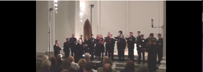
Die zwölf heiligen Zahlen
(Arrangt Dr. Ross W. Duffin
sous sa direction, par le choeur Quire
de la Case Western Reserve University, Ohio).
(Cet enregistrement est tiré du Blog
"Terre Celtiche" de Cattia Salto
et plus particulièrement des pages consacrées par
Giorgio Gregori
aux
"Serie dei numeri", Les Séries).
Selon l'"Encyclopaedia Hebraica", Zunz soutenait l'inverse de ce qu'affirmait Erk: le chant hébreu était adapté du chant allemand. Zunz était appuyé en cela par un autre historien de la Judéité,
Joseph Perlès
(1835-1894). Le fait que Zunz ait signalé plus tard la présence de ce chant dans le "rituel de la Synagogue d'Avignon" ("Allg. Zeitung des Judenthums," 1839. p. 469), ne change rien à la thèse initiale:
le chant hébraïque procède du chant chrétien et non l'inverse.
Le fait qu'un manuscrit de
1406
signale qu'on le trouvait inscrit sur un parchemin dans la synagogue de Rabbi Eleazar ben Kalonymos de Worms (1176-1238) n'infirme pas cette thèse.
Voici un lien vers ce chant en hébreux:
La première version imprimée du chant religieux latin
Si donc on se range à l'avis des critiques germaniques, le chant chrétien allemand intitulé
"Die zwölf heiligen Zahlen", "Les douze nombres sacrés"
, (p. 407 du "Liederhort") est à l'origine du chant religieux. C'est ce chant, traduit en latin approximatif dans la seconde moitié du 16ème siècle, que
l'Abbé Henry
a communiqué à La Villemarqué, comme celui-ci l'indique p.16 du Barzhaz de 1867. Cette version latine, selon Ludwig Erk, a été conservée dans un motet à 13 voix réparties en 3 chœurs, composé par un
Vénitien mort en 1602, Théodore Clinius
. En voici le texte:
"Hymne de Clinius"
Pars I. Nuptiae factae sunt in Cana Galileae, et ibi erant Jesus cum Maria matre sua. Vocatus erat Jesus et discipuli ejus ad nuptias. Deficiente vino jussit Jesus impleri hydrias aqua, quae in vinum versa est. Alleluja.
Pars II.
- Dic mihi quis est unus?
Unus est Jesus Christus qui regnat in aeternum.
– Dic mihi quae sunt duo?
Duae tabulae Moysis, unus est Jesus...
...
- Dic mihi quae sunt duodecim?
Duodecim articuli,
Undecim discipuli,
Decem praecepta legis,
Novem sunt ordines,
Octo beatitudines,
Septem dona spiritus,
Sex hydriae positae in Cana Galileae,
Quinque libri Moysis,
Quatuor Evangelistae,
Tres Patriarchae: Abraham, Isaac et Jacob,
Duae tabulae Moysis,
Unus est Jesus Christus, qui regnat in aeternum.
Partie I. Des noces eurent lieu à Cana en Galilée et Jésus y assista avec Marie, sa mère. A ces noces étaient invités Jésus et ses disciples. Le vin venant à manquer, Jésus fit remplir des urnes d'eau qu'il changea en vin. Alléluia.
Partie II.
- Dis-moi qui est un?
Un est Jésus-Christ qui règne pour l'éternité.
- Dis-moi ce qui est deux?
Deux tables de Moïse, un est Jésus...
...
- Dis-moi ce qui est douze?
Douze articles de la foi,
onze disciples,
dix préceptes de la loi,
neuf cohortes angéliques,
huit béatitudes,
sept dons de l'Esprit,
six urnes aux noces de Cana de Galilée,
cinq livres de Moïse,
quatre évangélistes,
trois patriarches, Abraham, Isaac et Jacob,
deux tables de Moïse,
un seul Jésus Christ qui règne pour l'éternité.
Des chants de foi (Dodici parole di verità)...
Outre le monde germanique, le chant latin datant de la moitié du 16ème siècle, incorporé à l'hymne de Clinius se répandit parmi les peuples de langues latines sous deux formes: "CHANTS DE FOI" et "CHANTS DE NOMBRES".
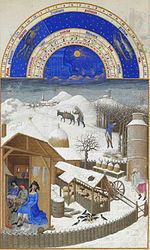
Dans
les chants de foi, les nombres servent à se souvenir de dogmes de la foi chrétienne
qui ne sont pas toujours les mêmes d'une version à l'autre, comme on l'a vu à propos des onze mille vierges, compagnes de Sainte Ursule qui remplacent parfois les onze étoiles de Joseph, ou encore les onze articles de la foi catholique.
D'autres
"paroles de vérité"
, pour reprendre le titre donné au chant en Italie (Dodici parole de verità) sont citées plus rarement: les trois Maries au Sépulcre, les cinq stigmates de Saint François d'Assise, les six jours de la création, les sept candélabres du temple, les huit âmes humaines sauvées de l'arche de Noé, les neuf mois de grossesse de la Vierge.
Une version entendue à Zurich porte la liste à
quinze articles
: treize disciples, quatorze "Nothelfer" (saints auxiliaires dans la détresse), quinze mystères de la foi.
Parfois apparaissent des
"vérités" plus païennes que chrétiennes: la lune et le soleil
en deux, comme dans la version
piémontaise
notée en 1972 par
Amerigo Villermo
à Villate en 1972 ou les
Portes de Rome
dans la version des "Douze paroles de vérité" de
Dario Fo
(1966) :
"La lüna e ‘l sul" (La lune et le soleil)
- E ün,/ al prim ch’al è gnü an cust mund
al è nos car Signor.
- E düi,/
la lüna e ‘l sul
,
al prim ch’al è gnü an cust mund...
- E trè/ i trè Re Magi...
- E quat,/ i quattro Evangelisti…
- E sinch/ le cinque Piaghe…
- E ses,/ i ses Gaj ch’a cantu ‘n Galilea…
- E sèt, /i sèt Sacramenti…
- E ot, j’ot Beati …
- E nov,/ nov Cori angelici …
- E des, des Comandamenti …
- En un,/ Le premier qui est venu en ce monde
c'est notre cher Seigneur.
- en deux,/
la lune et le soleil
,
Le premier qui est venu en ce monde...
- En trois/ les trois rois mages,
- En quatre,/ les quatre Evangelistes…
- En cinq/ les cinq plaies du Christ…
- En six, les six coqs qui chantèrent en Galilée
- En sept, /les sept Sacrements…
- En huit, les huit béatitudes …
- En neuf,/ les neuf choeurs angéliques …
- En dix, les dix Comandements …
La lüna e'l sul
(recueilli par Amerigo Villermo à Villate, Piémont en 1972).
Notons que le motif "La lüna e'l sul" (la lune et le soleil) qui fournit le titre et l'article 2 des deux versions de ce chant ne peut être considéré comme un marqueur calendaire comme dans les multiples variantes des "Vêpres des grenouilles" (cf. infra). En tant qu'élément du récit de la création, c'est aussi une vérité religieuse.
On pourrait aussi citer les "dix mille chevaliers" du chant de
Zurich
, ainsi que les "sept arts libéraux" et les "neuf Muses" du
"New Dyall" anglais
qui est noté sur un manuscrit datant de 1625.
Aux Chants de nombres et jeux de mots
Les éléments religieux s'estompent ou disparaissent complètement dans les
"chants de nombres"
qui reproduisent plus ou moins la structure des "chants de foi", énumération d'articles et reprise cumulative, mais dont l'objet relève plus ou moins clairement du jeu.
La
"ronde religieuse"
canadienne qui se présente comme une danse à six couples dont chaque danseur interprète un article de la foi fait la charnière entre les deux catégories.
La
"Foi de la Loi"
de l'ouest de la France garde le souvenir de ses pieuses origines dans le refrain introductif
("La première partie de la foi de la loi/
Dites-la moi, frère Grégoire!")
, mais les réponses du moine se situent dans un tout autre registre:
"— Deux ventres de veau, Un bon farci sans os..."
Le chant français:
"La tête à Matthieu"
est une succession de
calembours
laborieux sur les noms des nombres, mais l'
origine religieuse
du chant est toujours présente:
Y a deux Testaments/ L'Ancien et le Nouveau-o-o-o-o
Y a qu'un ch'veu sur la tête à Matthieu!/ Y a qu'une dent dans la mâchoire à Jean (les rimes "ieu" /"an" reprennent celles du 'Crédo': "Je crois en Dieu, le Père tout puissant")
Y a
Troyes
en Champagne,/ Y a
Cath
erine de Médicis,/ Y a
Sim
plicité,/ Y a
Sys
tème métrique./ Y a
C'est
épatant./ Y a
Huît
re d'Ostende./ Y a
N'oeuf
à la coque./ Y a
Dis c'
que tu veux./ Y a
On s
'en fout./ Y a
D'où c'
que tu viens?/ Y a
Très
étonnant.
La difficulté qu'éprouvent les interprètes de ces chants d'étrennes (ou de mai) à mémoriser ces éléments et à ne pas les prononcer de travers en a définitivement transformé la nature pour en faire des
jeux mnémotechniques ou des épreuves d'élocution
.
La Britannique
Lina Eckenstein
(1857-1931) dans "Comparative Studies in Nursery Rhymes" (London: Duckworth & Co., 1906), pp. 134-142, note l'apparition dans un livre de jeux du 18ème siècle du jeu de Noël de la
"Grenouille qui se dandine la gueule ouverte"
. Les participants, assis en rond, entamaient un dialogue où les réponses cumulatives valaient un gage à qui se tromperait:
"Achète-moi ça: — Qu'est-ce que c'est? / La grenouille qui se dandine la gueule ouverte.../ Deux quignons qui étouffent un chien.../ Trois singes attachés à un sabot, etc."
Les références religieuses sont complètement absentes de ces jeux...
Mais, vous avez dit "Grenouille"?
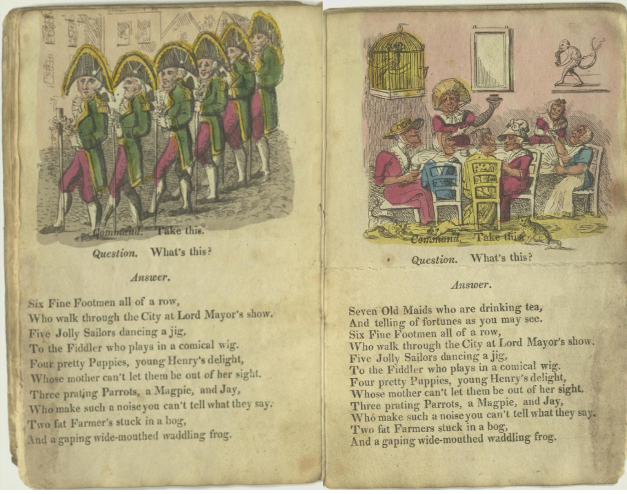
"The Gaping Wide-mouthed Waddling Frog" 1817: A New game of
questions and commands. Printed for E. Wallis, 42 Seinner Str.
and J. Wallis Marine library, Sidmouth.
Généalogie des chants récapitulatifs religieux
Mais ces considérations n'entraînent pas que le chant énumératif religieux ait précédé les "Vêpres" ou les "Perdioles" dont nous parlerons plus loin. Sa "genèse" pourrait se présenter ainsi (cf. traduction anglaise ci-contre):
Die zwölf heiligen Zahlen
1. - Lieber Freund, ich frage dich.
- Liebster Freund, was fragst du mich?
- Sag mir, was ist Eins?
- Eins und Eins ist Gott der Herr,
der da lebt und der da schwebt
im Himmel und auf Erden. -
12. - Lieber Freund, etc.
Sag mir, was sind Zwölf?
- Zwölf sind Apostel,
eilf tausend Jungfraun,
zehn Gebote Gottes,
neun Chör der Engel,
acht Seligkeiten,
sieben Sacramente,
sechs Krüg mit rothem Wein,
die der Herr geschenket ein
zu Cana in Galiläa,
fünf Wunden Christi,
vier Evangelisten,
drei Patriarchen,
zwei Tafeln Mosis,
Eins und Eins ist Gott der Herr,
der da lebt und der da schwebt
im Himmel und auf Erden. -
Hymne de Clinius
Contrepartie latine du précédent.
Reproduit dans plus de 80 versions
chrétiennes d'Europe et d'Amérique.
Les avis divergent sur le point de savoir lequel des deux chants précédents est le plus ancien.
1. Eins, das weiß ich,
einig ist unser Gott,
der da lebt und der da schwebt
im Himmel und auf der Erd.
Zwei und das ist mehr,
und dasselbe weiß ich:
zwei Tafeln Mosis.
Einig ist unser Gott
...
12. Zwölf und das ist aber mehr,
und dasselbe weiß ich:
zwölf sind die Geschlechter
[die Stämme der Juden]
;
Elf sind die Sterne
[die Joseph im Traum sah]
;
Zehn sind die zehn Gebote;
Neun sind die Gewinnung
[9 Monate Schwangerschaft]
;
Acht sind die Beschneidung
[Knabe w. am 8. T. beschnitten]
;
Sieben die Feierung
[Sabbat wird als 7.Tag gefeiert]
;
Sechs die Lehrung
[Teile des Talmuds]
;
Fünf sind die Bücher [Mosis];
Vier sind die Mütter
[Sarah, Rebekka, Rachel, Lea]
;
Drei sind die Väter
[Abraham, Isaak, Jakob]
;
Zwei die Tafeln Mosis;
Einig ist unser Gott.
13. Dreizehn, das ist aber mehr,
und dasselbe weiß ich:
dreizehn sind die Sätze (Sitten)
[Talmudische Lehrsätze, wodurch
die heilige Schrift erklärt wird]
.
Die Horae
(Parodie de chant de foi)
1. - O lector lectorum dic mihi:
- Quid est unus?
-Unus est Oeconomus
Qui regnat super ancillas
In culina nostra.
2. - O lector lectorum dic mihi:
Quid sunt duae?
...
12. - O lector lectorum dic mihi:
Quid sunt duodecim?
Duodecim apostoli;
Undecim discipuli;
Decem sunt praecepta;
Novem Musae;
Octo sunt partes (orationis);
Septem sunt artes (liberales);
Sex hydriae positae Canae Galilaeae;
Quinque libri Mosis;
Quatuor Evangelistae;
Tres sunt Patiarchae:
Abraham, Isaak und der kleine Jakob
Duae tabulae Mosis,
Unus est Oeconomus
Qui regnat super ancillas
In culina nostra.
Series and Vespers of the Frogs
The 'Series' were transposed by
La Villemarqué
from some of the many versions of the 'Vespers of the Frogs', a genuine folk song and counting rhyme that appear in his book as a "druidic catechism".
Thus he assigned this song - with which the second (1845) edition of the
Barzhaz Breizh
opened -, the role played by the introductory piece in the 1839 edition,
"Gwenc'hlan's Prophecy"
:
namely, proving the existence in Lower Brittany of an oral tradition which could be traced as far back as the Druidic times, before the
landing of the first Britons
in Armorica around 450 AC, and was still alive in some pieces of 19th century Breton lore.
In this first song, like in most of the next ones, the author is torn between his poetic imagination and his duties as an unprejudiced, stern palaeographer.
Because of that kind of adaptation intended to bestow on his models an ancientness they could a priori hardly claim, La Villemarqué was reproached for having completely invented his historical and mythological texts.
When in October 1867, in his preface for the reissue of Lagadeuc's ancient dictionary, the Archivist of Finistère, Le Men, accused La Villemarqué of being a forger and wrote:
"Play the bard, the archbard or even the
druid
if you enjoy it, but don't try to falsify history with your inventions...
", it is undoubtedly primarily these "Series" that he means.
clear-sighted than his narrow-minded detractors!
Relationship with other pieces
However, there are reasons to assume that
La Villemarqué showed more perspicacity than his petty detractors
, since the authentic "Vespers", display striking similitudes with many other pieces:
Formal kinship
with other poems featuring backward summing up listing, sacred or profane, in Breton and in other Celtic languages, but also in French dialects, in other Indo-European languages ??and even in Hebrew;
Community of motifs
with the French "Perdrioles" and English "Partriges in a pear tree" songs which include the same unusual pictures: various animals, constellation of the Pleiades, strangers and rivals, moonlight, children, lonely character..
Antiquity of some references
(frogs, hog, sons of Henry):
- MM. Mathieu Halfort and Bernard Sergent draw,concerning frogs for example, the parallel between the "Séries" and a passage from a Sanskrit text, going back, in part, to the 4th century BC, the
Mahabharata
- On the other hand, M. Boidron quotes (p. 302) an extract from the
"Rig-Veda"
, sacred poems set up more than 1000 years BC, featuring
frogs
as priests who
"look after the year's godly clockwork / made up of twelve parts...one frog mowling like a cow...another bleating like a goat, all of them bestowing goods on us...May they bestow on us hundreds of cows to lengthen our life time".
- He also sets forth excerpts from the Welsh
"Mabinogion"
(cf.
Gwenc'hlan
), the hunts for the
"White Pig"
or the "White Deer" in medieval novels where these animals, also present in the "Vespers", are vested with symbolic value.
- As well as the
"Black Book of Carmarthen"
where, in the poem "Yrolanau" (Salutations) ascribed to the poet Myrddin, a "fortunate piglet" (parchell dedwit) who digs in a "hidden place" (lle argel) irresistibly brings to mind the
"porc'hell"
and the mysterious word "orc'hel" of the "Vespers". The same applies to another Welsh poem by Myrddin
"Afalenau Myrddin" (Merlin's Apple trees).
- Last but not least, verse 100 of the Middle Breton prophetic poem
Dialog etre Arzur roe d'an Bretounet ha Guynglaff"
:
"Herry, map Herry ha daou baron da Herry"
is found, hardly altered, in the Luzel version of the rhyme:
"Teir rouanez er Maendi , perc'henn an
tri mab Herri
..."
(three queens in the stone house, property of Henry's three sons).
Possible influence of Christian symbols
- Though the "Vespers do not belong in the category of the "chants of faith", as we shall see, J-J. Boidron prompts us to note, that
Christian symbols
may have influenced certain motifs of "Vespers": the silver rings of
Mary
and the Three Kings that we also encounter in the French "Jeu de cartes" ballad: A soldier plays at cards during a mass and he justifies himself to his officer by explaining that the four kings of the game are the three Magi and Herod. This is another example of how numbers were used for "Christianizing pagan practices".
In the
Légendes chrétiennes
by F-M. Luzel (1881), the story "The Card Game Serving as a Mass Book" takes up this theme and develops it.
It unfolds exactly as in a
song of faith
(cf. below): the ace is the One God, the two and three complete the Holy Trinity, the four hints at the Gospels, the five at the wise virgins, the six at the six days of creation and the seven at the Sunday when the Creator rested, the eight recalls the Beatitudes, the nine reminds us of the lepers cleansed by Jesus who forgot to thank him, the ten of the ten commandments, the queen of hearts is the queen of Sheba, the jack of clubs is the infamous servant who slapped Our Lord.
The
calendar character
(cf. below) of the card game is also present in the story: all the points of the deck added together make 364: these are the days of the year, the 52 cards are the weeks, the Twelve figures represent the 12 months of the year.
The captain to whom the soldier gives this explanation decides to lift his punishment and gives him a six-franc piece as well!
Extra-Indo-European references (chronological and genealogical enumerations).
Beyond the ancient Indo-European references, the CNRS researcher, specialist in Syro-Mesopotamian architecture and iconology,
Laura Battini
, on her site anc.hypotheses.org, mentions, as related to the " Vespers":
An extract from the
Babylonian Chronicles
, a tablet where are recorded the deeds of King Asarhaddon of Assyria (-681 -669) in the form of a chronological enumeration: "...The 4th year... The 5th year..." up to the 12th year.
A passage from the
Epic of Gilgamesh
, in which the hero's friend, Enkidu, describes life after death to him. It is a narrative by questions and answers in the form of a numerical series ranging from one to seven: "Have you seen the man who begot one son? ...two sons? etc". It is only from four sons that the deceased may consider himself happy.
.
How La Villemarqué bent the rules in his poem
However what, on first analysis, seemed to prove his detractors right, is that here, more than elsewhere, La Villemarqué did not shun overstepping limits he had set to his own creativity. As from the 1845 edition, the "Preface" to the collection (pp VII and VIII) includes this statement:
"The individual versions of the same song complete and clarify one another. Therefore the collector has no correction to make and the course he should keep is giving with the highest possible accuracy the most widely spread reading. The only infringement he may allow himself is replacing some flawed phrases or less poetical verses of this version with better phrases, rhymes or verses found in other versions. Such was the method applied by
Walter Scott
(in
"Minstrelsy of the Scottish Border"
published in 1802 - 1803)
: I followed him. These are the only liberties I felt free to take with the texts I collected..."
It cannot be denied that in combining the many versions of the song quoted by
Anatole Le Braz
(see below), the Plouaret, Scaër, Kerambrun, etc. versions, collected by De Penguern or Kerambrun, etc. most of La Villemarqué's text may be retrieved: the sow and the young boars, the vessels loaded with wine and fabrics, the grinding stone, the priests in the blood stained shirts returning from Nantes... And it is obvious that these poems derive their surrealistic features from the quest for
RICH RHYMES
: - "loar", "c'hoar" ("moon", "sister"). But La Villemarqué was not contented with substitutions between the different versions. In his endeavours to make more sense, he apparently indulged in
replacements and additions of words
that have little reference to the material collected.
Maybe he would have been kept out of "mischief", if the critics had not remained silent, but they were very likely impressed by his being supported by outstanding scientists like
Augustin Thierry and Claude Fauriel
.
A very convincing result
In the present case, La Villemarqué makes use of a counting rhyme presumably copied from a cumulative song where twelve (seldom thirteen) articles of the Christian faith are set forth in a mnemonic array.
Some versions of the "Vespers of the Frogs"
have kept references to
Christian dogma or liturgy
:
priests or monks, novena, hallowed ground, acolytes, exaudi, Mary, clerk, mission, remission...
which La Villemarqué made a point of rubbing out. His least sin was to have swapped the word "rannoù" (series) for "raned" (frogs), or spirited away the word "gosperoù" (vespers).
The result proved very plausible judging, among others, by the subtitle
Edmond de Coussemaker
in his "Songs of the French Flemish" published in Gent in 1856, appended to a song he gathered in the so-called "Westhoek". In spite of its subtitle no trace of "druidism" might be found in this song:
"De twaelf Getallen" (The Twelve Numbers)
"Druidiske Herinneringen", (Druidic remains)
Nowadays, "druidomania" has become "fantasy": following in the footsteps of the undisputed master of the genre, J.R.R. Tolkien, the comic book artist François Bourgeon (born in 1945) depicts in "Les Yeux d'étain de la ville glauque" a druid who teaches his disciple the stanzas of the "Vêpres" (or the "Séries"). The same vein is exploited in the comic book "U4 Koridwen" by Yves Grevet (born in 1961).
"Een is eene, Eenen God alleene, Een God alleen, En dat gelooven wy..."
"One is one. One God alone. One God alone. In that we believe... Twelve apostles, eleven thousand virgins, ten Commandments, nine choirs of angels, eight beatitudes, seven Sacraments, six jugs of Cana, five Books of Moses, four Evangelists, three Patriarchs, two Testaments, one God."
(Here is a link to the full text and the tune to it:
De Twaelf Getallen
)
This song is the translation of a
Latin hymn
which is quoted in the book. La Villemarqué, too, quotes in the 1745 edition of his works nearly identical Latin lyrics compiled by a priest, Tanguy Guéguen in a 1650 hymn collection:
"Noveloù ancien ha devot..."
1. Dic mihi quid unus? - Unus est Deus qui regnat in coelis.
R. Unus est Christus qui regnat Deus.
2. Dic mihi quid duo? - Duo sunt Testamenta, Unus est Deus...
and so forth until
"Duodecim Apostoli".
La Villemarqué writes:
"This demonstrates that the first Breton apostles waged war against remnants of pagan poetry of this people in the same clever way as they did against material remnants of their worship... Far from destroying them, they allowed form, rhythm, composing method and all the pagan frame of the Druidic anthem to accommodate the Christian faith; Only contents and subjects were changed by them. The
apostle borrows from the Druid his system to undermine his influence
. The latter drew from his hallowed verses the doctrine to be inculcated on his pupils' minds, by means of the first twelve numbers repeated twelve times; his antagonist, adopting the same figures, attaches to each of a fitting truth from the Old or the New Testament, which the young novice shall easily remember as it is often repeated."
Whichever of the two rhymes was first devised,
the Latin rhyme has a Breton counterpart
which was published by Luzel in his "Sonioù" under the title:
"Gousperoù Kerne" (Vespers of Cornouaille)
12. Petra eo daouzek?
Daouzek abostol,
Unnek profet,
Dek gourc'hemenn,
Nav arc'hel,
Eizh Eurusted,
Seizh sakramant,
C'hwec'h podad gwin e Kana Galile,
Pemp bara an dezert,
Pevar Avieler,
Tri ferzon an Dreinded,
Daou destamant,
Un Doue hepken pehini zo en neñv.
12. What is twelve?
Twelve apostles,
eleven prophets,
ten commandments,
nine archangels,
eight beatitudes,
seven sacraments,
six jars of wine at the wedding at Canae,
five loaves in the desert,
four evangelists,
three Persons of the Trinity,
two Testaments,
one God who is in heaven.
Daniel Giraudon collected at Pont-Melvez, on 20.10.1979 from the singing of Louis Le Page a version of the "Vespers of Cornouaille" titled "Gousperoùar Brotestanted" "Vespers of the Protestants". It features 2 articles borrowed from the "Vespers of the Frogs" (articles 5 and 6) and replaces the religious references in articles 9 and 10 with more mundane ones ("loves" and "pleasures"). Moreover, 2 items are wrong quotations: the Gospel mentions 6, not 4 jars at the Wedding at Cana and the Bible 10 commandments instead of 11.
"Gousperoù ar Brotestanted" (Vespers of the Protestants)
Un Doue hepken pehini zo en neñv,
Un Doue hepken pehini zo en neñv,
...
Daou destamant, un Doue hepken…
Tri ferson Drinded, daou destamant, un Doue hepken...
Pewar
bodad gwin, ….
Pemp porc’hell gwiz,….
C’hwec’h beuc’h koele,….
Seizh sakramant,….
Eizh Eurusted,…..
Nav amourousted,…..
Dek plijadur,…..
Unnek
gourc’hemenn, …..
Daouzek abostol……
One God who is in heaven,
One God who is in heaven,
...
Two Testaments, One God...
Three Persons in the Trinity, two Testaments, one God...
Four
jars of wine, ....
Five piglets of a sow,....
Six cows of a young bull,....
Seven sacraments,....
Eight beatitudes,.....
Nine loves,.....
Ten pleasures,.....
Eleven
Commandments, .....
Twelve apostles......
Forms derived from religious song: Satirical adaptation, songs of lies
The below explanations show that there is little probability of the origin of the Latin song being as imagined by La Villemarqué. On the other hand, there is a yawning gap between the "Gousperoù Kerne" and the "Gousperoù ar Raned" (Frogs) proving that it would be as risky to assume in the latter rhyme a
more or less satirical adaptation of the Latin lyrics
. This kind of adaptation does exist but it looks quite different, as evidenced by this excerpt from the last song recorded by La Villemarqué in 1892 on
p.286 of NotebookN° 2
, titled:
"Pater Noster"
Paternoster debid
ore
Marv eo kiez ar Bolore...
Confiteor, digor din
Kalz am-eus. Kalz a fell din...
Paternoster debid
ore
Dead is the dog of Boloré
Confiteor, open the door
I have a lot but I need a lot.
This pastiche features a first line ending in
"ore"
which clearly demonstrates that this enigmatic word indentifies the piece at hand.
Nor are the "Vespers", as pertinently stated by Jean-Jacques Boidron in his aforementioned book (p. 312), a so called
"song of lies"
, proclaiming impossible things. The Lower Brittany repertoire has such ditties. Luzel published some in his "Sonioù".
Gevier (Lies)
Me'm-boa gwelet pevar forc'hell
O tañsal en ur skudell...
I did spy four pigs
Dancing on a porringer...
What the "Vespers" tell us is admittedly weird but not strictly impossible.
A Slav version of the song of faith
Although "Vespers" and their procession of images (pigs, vessels, wounded men, days and moons, brothers and sisters, black cows...) and the religious hymn are obviously two distinct entities, there is no is not uninteresting to dwell on the latter for a moment. Very soon it became evident that the cumulative song of faith in twelve stanzas
was not peculiar to Brittany.
The scholar and poet
Thalès Bernard
(1821-1873) wrote to the author Adolphe Paban (1839-1900), in 1869:
"In the Dialogue [in the Barzhaz] I recognized at once a Southern Slavic song from
Moravia
...The druidic piece was translated into Latin (about that no doubt: the text was preserved) by some priest who herewith borrowed their reasoning method from our forefathers; and some missionary may have forwarded the Latin verses to the Slavs... I shall inform La Villemarqué"
.
The editor (Maurice Le Dault) of the scientific journal "Le Fureteur breton", book III, year 1907-1908 who published this letter, wonders in a footnote
"...if, rather than the contrary, it is not more likely that it was the Slavic song that inspired La Villemarqué's poem" (!)
As stated by a fine contributor, Mr Josef Berger, this assumption is untenable. The first collection of Moravian folk songs, "Moravské národní písne" compiled by
František Sušil
, was not published until 1859 (14 years after the "Series"). The song
"Dvanáctero poctu"
(The twelve numbers) appeared there first in two versions along with 2 tunes. Other versions were to be published even later, by Karel Jaromír Erben (1864) and František Bartoš (1889).
If we may object to the Moravians (of the Brno area) being dubbed "South Slavs", the close relationship of this song with the Latin hymn above is beyond all doubt:
"Zácku, žácku ucený"
žácku, žácku ucený,
Ze všých škol vybíraný,
A ty viš, nám povíš,
Co je jeden?
A já vím, vám povím,
Co je jeden.
Jeden jest Jesu Krist,
Co nad námi králem jest.
...
Dve tabule Mojžišovy;
Tri patriarchové.
ctyry evangelistové.
Pet ran Kristových krvavých.
šest jest stoudvi kamenných,
V Galilej postavených
Sedm daru Ducha svatého,
Osmero blahoslavenstvi
Devet je zboru anjelských
Deset Božích prikázaní,
Jedenást panen zamordovaných
U Kolína pochovaných
Dvanást apoštolu po svete poslaných
Pupil, learned pupil,
Just out of so many schools,
Do you know, shall you tell us,
What is one?
I do and I'll tell you
What is one.
One is Jesus-Christ,
The King who reigns over us.
...
Two Tables of Moses;
Three Patriarchs;
Four Evangelists;
Five bleeding wounds of the Christ;
Six stone jugs
At the wedding in Galilee;
Seven gifts of the Holy Spirit;
Eight beatitudes;
Nine angelic choirs;
Ten Commandments of God;
Eleven slaughtered virgins
Buried in Cologne
(Saint Ursula's companions)
Twelve apostles sent out to preach the Gospel.
"Mistre nad mistry ucený"
Mistre nad mistry ucený
A po školách vycvícený
Povez mne co jest jedno?
A já dobre vim
já tobe povim:
A jeden je pán Buh a námi
Který panuje nad námi hrišnými...
Master, most learned of all masters,
Who were taught at so many schools,
Shall you tell me what is one?
I know it precisely
And I shall tell you:
One is God our Lord,
Who reigns over us sinners...
Hebraic origin of the chant
In the Middle Ages, enumerative chants in Latin were recited in cloisters and monasteries.
Variations appeared, as time went by, as well in the Latin text, as in the translations into vernacular languages which increasingly admitted non-religious elements.
Thus, Stanza 11 of the Latin verse quoted by La Villemarqué refers to
Joseph's vision
who had a dream where the sun,
the moon and eleven stars
representing his parents and his eleven brothers made obeisance to him (Genesis, 37.9):
"Undecim stellae a Josepho visae"
. A French version of this song:
"Dites-nous"
collected between the two world wars at Villard-de-Lans by
Marguerite Gauthier-Villars
(1890-1946) has the same reference:
"Tell us what comes in sets of eleven (twice)/ Eleven stars in Joseph's dream..."
.
The Flemish and Moravian songs in this stanza evoke the tale of
Saint Ursula
who spread from Cologne throughout Europe in the 13th century. Jacques de Voragine recounts it in his "Golden Legend" published between 1261 and 1266. Three Universities, Sorbonne (Paris), Coimbra and Vienna chose at the time Saint Ursula as their patron saint. It is all the more puzzling that the
Latin pastiche
, published
in 1816
in
"Neues deutsches allgemeines Commers- und Liederbuch"
(der edlen Burschenschaft), the Song collection of the German Student guilds, does not refer to the holy girl and her eleven (thousand) unfortunate companions slaughtered by Attila.
On the other hand, the one God is replaced by the
"steward who reigns alone over our kitchen maids"
and the song tells of eleven disciples, of ten commandments, of nine muses, of seven liberal arts, while the other stanzas have kept their religious character. As stated by
Adolf Pernwerth von Bärnstein
(in "Ubi sunt qui ante nos in mundo fuere?", Würtzburg, 1881), the title "The Hours" (die Horae) and the mention of the eight parts of the breviary (octo partes), hint at where this parody originates: a German
faculty of Catholic theology
.
The same students' song is addressed by
Johann-Christof Wagenseil
in his curious
"Belehrung der Jüdisch-Teutschen Red- und Schreibart"
(Teaching the spoken and written language of the German Jews, Francfort,
1715
), in connection with a
Hebraic Easter chant
printed in translation, which he assumes to be either a copy of our Latin chant, presumably composed by monks or, on the contrary, the model for the said Latin chant. In it are mentioned: one God, two tables of the covenant, three patriarchs, four matrons, five books of the Law, six books of the Mishnah, seven days of the week, eight days preceding circumcision, nine months preceding childbirth, ten commandments, eleven stars of Joseph, twelve tribes of Israel and thirteen divine attributes.
The German musicologist and composer
Ludwig Erk
(1807 -1883), the author of
Deutscher Liederhort
(Hoard of German songs, Berlin 1856, p. 407) also refers to this Hebraic chant, titled
»Echàd mi yodéa«
(He who knows). Since the 15th century (as stated by
Dr Leopold Zunz
, in "Die Gottesdienstlichen Vorträge der Juden, historisch entwickelt. Berlin, 1832.“ 8. p. 126.), it is recited by the master of the house after the return of the family from Passover evening celebration, to accompany the fourth libation during the ensuing repast. It is the precursor of a German chant:
"
Die zwölf heiligen Zahlen
" (The 12 holy numbers) "
whose tune was recorded in "Bohemia" (Czech Republic) and is intermediate between the Hebraic and the (dog) Latin hymn.
We hear a slightly different melody on the opposite MP3 record:
Die zwölf heiligen Zahlen
(Arrangt Dr. Ross W. Duffin
under his direction, by the Quire
Choir from Case Western Reserve University, Ohio).
(This record is taken from the Blog
"Terre Celtiche" by Cattia Salto
and more particularly the pages devoted by
Giorgio Gregori
to
"Serie dei numeri" (The Series).
According to the "Encyclopaedia Judeica", Zunz argued the reverse of Erk's thesis: the Hebrew song was adapted from the German song. He was supported in this by another historian of Judaism,
Joseph Perlès
(1835-1894). The fact that Zunz later pointed out the presence of this song in the "ritual of the Synagogue of Avignon" ("Allg. Zeitung des Judenthums," 1839. p. 469), does not alter his initial statement:
the Hebrew hymn derives from the Christian chant and not the other way around.
The fact that a manuscript of
1406
states that it was inscribed on a parchment in the synagogue of Rabbi Eleazar ben Kalonymos in Worms (1176-1238) does not invalidate this proposition.
Here is a link to this song in Hebrew:
The first printed version of the Latin song of faith
Between the Hebraic chant and the students' song comes a German hymn titled
"Die zwölf heiligen Zahlen", "The Twelve sacred numbers"
, (p. 407 of "Liederhort"). It is this hymn, which was translated into approximative Latin around 1550 that the
Reverend Henry
forwarded to La Villemarqué, as stated by the latter on page 16 of the 1867 Barzhaz edition. This Latin version was, as stated by Ludwig Erk, set to music in a motet for thirteen voices in three choirs, by the
Venetian, Theodore Clinius (d. 1602)
. Here is the text:
"Motet of Clinius"
Pars I. Nuptiae factae sunt in Cana Galileae, et ibi erant Jesus cum Maria matre sua. Vocatus erat Jesus et discipuli ejus ad nuptias. Deficiente vino jussit Jesus impleri hydrias aqua, quae in vinum versa est. Alleluja.
Pars II.
- Dic mihi quis est unus?
Unus est Jesus Christus qui regnat in aeternum.
– Dic mihi quae sunt duo?
Duae tabulae Moysis, unus est Jesus...
...
Dic mihi quae sunt duodecim?
Duodecim articuli,
undecim discipuli,
decem praecepta legis,
Novem sunt ordines,
Octo beatitudines,
Septem dona spiritus,
Sex hydriae positae in Cana Galileae,
Quinque libri Moysis,
Quatuor Evangelistae,
Tres Patriarchae: Abraham, Isaac et Jacob,
Duae tabulae Moysis,
Unus est Jesus Christus, qui regnat in aeternum.
Part I. There was a wedding at Cana in Galilee, and there were Jesus with Mary his mother. Jesus was invited and so were his disciples to the wedding. When the wine ran out, Jesus said to the servants to fill the jars with water, which was turned into wine. Alleluia.
Part II.
- Tell me, what is one!
One is Jesus Christ who reigns in eternity.
– Tell me, what is two!
Two are the Tables of Moses, one is Jesus...
...
Tell me, what is twelve!
Twelve are the articles of the faith,
eleven are the disciples,
ten are the commandments,
nine as the orders (choirs of the angels),
eight are the beatitudes,
seven are the gifts of the Spirit,
six as the water-jugs of Cana in Galilee,
five are the books of Moses,
four as the Evangelists,
three are the patriarchs: Abraham, Isaac et Jacob,
two are the tables of Moses,
one is Jesus Christ who reigns in eternity.''
From the chants of the creed (Dodici parole di verità)...
Outside the Germanic world, the 1550 Latin chant, incorporated into the motet of Clinius, spread among the peoples speaking Latin languages in two forms: "CHANTS OF THE CREED" and "CHANTS OF NUMBERS".
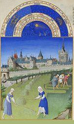
In the
chants of the creed, numbers are used as reminders of matters of the Christian faith
which are not uniformly the same in all versions. We already noticed that the "eleven thousand virgins accompanying Saint Ursule" were replaced with the "eleven stars in Joseph's dream" in some versions, as they are with the "eleven items of the Catholic creed" in others.
Other
"Words of truth"
, as this song is titled in Italy (Dodici parole de verità) are quoted less often: the three Maries at the Sepulchre, the five wounds of Saint Francis, the six days of creation, the seven candelabra lit before God, the eight souls saved in Noah's ark, the nine months of expectancy of the Virgin.
A version recorded in Zurich carries the list to
fifteen items
: thirteen disciples, fourteen "Nothelfer" (helpers in need), fifteen mysteries of faith.
Sometimes "truths" appear that are
more pagan than Christian: "the moon and the sun"
in two, as in this Piedmontese version noted in 1972 by
Amerigo Villermo
in Villate, Piedmont in 1972 or the
Gates of Rome
in the version of the "Twelve Words of Truth" sung by
Dario Fo
(1966):
"Le dodici parole della verità" (The twelve Words of Truth)
El prim ca l’è stait al mund
l’è stait nost car Signur
Dui,
la lüna e ’l sul
Tre Re Magi,
Quattro evangelisti
Cinq piaghe dal Signur,
Ses gai ca canto in Galilea
Sette sacramenti
Otto porte di Roma,
Nove corpi santi
Dieci comandamenti,
Undici, undici stelle del sogno
Dodici, dodici apostoli
- In one,/ The First Who came into this world
is our dear Lord.
- in two,/
the moon and the sun,
- In three/ the three wise men,
- In four,/ the four Evangelists...
- In five/ the five wounds of our Lord...
- In six, the six cocks that crowed in Galilee
- In seven, /the seven Sacraments...
- In eight, the eight gates of Rome...
- In nine,/ the nine saints' corpses ...
- In ten, /the ten Commandments ...
- In eleven, /the eleven stars in Joseph's dream
- In twelve, /the twelve apostles...
La
lüna e'l sul
(Piemont, Dario Fo, "Il Nuovo Canzoniere Italiano", 1966)
Note that the motif "La lüna e'l sul" (the moon and the sun) which provides the title and item 2 of the two versions of this song cannot be considered a calendar marker as in the multiple variants of the "Vespers of the Frogs" (see below). As an element of the Creation story, it is also a religious truth.
We also could mention the "ten thousands of knights" in the
Zurich
song, as well as the "seven liberal arts" and the "nine Muses" in the
English "New Dyall"
recorded on a 1625 manuscript.
To the chants of numbers and jocular songs
The religious elements become indistinct or disappear altogether in the
"chant of numbers"
, a question and answer game which preserves more or less faithfully the structure of the "chant of the creed", since the answer consists in the cumulative listing of items, starting from the one that had gone before, but is used for entertainment.
The Canadian
"religious round"
is danced by six couples and each dancer represents a number and an item of the creed: it is at the turning point between the two categories.
The song
"Foi de la Loi"
(The Lawmen's Creed) from the West of France keeps remembrance of its pious origin in the introducing burden
("The first part of the lawmen's creed / Tell me, Brother Gregory!")
, but the monk's answers are far from pious:
"— Two breasts of veal, A good stuffing without bones..."
Though the French ditty
"La Tête à Matthieu" (Matthew's head)"
is a long array of awkward
puns on names of numbers
, its
religious origin
is still evident:
There are two Testaments/ The Old and the New-oo-oo-oo-oo
Just one hair on Matthew's head!/ Just one tooth on John's jaw! (the rhymes "ieu" / "an" are those of the French 'Crédo': "Je crois en Dieu, le Père tout puissant")
Troyes
in Champaign (trois=three)/
Cather
ine of Medici (Quatre=four)/
Sim
plicité (cinq=five)/
Sys
tème métrique (six)/
C'est
épatant (sept=seven)/
Huît
re (oyster from Ostend) (huit=eight)/ U
n œuf
à la coque (soft-boiled egg) (neuf=nine)/
Dis
-moi (tell me what you want) (dix=ten)/
On s
'en fout (we don't care) (onze=eleven)/
D'où c'
que tu viens (where do you come from?) (douze= twelve)/
Très
étonnant (very astonishing) (treize=thirteen)
The difficulties which the singers experienced when remembering these songs and endeavouring to deliver them accurately definitely turned them into
mnemonic games or diction tests
.
For instance, the British researcher
Lina Eckenstein
(1857-1931) in her "Comparative Studies in Nursery Rhymes" (London: Duckworth & Co., 1906), on pp. 134-142, mentions a Christmas game, first described in an eighteen century toy-book, dubbed as
"The Gaping Wide-mouthed Waddling Frog"
. The players sat in a circle and a dialogue ensued whereby the answers, given in a cumulative form, caused whoever made a mistake to give a forfeit :
"Take that:— What 's that?/ A gaping wide-mouthed waddling frog.../Two pudding ends will choke a dog.../Three monkeys tied to a clog, etc."
Religious references are completely missing from these games...
But, did you say "frog"?
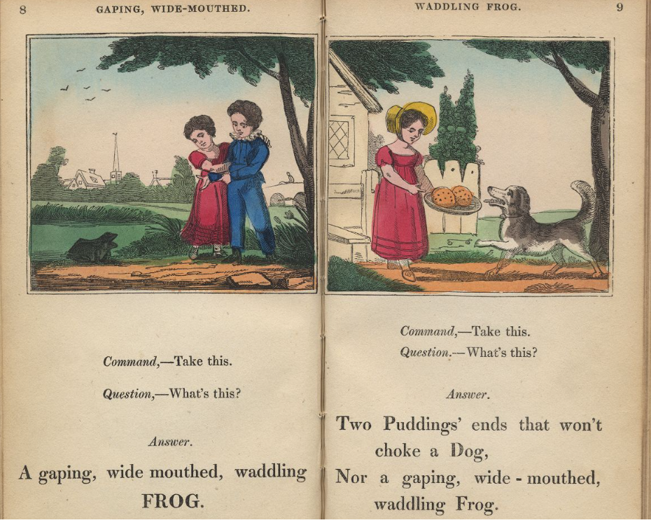
"The Gaping Wide-mouthed Waddling Frog" 1822:
A New and entertaining game od questions and commands.
(with proper directions for playing the game and crying
the forfeits). Printed for A. K Newman and Co.
Genealogy of religious summary songs
We have come far away from La Villemarqué's wild Druidic imaginings and, as far as the form is concerned, presumably much nearer the genuine trace of the "Vespers of the Frogs" that we could summarize as follows:
The twelve holy numbers
1. - Dear friend I ask you.
- Dear friend, what do you ask?
- Tell me, whet is one?
- One and unique is God, the Lord,
who lives and hovers
over heaven and earth. -
12. - Dear friend, etc.
Tell me, what are twelve?
- Twelve are the apostles,
Eleven thousands of virgins,
Ten commandments of God,
Nine choirs of angels,
Eight beatitudes,
Seven sacraments,
Six jugs full of red wine,
Which the Lord spent
at Cana in Galilee,
Five wounds of Christ,
Four evangelists,
Three patriarchs,
Two Tables of Moses,
- One and unique is God, the Lord,
who lives and hovers
over heaven and earth. -
Hymn of Clinius
The Latin equivalent of the foregoing.
Adapted in over 80 Christian versions
in Europe and America.
Opinions differ as to which of the two preceding songs is the older.
1. I know one,
One is our God,
Who lives and reigns
over heaven and earth.
Two is still more,
Yet I know it, too:
Two tables of Moses.
One is our God
...
12. Twelve is still more,
Yet I know it, too:
Twelve are the tribes
[the tribes of Israel]
;
Eleven are the stars
[which Joseph saw in dream]
;
Ten are the Commandments;
Nine are the months
[preceding childbirth]
;
Eight are the days
[preceding circumcision]
;
Seven are the days of the week
[Sabbath celebrated on 7th day]
;
Six are the books
[of the Mishnah]
;
Five are the books [of the Law];
Four are the matrons
[Sarah, Rebecca, Rachel, Lea]
;
Three are the patriarchs
[Abraham, Isaac, Jacob]
;
Two are the tables of Moses;
One is our God.
13. Thirteen is still more,
Yet I know it too:
Thirteen are the principles
[Talmudic precepts by which
the Holy scriptures may be explained]
.
Die Horae
(Parodic students' song)
1. - Reader of all readers, tell me:
- What is one?
- One is the steward
Who reigns over the maids
In our kitchen.
2. - Reader of all readers, tell me:
What are two?
...
12. - Readers of all readers, tell me:
What are twelve?
Twelve apostles;
Eleven disciples;
Ten precepts;
Nine muses;
Eight parts (of the breviary);
Seven (liberal) arts;
Six jugs at Cana in Galilee;
Five books of Moses;
Four Evangelists;
Three Patriarchs:
Abraham, Isaac and little Jacob
One is the steward
Who reigns over the maids
In our kitchen.
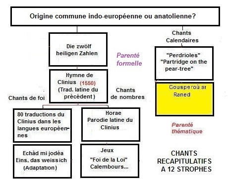
Filiation possible des "chants de Foi et des chants de nombres"
Possible relations between "chants of the Creed and chants of numbers"
II Chants calendaires : Les douze jours - Calendar songs : The Twelve Days
Les "perdrioles" (chansons de nouvel an) françaises
Nous revenons à présent à nos moutons, ou plus précisément à nos truies et pourceaux et à nos soleils et nos lunes.
Une catégorie particulièrement bien représentée parmi les chants français à récapitulation fait intervenir
un décompte de jours
dans l'énumération qui structure le propos. Un cadeau correspond à chaque jour de la liste qui s'allonge à chaque couplet. Le premier cadeau est généralement une
"perdrix qui vole"
, d'où le nom de
"perdriole."
Gascogne:
Ce sont apparemment, des considérations purement culinaires qui inspirent les quinze cadeaux que l'on fait au cours des quinze premiers jours de mai dans ce chant gascon:
"Le prumiè del més de mai" (le premier jour de mai)
Le prumiè del més de mai,
Qu'embouiarei à ma mio?/
1) Uno perdic que bolo, que bolo.
2) Le segoun -dos tourtourelos.
3) Le très - très pijouns blancs.
4) Le quatre - 4 canards boulants à l'èr.
5) Le cinq - cinq lapins an terro.
6) Le sieis - sieis lèbres al camp.
7) Le sept - sept lebriès courants.
8) Le beit - beit chibals blancs.
9) Le naut - naut bious cournaus.
10) Le dèts - dèts moutous bêlants.
11) Le ounze - ounze mousquetaires
benount de la guerro.
12) Le doutze - doutze doumaizèlos,
graciousos et bèlos.
13) Le tretze - tretze bouquets blancs.
14) Le quatorze - quatorze pai blancs.
15) Le quinze - quinze bouts de bi.
Le premier du mois de mai,
Qu'enverrai-je à ma mie?/
1) Une perdrix qui vole, qui vole.
2) Le deux - deux tourterelles...
3) Trois pigeons blancs
4) Quatre canards volant en l'air
5) Cinq lapins en terre
6) Six lièvres au champ
7) Sept lévriers courants
8) Huit chevaux blancs
9) Neuf boeufs cornus
10) Dix moutons bêlants
11) Onze mousquetaires
venant de la guerre (*)
12) Douze demoiselles
gracieuses et belles
13) Treize bouquets blancs
14) Quatorze paincs blancs
15) Quinze tonneaux de vin.
(*) cette rime qui n'existe pas en occitan montre que ce chant est traduit d'une perdriole française.
Dans le Cambrésis
, on chante
"Les dons de l'an"
en faisant correspondre le quantième du mois au nombre de cadeaux: d'une perdrix à douze petits fromages.
Flandres françaises:
Outre ce chant, Edmond De Coussemaker mentionne un chant d'étrennes similaire,
"Les douze mois"
, collecté dans les Flandres françaises (on va d'une "pertriolle" à douze bons larrons):
"Perdrioles" britanniques
Ce type de chants traversa la Manche (cf. les "3 French hens" de certaines versions ainsi que
"a partridge on a peartree"
qui remplace sans doute un ancien "a partridge et une perdrix"). On le rencontre dans la tradition Anglo-Saxonne:
The Twelve days of Christmas
dans laquelle les cadeaux (des oiseaux et quelques autres animaux comestibles) se font au cours des
douze jours suivant Noël
. Le contenu de ces chants n'est surréaliste qu'en apparence: le temps qu'il ferait au cours des douze mois de l'année correspondait, croyait-on, à celui de chacun des jours suivant Noël, et l'oiseau était celui que l'on chasserait ce mois-là.
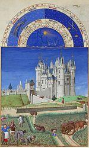
Le chant anglais "Green grow the Rushes" (Verts poussent les joncs)
De toute évidence, en tant que chant à récapitulation avec questions et réponses, la "comptine" bretonne des "Vêpres des grenouilles" est une parente plus ou moins proche de ces perdrioles et des chants anglais se concluant par la phrase "the Partridge in a Pear Tree". Mais il y a plus:
La présence de
motifs similaires à ceux des "Gousperoù"
ne laisse pas, non plus, d'intriguer dans le chant anglais
Green Grow the rushes O
, également appelé "The twelve Apostles":
Une des Mélodies de "Twelve Apostles/ Green grow the rushes"
Ces motifs sont: "les sept étoiles dans le ciel", les "trois rivaux", les "deux enfants blancs comme lis où vêtus de vert".
Quant à la conclusion
"L'un est tout seul et le sera pour toujours"
, elle rappelle étrangement la
"Nécessité unique, le Trépas père de la douleur, rien avant, rien après"
des Séries, pour laquelle aucune occurrence n'a été trouvée à ce jour dans les versions bretonnes des "Vêpres".
Ce chant ne comporte pas de référence explicite à une période précise de l'année (si l'on excepte les "huit faiseurs de pluie d'avril") ni l'évocation d'une perdrix.
Est-ce un chant de Noël?
Curieusement, le folkloriste américain
William Wells-Newell
(1839-1907) étudie ce chant dans un article publié en Jul-sep. 1891 dans le Journal of American Folklore (vol. 4. N° 14, pp. 215-220) sous le titre "The Carol of the Twelve Numbers". Il l'assimile donc à un chant de Noël ("carol"). Il le rapproche de 2 autres chants anglais comportant en deux les "enfants blancs-comme-lis vêtus de vert" où un caractère religieux est conféré à certaines références. Dans une version chantée en 1889 par des mineurs de Cornouailles au sud du Lac Supérieur:
- le
Un
devient "One of them is God alone, and He ever shall remain so". Une variante dont le style trahit l'ancienneté pré-élizabethaine semble désigner le Christ: "One they do call the righteous man / Save pour souls to rest, amen."
- le
Cinq
, "the symbol(s) at your door" justifiait, à la rigueur, le qualifiquatif de "chant de Noël", si l'on supposait que l'on évoquait l'inscription à la craie en 5 parties au dessus de la porte faite le jour de l'Epiphanie ("chalking the door"). Il devient "the ferryman in the boat". Des variantes en langue anglaise citées par Wells-Newell éloignent encore d'avantage de cette interprétation: "flamboys=flambeaux on the bourn=coast/under the bough", "tumblers=choppes on a board=comptoir";
- Le
Six
, les "proud walkers" deviennent des " cheerful waiters". variante: "proud waters" ( peut-être les six jarres d'eau transformée en vin à Cana);
- le
Huit
, "Eight is the Great Archangel" (mais, dans le Livre de Tobie (12,15), on trouve « Moi, je suis Raphaël, l’un des sept anges qui se tiennent ou se présentent devant la gloire du Seigneur »).
The Dial: (Le cadran)
Un chant tiré d'un almanach de
1625
proclame dans son titre son caractère chronologique. A côté de strophes religieuses (one God, two Testaments, three persons in Trinity, Four evangelists, ten Statutes given by God to Moses, eleven Disciples, twelve Apostles) et d'autres qui le sont moins (five senses, six days to labour, seven liberal arts, eight in Noah's ark alive, nine Muses), il insiste sur le passage des heures dans la strophe finale:
"Count one, the first hour of thy birth
The hours that follow lead to Earth.
Count Twelve, thy doleful striking knell
And then thy Dial shall go well"
"La première heure t'a vu naître
Les autres hâtent ton trépas
La douzième sonne le glas:
Le tour de cadran de tout être."
Dans une note, Welles Newell indique que le poème du Barzhaz Breizh est le fruit de l'imagination de La Villemarqué et ne relève pas de cette étude. Il semble ignorer que cette pièce procède d'une authentique tradition orale qui ne la rattache pas aux "chants de la foi", aux chants de Noël en particulier. Newell est conscient de la difficulté d'assigner à ce chant une catégorie spécifique: malgré le titre de "Vêpres Catholiques" ou "Questions pieuses" qu'on lui donne dans le domaine germanique, ce chant y fait office de chanson à boire en Rhénanie et de chant de marinier ou de chant de fêtes paysannes en Angleterre.
Cf: https:// www.jstor.org/stable/534006
Chants gallois et corniques; rapprochement avec les "Vêpres"
Ce type de chants anglais existe également en
gallois et en cornique
. Il s'agit vraisemblablement de traductions à partir de l'anglais, mais la proximité avec une langue parente, le breton, rend le rapprochement encore plus saisissant (en
gras
principaux articles équivalents des "Vêpres").
Gallois:
Un o fy mrodyr a yrrodd i mi N° 1
Wel un o fy mrodyr i ...
Wel un o fy mrodyr i ...
Wel un o fy mrodyr a yrrodd i mi:
Un ych, un tarw, un blaidd, un ci;
Un carn, un troed, un blaidd, un ci,
Ych a tharw, blaidd a chi
A yrrodd fy mrawd hynaf i mi.
(En breton: "Un oc'hen, un tarv, ur bleiz, ur c'hi").
Eh bien, l'un de mes frères m'a ...
Eh bien, l'un de mes frères m'a ...
Eh bien, l'un de mes frères m'a envoyé:
Un boeuf, un taureau, un loup, un chien;
Un sabot de cheval, un pied, un loup, un chien,
Un boeuf et un taureau, un loup et un chien
Que mon frère ainé m'a envoyés.
Chanté par Mme Gwyneddon Davies, Carnarvon qui elle-même avait entendu ce chant dans son enfance à Liverpool de M. William Rowlands originaire Gwalchmai. C'est un chant cumulatif où l'on répète deux mesures au fur et à mesure qu'on augmente le nombre en essayant de ne pas reprendre sa respiration.
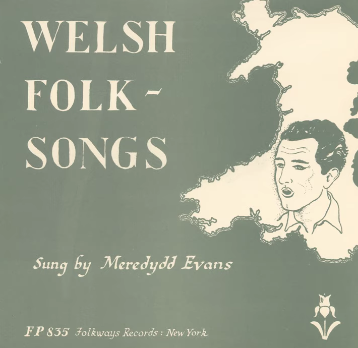
"Un o fy mrodyr" chanté par Meredydd Evans ("Merêd", 1919-2015)
Un o'm mrodyr a yrrodd i mi N° 2
Un o'm (r) mrodyr a yrrodd (haluyd) i mi
Un ych, un tarw, un blaidd (blith), un ci;
Un llo, un blaidd (blith), un ci, un ca (carn?),
Dau lo, dau flaidd (blith), dau gi (ci), dau ca
Ych (Erch) a (y) tharw, blaidd (blith) a (y) chi (ci)
Yrrodd (Halwch) fy mrawd hynaf i mi (y heni fy).
Un de mes frères m'a envoyé:
Un boeuf, un taureau, un loup, un chien;
Un veau, un loup, un chien, un chat,
Deux veaux, deux loups, deux chiens, deux chats
Boeuf et taureau, loup et chien
Que m'envoya mon frère ainé...
Tiré du recueil de chants populaires gallois présenté au concours de l'Eisteddfod de Carmathen par "Alpha" et interprété par Melle Rachel Thomas de Carmarthen; Les paroles originales sont entre parenthèses, après les mots reconstitués. Le mot "ca" est interprété non pas comme "chat", mais comme "carn"= sabot de cheval.
Un o fy mrodyr &c. N° 3
Un troed ac un cam ac
un blaidd ac un ci
Dau droed, a dau gam a dau flaidd a dau gi
Tri throed a thri cam a thri blaidd a thri ci
Pedwar troed a phedwar cam a phedwar blaidd a phedwar ci
Ych a tharw
, blaidd a chi
A rôdd y mab hynaf i mi.
Un pied et un pas, un loup et un chien
Deux pieds et deux pas, deux loups et deux chiens;
Trois pieds et rois pas et trois loups et trois chiens,
Quatre pieds et quatre pas, quatre loups et quatre chiens
Un boeuf, un taureau, un loup et un chien
Que m'envoya le fils ainé..
Chanté par Melle A. Jones de Cricieth, laquelle n'a pu se souvenir de la première partie de la mélodie.
Breton
:
"Daouzek
lestr
o verdeiñ/ Unnek
tarv
o vlejal/ Dek itron o tañsal/ Nav aotroù o lammat/ Eizh karv o redek/ Seizh alarc'h o nijal/ C'hwec'h gwaz o tozviñ/ Pemp
bizoù aour
/ Pevar evn kerneveurat/ Teir
yar
C'hall/ Div durzhunell/ Hag ur glujar o tremen en ur wezenn-bér."
Français
:
"Douze
navires
qui naviguent/ Onze
taureaux
qui meuglent/ Dix dames qui dansent/ Neuf messieurs qui sautent/ Huit cerfs qui courent/ Sept cygnes qui nagent/ Six oies qui pondent/ Cinq
anneaux d'or
/ Quatre oiseaux de Cornouailles/ Trois
poules
de France/ Deux tourterelles/ Et une perdrix dans un poirier."
Comme l'indique M. Boidron (P.344) à qui sont dus les exemples corniques ci-dessus,
"La mention presque systématique faite dans la formule initiale du chant ("the twelve days of Christmas")
d'une période clé du calendrier païen christianisé
, à savoir la période de Noël à l'Epiphanie, laisse entrevoir un rapport entre la structure du chant, ses motifs et
l'évocation calendaire..."
L'ancien calendrier celtique et les "gourdeizioù"
Cette remarque est d'une rare pertinence, d'autant que le texte breton en regard de ce passage fait correspondre aux "Douze jours de l'an" le mot
"gourdeizioù"
.
Ce mot est expliqué page 632 du Dictionnaire Franco-Breton du
Père Grégoire de Rostrenen
, à l'article "mois", de la façon suivante:
"Les douze premiers jours du mois de janvier. Ar "gourdeizioù" (de gour qui signifie mâle et deizioù jours: les "jours mâles". Sur l'opinion qu'a le peuple que la qualité de ces douze premiers jours de l'an dénote [reflète, annonce] celle des douze mois."
M.
Fañch Postic
, (CNRS, CRBC) dans un article intitulé "Les fêtes liées au calendrier" [en Bretagne], consultable en ligne (http://www.utl-landerneau.com/assets/fichiers-clients/pdf/2014-04-01-Fêtes-en-Bretagne.pdf) apporte les précisions suivantes:
"Mais l’une des préoccupations majeures était d’ordre
météorologique
: il s’agissait de deviner ce que réservait le temps pour l’année suivante, notamment au moment des récoltes d’été et d’automne. On observait pour cela les
gourdeizioù
(les « super jours ») ou "goursuhun" (la "super semaine") : à partir de Noël, chacun des jours, - ou des demi-journées dans les anciennes paroisses vannetaises où elles sont « le tribunal de l’année » (barn er ble) -, indiquait le temps d’un mois de l’année à venir. Au Nord de l’Aulne ce sont les douze premiers jours de l’année qui sont pris en
compte, parfois supplantés par les douze premiers jours de la lune (gourdeiziou al loar).
On s’accorde généralement à voir dans ces jours qui, un peu partout en Europe, servent ainsi à pronostiquer le temps de la nouvelle année, un ultime témoin du calendrier celtique qui, était d’abord lunaire..."
Ce dernier point est précisé dans sa communication à l'Académie des Inscriptions et Belles Lettres (publiée en 1903, vol. 47/N° 4/pp. 315-318), et intitulée "les Gourdeizioù et leur origine babylonienne", par
d'Arbois de Jubainville
:
"Il y a dans l'année bretonne une période initiale commençant
soit le 25 décembre, soit le premier janvier
. Elle dure douze jours,; elle s'appelle "gourdeizioù", c'est-à-dire littéralement "les sur-jours", les "jours supplémentaires". Ce sont ceux qui ajoutés aux 354 jours de l'année lunaire en font une année solaire de 366 jours. Ces 12 jours se retrouvent avec une valeur mythique en Allemagne: pendant ces 12 jours a lieu la chasse de Wotan. On les trouve aussi dans l'Inde ou, comme en Bretagne, ils présagent du temps qu'il fera pendant l'année..."
Dans un article intitulé "Le temps des Indo-européens", le président de la Société de mythologie française
Bernard Sergent
critique cette thèse du complément calendaire entre un calendrier lunaire de 354 jours et une année solaire de 365 jours. Les Indo-européens anciens préféraient à ce système l'intercalation de mois lunaires entiers, telle qu'elle apparaît dans le calendrier quinquennal de Coligny (cf.infra). Les 12 jours étaient choisis parmi ceux d'un ou deux mois lunaires (par exemple, les 6 derniers d'un mois et le 6 premiers du suivant ou des jours situés par rapport aux solstices sans égard au mois lunaire...) aux périodes cruciales de changements d'années ou de demi-années où se manifestaient des êtres de l'Autre-monde et où l'on pouvait tenter de deviner le futur. Il n'était pas question de “ rattrapage ” d’un comput sur un autre.
Un "manuel" d'interprétation des "gourdeizioù"?
Il semble difficile de démontrer que les figures des "séries" ont un lien descriptif direct avec d'
anciens noms de mois
(cf.
Noms des mois dans les calendriers vernaculaires
). Mais ce sont peut-être des signes à interprêter.
On peut imaginer que les
recettes de divination
basées sur l'observation des astres et de signes divers, aperçus en rêve ou autrement, aient été compilées sous forme de poèmes ou de chants tels que les "Perdrioles" et les "Vêpres".
En conséquence, en se référant à la
version Luzel du Trégor ci-dessus (cliquer sur l'Union Jack!)
, janvier, 1er mois de l'année serait un mois favorable, si, le 1er des "gourdeizioù", le 26 décembre ou 1er janvier, on observait le 1er signe: "un anneau d'argent à Marie"; pour février, c'était les "deux anneaux" le deuxième jour; et ainsi de suite jusqu'au signe des "12 épées" pour décembre, le 12 ème jour.
Ces signes seraient les cousins d'anciens adages tels que
"Halo lointain, pluie prochaine; halo prochain, pluie lointaine"
, connu en Basse-Bretagne sous la forme
"Kelc'hiet an heol a-dost, glav a-bell, kelc'hiet an heol a-bell, glav a-dost"
. La largeur du halo (kelc'h) aurait été mesurée en doigts (biz-ioù). Ce qui est certain c'est qu'une interprétation des faits observés était nécessaire. Comme le remarque F. de Beaulieu dans son article consacré au "Ciel des Bretons":
"Ceux qui prennent en exemple la neige qui tombe le 25 décembre et annoncent qu'il neigera en janvier oublient qu'il peut neiger le 31 décembre sans qu'ils en déduisent directement le temps de juillet"
( cf.
Annexe "météo"
)
L'
importance "agro-économique" de l'enjeu
, ressentie de façon plus atavique que raisonnée, justifierait le soin avec lequel les chanteurs populaires gravaient dans leur mémoire cette pièce énigmatique et mettaient un point d'honneur à la restituer sans faute. On peut douter que c'eût été le cas, s'il s'était agi d'un simple exercice mnémotechnique.
Ce fait a frappé même ceux qui dénièrent tout sens aux "Vêpres". A la p. 383 de "Magies de la Bretagne" (collection "Bouquins"), où ce chant figure parmi les "Enfantines", Luzel rapporte que son informateur Louis Olivier tenait la version "Brizeux-Scaër" (Bzg) de son père qui, disait-il:
"Chantait cela bien mieux que moi; dans les réunions de famille et aux repas de noces, on lui demandait toujours "Gousperoù ar Raned" et on s'extasiait sur la sûreté de sa mémoire et la volubilité avec laquelle il psalmodiait la pièce. Il me la fit aussi apprendre, dès mon enfance, parce qu'il prétendait que cela exerçait la mémoire et déliait la langue."
Le calendrier de Coligny
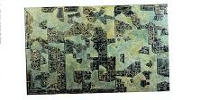
Le
calendrier quinquennal gaulois
découvert en 1897 à
Coligny
(au nord de Bourg-en-Bresse) et que l'on date de la fin du 2ème siècle présente des indications sibyllines: Les mois y sont signalés comme "matu" ou "anmatu", mots que par rapprochement avec le breton "mat" (bon) on interprète comme signifiant "faste" ou "néfaste". Les jours sont marqués de "trigrammes", des lettres M, N ou D ou complétés par des mentions telles que "ivos", "inis r", "amb". Faut-il y voir un système divinatoire élaboré?
La période des "gourdeizioù" qui fait correspondre un jour à chacun des douze mois de l'année pourrait
reproduire la structure des mois intercalaires
du calendrier de Coligny: chaque jour de l'un de ces mois, et sans doute de ces deux mois, porte le nom d'un des mois réguliers cités, au génitif, dans l'ordre avec répétition des trois premiers pour la première quinzaine et dans un apparent désordre pour la seconde.
Références indo-européennes (irlandaises et indiennes)
La Villemarqué est peut-être loin du compte quand il impute aux
druides gaulois
la paternité de ce dialogue par énumération cumulative. On est d'ailleurs assez mal renseigné sur cette mystérieuse caste. Tous les écrivains qui en parlent, Diodore de Sicile, Strabon, Pomponius Mela, Lucain, Pline l'Ancien disent à peu près la même chose et semblent se référer au même texte disparu de
Poseidonius d'Apamée
en Syrie qui avait parcouru la Gaule et peut-être la (Grande) Bretagne en 100 avant JC et dont on ne connaît que des citations. Le plus long texte de César n'échappe pas à la règle. Outre que sa description de la faune de la forêt germanique relève du conte de fées, le récit de ses campagnes ne met en scène qu'un seul druide, Diviciacus, qui n'est jamais appréhendé sous l'aspect des fonctions qu'il est censé remplir.
Mais il se trouve que les philologues celtiques
Françoise Le Roux et Christian Guyonvarc'h
, mettent l'accent sur le fait que
"Les druides celtiques ont hérité de la même tradition que les brahmanes" et que "La classe sacerdotale des Celtes ne peut être comparée qu'avec les brahmanes"
. L'historien des religions
Mircéa Eliade
écrivait également qu'
"On retrouve en Irlande nombre d'idées et de coutûmes attestées dans l'Inde ancienne"
Nous sommes donc invités à nous tourner vers le
druidisme d'Irlande et le védisme et l'hindouisme de l'Inde
qui partagent l'héritage commun le plus ancien des Indo-européens.
Concernant les "gourdeizioù",
Philippe Jouët
dans "Celtes et Celtisme" (p. 137) signale
-qu'un
texte ancien de l'Inde
le "Kathaka Samhita" (7,15) décrit un rite qui fait des "Douze jours", les
"dvadasaha"
, l'image des douze mois de l'année.
- Que l'historien
Albrecht Weber
(1825-1901) voyait dans un autre épisode de la tradition indienne, le sommeil des
esprits appelés "Rbhu"
chez le dieu Savitar Agoya la contrepartie de ces mêmes douze jours.
- Qu'
Homère
évoque les douze jours d'absence de Zeus et des dieux.
- Que dans l'ancien récit irlandais des
"Eachtra Airt"
, un oiseau unipède remporte la victoire sur un oiseau à "douze pattes", image du triomphe sur le péril des douze jours... C'est dire si cette notion est bien attestée dans le monde indo-européen ancien: Inde, Anatolie, Grèce, monde germanique.
L'intuition de La Villemarqué semble donc largement fondée.
French "perdrioles" or New year's songs
Let us now return to our sheep (French for "get back on topic"), or more precisely to our sows and swine and our suns and moons!
A very popular sort of recapitulative song features a
count of days
involved in the listing process.
A gift is made on each day of the ever increasing list. The first gift is a
"flying partridge"
(French: perdrix) as a rule. Hence the name
"perdriole"
.
Gascogne :
Culinary conceptions apparently underlie the fifteen gifts that are made in the course of the first fifteen days of May in the Languedoc song:
"Le prumiè del més de mai" (On the first day of May)
Le prumiè del més de mai,
Qu'embouiarei à ma mio?/
1) Uno perdic que bolo, que bolo.
2) Le segoun -dos tourtourelos.
3) Le très - très pijouns blancs.
4) Le quatre - 4 canards boulants à l'èr.
5) Le cinq - cinq lapins an terro.
6) Le sieis - sieis lèbres al camp.
7) Le sept - sept lebriès courants.
8) Le beit - beit chibals blancs.
9) Le naut - naut bious cournaus.
10) Le dèts - dèts moutous bêlants.
11) Le ounze - ounze mousquetaires
benount de la guerro.
12) Le doutze - doutze doumaizèlos,
graciousos et bèlos.
13) Le tretze - tretze bouquets blancs.
14) Le quatorze - quatorze pai blancs.
15) Le quinze - quinze bouts de bi.
On the first day of May,
What shall I send to my sweetheart?/
1) A partridge that flies, that flies.
2) On the second - two turtledoves...
3) Three white pigeons
4) Four ducks flying in the air
5) Five rabbits in a warren
6) Six hares in the field
7) Seven running greyhounds
8) Eight white Horses
9) Nine horned oxen
10) Ten bleating sheep
11) Eleven musketeers
returning from the war (*)
12) Twelve young ladies
graceful and beautiful
13) Thirteen white bouquets
14) Fourteen white breads
15) Fifteen barrels of wine.
(*) This rhyme, which does not exist in Occitan, shows that this song is translated from a French "partridge song".
In Cambresis,
(North of France) they sing
"Les dons de l'an"
(the gifts of the year) where the number of gifts corresponds with the number of the day: from one partridge to twelve small cheeses".
French Flanders :
In addition, De Coussemaker quotes a similary New Year's gift song in French
"Les douze mois"
(The 12 Months) which he collected in the nearby French Flanders):from one partridge to twelve Good Thieves.
British "Partridge in the Pear Tree songs"
The song crossed the Channel (as hinted at by the "Three French hens" in some versions, as well as
"a partridge on a peartree"
possibly representing an older "a partridge et une perdrix") and became in Anglo-Saxon tradition:
The Twelve days of Christmas
in which the gifts (mostly birds and game) are made in the
twelve days following Christmas
. These songs are only apparently nonsensical: the weather on Twelve Days was carefully observed since the weather of the twelve ensuing months could allegedly be prognosticated from that of the corresponding day of the Twelve, and the bird or game referred to the hunting sport of the corresponding month.
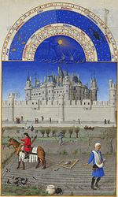
The English song "Green grow the Rushes"
The Breton "counting rhyme" 'Vespers of the Frogs' with its recapitulative question and answer structure is, evidently, more or less closely related to those French "perdrioles" or English rhymes whose "One" stanza features a "Partridge in a pear-tree", a sample of which will be found on the page dedicated to De Coussemaker's
"Douze Mois" (Twelve Months of the Year)
. In addition:
The presence of
motifs similar to those in the "Gousperoù ar Raned"
is very puzzling in the English songs
Green Grow the rushes O
, also known as "The twelve Apostles":
One of the tunes of "Twelve Apostles/ Green grow the rushes"
These motifs are: the "seven stars in the sky", the "three rivals", the "two lily-white boys clothed all in green".
As for the conclusion "One is one and all alone/ And evermore shall be so", it strangely reminds us of the
"Just one thing/ Death, the father of Mourning/ Before and after: nothing!"
in the 'Series', for which no counter-part was found, so far, in the collected versions of the Breton "Vespers".
This song does not include an explicit reference to a specific time of the year (except for the "eight rainmakers of April") or the evocation of a partridge.
Is it a Christmas carol? Curiously, the American folklorist
William Wells-Newell
(1839-1907) studied this song in an article published in July. 1891 in the Journal of American Folklore (vol. 4. N° 14, pp. 215-220) under the title "The Carol of the Twelve Numbers". He therefore likens it to a Christmas carol ("carol"). He compares it to 2 other English songs with "white-as-the-lily children dressed in green" in two, where a religious character is conferred on certain references. In a version sung in 1889 by Cornish miners south of Lake Superior.
- "
One
of them is God alone, and He ever shall remain so". A variant whose style betrays pre-Elizabethan antiquity seems to refer to Christ: "One they do call the righteous man / Save pour souls to rest, amen."
- the
Five
, "the symbol(s) at your door" justified, at the very least, the qualifier of "Christmas carol", if we assumed that we were referring to the inscription in chalk in 5 parts above the door made on the day of the Epiphany ("chalking the door") becomes "the ferryman in the boat". Variants in the English language cited by Wells-Newell further distance us from this interpretation: "flamboys=flambeaux on the bourn=coast/under the bough", "tumblers on a board";
- The
Six
, the "proud walkers" become "cheerful waiters". variant: "proud waters" (perhaps the six jars of water transformed into wine at Cana);
- the
Eight
, "Eight is the Great Archangel" (but in the Book of Tobit (12:15) we find "I am Raphael, one of the seven angels who stand or present themselves before the glory of the Lord").
The dial :
A song taken from an almanac of
1625
proclaims in its title its chronological character. Alongside religious stanzas (one God, two Testaments, three persons in Trinity, Four evangelists, ten Statutes given by God to Moses, eleven Disciples, twelve Apostles) and others that are less so (five senses, six days to labour, seven liberal arts, eight in Noah's ark alive, nine Muses), it insists on the passage of the hours in the final stanza:
"Count one, the first hour of thy birth
The hours that follow lead to Earth.
Count Twelve, thy doleful striking knell
And then thy Dial shall go well"
"The first hour saw you born
The others hasten your death
The twelfth tolls the death knell:
The turn of the dial of all being."
In a note, Welles Newell indicates that the poem in Barzhaz Breizh is the fruit of La Villemarqué's imagination and does not fall within the scope of this study. He seems to be unaware that this piece is elaborated on authentic oral tradition that is quite different from the songs of faith, Christmas carols in particular. Newell is aware of the difficulty of assigning a specific category to this song: despite the title of "Catholic Vespers" or "Pious Questions" that is given to it in the Germanic domain, it serves as a drinking song in the Rhineland and a boatman's song or at the merrymakings of peasants in England.
see: https:// www.jstor.org/stable/534006
Welsh and Cornish rhymes : Comparison with the "Vespers"
This kind of English rhymes also exists in
Welsh and Cornic
, very likely as translations from the English. Yet collating them, once translated into the related Breton language, makes the proximity to the Breton "Vespers" still more evident (in
bold
characters, main equivalent items in the "Vespers"):
Gallois:
Un o fy mrodyr a yrrodd i mi N° 1
Wel un o fy mrodyr i ...
Wel un o fy mrodyr i ...
Wel un o fy mrodyr a yrrodd i mi:
Un ych, un tarw, un blaidd, un ci;
Un carn, un troed, un blaidd, un ci,
Ych a tharw, blaidd a chi
A yrrodd fy mrawd hynaf i mi.
(In Breton: "Un oc'hen, un tarv, ur bleiz, ur c'hi").
One of my brothers sent unto me ...
One of my brothers sent unto me ...
One of my brothers sent unto me:
One ox, one bull, one wolf, one dog;
One hoof, one foot, one wolf, one dog,
An ox, a bull, a wolf and a dog
Did my eldest brother send unto me.
Recorded from the singing of Mrs. Gwyneddon Davies, Carnarvon, who learnt it, as a child in Liverpool from Mr. William Rowlands, a native of Gwalchmai. This is a cumulative song, with two bars being repeated as successive numbers are added, the singers trying to sing the lengtening passages "on one breath".
"Un o fy mrodyr N°1" sung by Meredydd Evans ("Merêd", 1919-2015)
"Un o fy mrodyr N°2"
"Un o fy mrodyr N°3"
Un o'm mrodyr a yrrodd i mi N° 2
Un o'm (r) mrodyr a yrrodd (haluyd) i mi
Un ych, un tarw, un blaidd (blith), un ci;
Un llo, un blaidd (blith), un ci, un ca (carn?),
Dau lo, dau flaidd (blith), dau gi (ci), dau ca
Ych (Erch) a (y) tharw, blaidd (blith) a (y) chi (ci)
Yrrodd (Halwch) fy mrawd hynaf i mi (y heni fy).
One of my brothers sent unto me:
One ox, one bull, one wolf, one dog;
One calf, one wolf, one dog, one cat,
Two calves, two wolves, two dogs, two cats
An ox and a bull, a wolf and a dog
Did my eldest brother send unto me...
Taken from the collection of Welsh folk songs sent to the Carmarthen Eisteddfod competition (1911) by "Alpha" ans sung by Miss Rachel Thomas, Carmarthen. In the original the words are very corrupt. they are quoted in parentheses, after the reconstructed words. The word "ca" is translated as "cat" in the French translation instead of "carn"= hoof.
Un o fy mrodyr &c. N° 3
Un troed ac un cam ac
un blaidd ac un ci
Dau droed, a dau gam a dau flaidd a dau gi
Tri throed a thri cam a thri blaidd a thri ci
Pedwar troed a phedwar cam a phedwar blaidd a phedwar ci
Ych a tharw
, blaidd a chi
A rôdd y mab hynaf i mi.
One foot and one step, one wolf and one dog
Two feet and two steps, two wolves and two dogs;
Three feet and three steps, three wolves and three dogs;
Four feet and four steps, four wolves and four dogs;
An ox, a bull, a wolf and a dog
Did the eldest son give me..
From the singing of Miss A. Jones, Cricieth, who was unable to remeber the first part of the tune.
Breton:
"Daouzek
lestr
o verdeiñ/ Unnek
tarv
o vlejal/ Dek itron o tañsal/ Nav aotroù o lammat/ Eizh karv o redek/ Seizh alarc'h o nijal/ C'hwec'h gwaz o tozviñ/ Pemp
bizoù aour
/ Pevar evn kerneveurat/ Teir
yar
c'hall/ Div durzhunell/ Hag ur glujar o tremen en ur wezenn-bér.
"
English:
"Twelve sailing
ships
/ Eleven mooing
bulls
/ Ten dancing ladies/ Nine leaping gentlemen/ Eight running stags/ Seven swimming swans/ Six geese laying eggs/ Five
gold rings
/ Four Cornwall birds/ Three
Hens
from France/ Two turtledoves/ and a Partridge in a pear-tree."
As stated by M. Boidron in his book (P.344) where the above samples where found:
"The almost systematic reference in the first phrase of the song ("the twelve days of Christmas") to
a crucial period in the Christianized heathen calendar
, namely that between Christmas and Twelfth Night, clearly hints at a relation of some kind between the structure and the motifs of the song and a
system of calendar symbols
..."
Old Celtic calendar and "gourdeizioù"
This remark is all the more to the point, as the opposite Breton text in M. Boidron's book translates "Twelve Days of the Year "Douze jours de l'an" as
"gourdeizioù"
.
This word is commented on page 632 of the French-Breton Dictionary of the
Rev Grégoire of Rostrenen
, item "mois" (month) as follows:
"The first 12 days in the month January are called "gourdeizioù" (from 'gour' meaning 'male' and 'deizioù', 'days': the "male days"; after the people's opinion that the quality of those first 12 days of the year is a harbinger of that of the individual 12 months."
M.
Fañch Postic
, (Member of CNRS, CRBC) completes this definition, in a downloadable article titled "The Calendar festivals" [in Brittany],(http://www.utl-landerneau.com/assets/fichiers-clients/pdf/2014-04-01-F%C3%AAtes-en-Bretagne.pdf), as follows:
"But one of the [farmer's] chief concerns was
about the weather
: it was important to guess what the weather would be like in the oncoming year, especially when the summer and autum harvest would be made. To that end they had a close look at the
gourdeizioù
(the «over-days») or at the "goursuhun" (the «over-week»): starting from Christmas, each day - or each forenoon and afternoon in the parishes of the former Vannes bishopric, known there as « the courtroom of the year » (barn er ble) -, was thought to hint at the weather of a month in the year to come. North of the Aulne river the first twelve months are taken into account, sometimes superseded by the first twelve "days of the moon" (gourdeizioù al loar).
It is generally taken for granted that these days which all everywhere in Europe used to be considered harbingers of good or bad omen for the weather in the next twelve months, were one of the last remnants of the Celtic calendar made up of lunar months..."
This latter point is addressed in a paper submitted to the Académie des Inscriptions et Belles Lettres, published in 1903, vol. 47/N° 4/pp. 315-318, titled "Gourdeizioù and their Babylonian origin", by
d'Arbois de Jubainville
:
"There is in Brittany an initial period of the year,
starting on either 25th December or 1st January
. It is a period of 12 days, known as "gourdeizioù", i.e. literally "the over-days", the "additional days". Once added to the 354 years of the lunar year make of it a solar year of 366 days. Those 12 days are vested with the same mystic meaning in Germany: in the "Zwölf Nächten" Wotan's hunting train was heard. They also are found in India where, as in Brittany, they portend the weather which will prevail throughout the oncoming year..."
<
In an article entitled "The time of the Indo-Europeans", the president of the French Mythology Society
Bernard Sergent
rejects the notion of filling the gap between a moon calendar of 354 days and a sun year of 365 days. The ancient Indo-Europeans preferred to this system the fitting-in of whole moon months, as featured in the below addressed five-year Coligny calendar. The 12 days were chosen from individual moon months, or pairs of moon months (for example, the last 6 days of one month and the first 6 days of the ensuing, or 12 days connected to the sun solstices without regard to any moon month...), at the crucial period of year end or half-year end, when beings from the Otherworld were believed to show up and men to be able to guess the future. There was no question of “catching up” from one year reckoning method to another.
A "manual" of interpretation of the "Twelve days"?
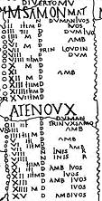
It doesn't seem easy to prove that the figures in the "series" have a direct descriptive link with
ancient month names
(cf.
Names of the months in vernacular calendars
). But they are perhaps signs to be interpreted.
We may assume that the
divinatory recipes
of those who gazed at the skies or looked around or scrutinized their dreams in search of harbingers were made to rhymes and sayings, like the "Partridge in a pear tree" and the "Vespers of the Frogs".
Accordingly, when referring to the above Luzel Version of the "Vespers"
English Translation of a Tregor version... (click on Union Jack!)
, the first month of the year, January, would be favourable, if, on the 1st of these "gourdeizioù", 26th December or 1st January depending on the local creed, the 1st sign, "one silver ring for Mary", was noticed; for February, it was the "two silver rings sign"... And so forth, down to the "12 swords" sign which would be a good omen for December, if sighted on the 12th fateful day.
These signs would be akin to the old saying portending that
"Ring around the moon means rain soon"
. In France, the creed that
"narrow ring around the sun keeps rain afar; wide ring causes rain to draw near"
is known in Lower Brittany as "
Kelc'hiet an heol a-dost, glav a-bell, kelc'hiet an heol a-bell, glav a-dost
". We may assume that the breadth of the halo (kelc'h) was, like whisky, measured in "fingers" (biz-ioù). But we still don't know why the sun ("an heol", feminine in Breton) is replaced with the Virgin Mary? ( see.
Annex
)
Atavistic memory, rather than reasoning consciousness of the
agro-economic importance
of what was at stake could account for the country bards' painstaking and careful learning by heart this hermetic piece which they made a point of reciting without fault or hesitation. We may wonder if they would have been so zealous, had they considered this piece a mere mnemonic training game.
This fact was noticed even by those who denied the"Vespers" the least meaning. On p. 383 of "Magies de la Bretagne" (collection "Bouquins"), where this song is classified as a "Nursery rhyme", Luzel records that his informant, Louis Olivier had learnt the "Brizeux-Scaër" version from his father who, reportedly,:
"Would sing it, far better than I do; at family meetings and wedding parties, they always would ask him for the "Gousperoù ar Raned" and went into raptures over how well he remembered every word and the volubility with which he delivered the whole piece. He made me learn it, when I was but a little child, maintaining that it would train my memory and make long my tongue."
The Coligny Calendar
On the other hand, in spite of the enigmatic hints it contains (months marked as "matu" or "anmatu", days tagged with "trigrams" and letters M, N or D or additional information such as "ivos", "inis r", "amb") there is no definite reason to suspect a divinatory device in the
Gaulish 5 year calendar found in 1897 in Coligny
(north of Bourg-en-Bresse), probably dating to the end of the 2nd century.
However, the "gourdeizioù" period, correlating each of its twelve days with a month in the ensuing year, could
reproduce the structure of the "intercalary months" in the Coligny calendar
: Each day in one of these two months, and possibly in both of them, is marked with the name of one of the regular months in the genitive form in chronological order (with repetition of the first three months) in the first fortnight, and in apparent disorder in the second fortnight.
Indo-European references
La Villemarqué is perhaps "off the mark" when ascribing to
Gallic druids
the authorship of this dialogue by cumulative enumeration. We are admittedly poorly informed about this mysterious caste. All the writers mentioning them, Diodorus of Sicily, Strabo, Pomponius Mela, Lucan, Pliny the Elder tell more or less the same story, borrowed from the same missing text by
Poseidonius of Apamea
in Syria who had travelled through Gaul and possibly (Great) Britain in 100 BC and of which only quotes are known. Caesar's longest text is no exception to the rule. Apart from the fact that his description of the fauna of the Germanic forest is akin to a fairy tale, the account of his campaigns features only one druid, Diviciacus, who is never depicted discharging his druid's duties.
But the Celtic philologists
Françoise Le Roux and Christian Guyonvarc'h
, emphasize the fact that
"The Celtic Druids inherited the same tradition as the Brahmans"
and that
"The priestly class of the Celts can be compared elsewhere only with the Brahmans"
. The historian of religions
Mircéa Eliade
also wrote that
"We find in Ireland certain ideas and customs attested in ancient India"
We are therefore incited to turn to
Irish Druidism as well as Indian Vedism and Hinduism
that share the oldest common heritage of Indo-Europeans.
Concerning the "gourdeizioù",
Philippe Jouët
in "Celtes et Celtisme" (p. 137) points out
-that
an ancient text from India
the "Kathaka Samhita" (7.15) describes a rite which makes of the "Twelve days", the
"dvadasaha"
, the image of the twelve months of the year.
- That the historian
Albrecht Weber
(1825-1901) saw in another episode of the Indian tradition, the sleep of the
spirits called “Rbhu”
in the god Savitar Agoya's lair the counterpart of these same Twelve days.
- That
Homer
evokes the Twelve days of absence of Zeus and the gods.
- That in the old Irish story of
"Eachtra Airt"
, a one-footed bird wins the victory over a "twelve-legged" bird, an image of triumph over the perils of the Twelve days...
That is to say: this notion is well attested in the ancient Indo-European world: India, Anatolia, Greece, Germanic world.
La Villemarqué's intuition therefore seems largely justified.
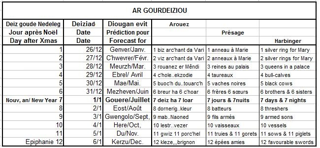
Correspondance entre "gourdeizioù" et mois de l'année
"Relation between "gourdeizioù" and months of the year
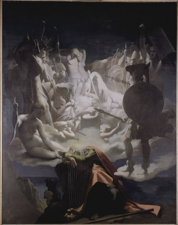
Un pur produit de l'"awen celtique": Le "Songe d'Ossian" (1813) par Dominique Ingres (1780-1867)
A bit of 19th century "Celtic awen": "Ossian's Dream" (1813) by Dominique Ingres (1780-1867)
III Almanach ou livre d'heures? - An almanack or a Book of hours?
Traits communs aux versions de Trégor et Haute -Cornouaille: des 3 anneaux aux 12 épées
Si on laisse de côté les versions Brizeux, Scaër et Saint-Thurien, on constate que la plupart d'entre elles présentent des traits caractéristiques qui reviennent avec une surprenante régularité:
L'
APPEL
de chaque série de longueur croissante sous forme de dialogue entre un maître
KilhORE
et son disciple Jolig, Jobig, parfois Chourig. M. Boiron (p. 400) rapproche Kilhoré du conte de la chasse infernale dite "chasse Galerie" (ou mesnie Hennequin) ou encore du chasseur "compère Guillery" de la chanson populaire bien connue.
Les première, deuxième
et parfois troisième séries semblent se rapporter au domaine de la
religion: MARIE
à qui il revient une puis deux pièces
(PEZH)
d'argent, qui deviennent le plus souvent
UN puis DEUX ANNEAUX (Ur BIZ[où]/ daou VIZ
) d'argent ou la moitié d'un soleil (écu?), quand elle n'est pas dotée d'un doigt (biz) d'argent.
Mais ne serait-ce pas plutôt celui du
jeu
? "C'hoari" (jouer), "soliter" (solitaire), "tri maen" (trois pierres), "pari", "trois reines dans un palais qui jouent et fredonnent" (teir rouanez er Maen-di o c'hoari o fredoni). Leur jeu fait appel à des "anneaux d'argent" (bizou arc'hant) ou à un "petit cheval boiteux" (ur marc'hig kamm). Il s'agit de jeux d'enfant et de jeux de défis ("pari", "argent").
Les
"TROIS FILS HENRI (Tri MAB HERRI)
" peuvent être, on l'a vu une référence historique. Marie ou les trois reines sont "perc'henn" (propriétaire) de ces personnages. Une variante de Basse-Cornouaille "Tri ha tri a gemer dri" (trois et trois qui en prennent trois) les lie plus ou moins clairement au jeu de cartes.
Les
QUATRE "CHORISTES" (Pevar "kolist", 4 enfants de chœur)
qui chantent l'
EXAUDI
sont souvent quatre taurillons ("kole"). Ils deviennent dans d'autres versions des "houidi" (canards), le seul oiseau qui figure dans les "Gousperoù". Plusieurs psaumes comportent la phrase "Exaudi orationem meam!" (exauce ma prière!)
Les "
CINQ VACHES très NOIRES" ( Pemp BUOC'H du awalc'h
) se profilent dans pratiquement toutes les versions, soit qu'elles sortent d'un "bois sombre" (ur c'hoad teñval),
soit qu'elles traversent une "tourbière" (douar toualc'h) ou une "terre de Dieu" (douar Doue= cimetière?)
On les retrouve dans la "Chanson du Mendiant" de Max Jacob (1903):
La pie en habit sur les pommes,
Cinq vaches noires sur la tourbière,
Arrêtez-vous, beau gentilhomme,
Quand vous verrez passer la bière.
Les
"SIX FRERES et SIX SOEURS" (C'hwec'h BREUR ha c'hwec'h C'HOAR)
sont également présents dans presque toutes les versions.
Ce vers rime avec le suivant dont il est peut-être une image:
"SEIZH DEIZ ha SEIZH LOAR" (SEPT JOURS et sept LUNES
). On est passé dans le domaine de la mesure du temps.
Ce motif se trouve systématiquement au CENTRE du chant dont il constitue le pivot.
Un aimable correspondant,
M. Jérémy Loysance
à qui cette page doit des éléments essentiels de sa documentation et de sa conception, remarque à propos de cette double strophe qu'elle oppose les genres: ("loar", la lune est masculin en breton; "heol", le soleil qui n'a pas été remplacé par "deiz", "le jour" dans toutes les versions, est féminin). Ce faisant elle évoque peut-être l'alternance "mat/anmat" (faste/néfaste) de l'antique calendrier de Coligny.
La
scène de battage
avec ses
HUIT BATTEURS sur un aire (Eizh DORNERig war al LEUR)
se trouve elle aussi dans presque toutes les versions.
Les "
NEUF FILS en armes revenant de NANTES" (Nav MAB armet o tistreiñ deus an NAONED)
est un des motifs les plus stables, même si "Naoned" devient parfois "Nanvet" (neuvaine) et si les fils deviennent des "prêtres" (beleg).
A chaque fois on parle d'"épées brisées" (o c'hlezeier torret), de "chemises ensanglantées" (o rochedoù gwadet) et de "spectacle d'épouvante ou d'affliction" (spont/ truez oa o gwelet). Il pourrait s'agir d'une
réminiscence historique
.
Le fait qu'en Trégor ce thème apparaît dans la 9ème série, conduit M. André-Yves Bourgès du CIRDMC, dans un article intitulé "A propos de Gousperoù ar Raned" à suggérer, sur la base d'un témoignage écrit datant de 1498 et conservé aux archives départementales de Côtes d'Armor, que ces neuf frères combattant ensemble pourraient appartenir à la maison noble de
Keruhel de Plourivo
en Goëllo. Leurs exploits, anciens à la date du témoignage, remonteraient à la guerre des Blois et Montfort entre 1341 et 1364.
Outre l'interprétation de La Villemarqué (leçon druidique dans les domaines de la philosophie, de la mythologie, de l'astronomie, de la médecine, de la géographie et de l'histoire), il existe une interprétation historique de
l'ensemble de la comptine
par le collecteur
J-M. de Penguern
qui voit dans ce chant une description de la migration bretonne de 513 sous la conduite de
Riwal
.
Les "fils" sont parfois des "prêtres" ou des "moines", de même qu'il est parfois question dans d'autres strophes de "vieilles femmes". De la traduction des mots bretons correspondants (au singulier:
"beleg", "manac'h", "gwrac'h"
) rendus par "druide" (correspondant chez La Villemarqué au néologisme "Drouiz") et "druidesse" (traduction de Penguern et du Cleuziou) a pris naissance, en dernière analyse, toute la fameuse querelle du Barzhaz. M. Boidron note (p. 406):
"Seul le contesxte d'un conflit de l'époque gauloise...pourrait effectivement justifier une acception des prêtres présidant à la menée des combats, voire y participant directement."
Les "
DIX BATEAUX chargés de VIN ou les charrettes neuves" (listri karget/ kirri nevez)
sont également un thème récurrent. Il semble que ce motif soit lié au précédent. Les bateaux vont sur le "littoral" (litter) ou sur la Loire (al Lijer). ils sont chargés de "vin" (a win), ou de "pierres" ( a vein) ou de "lettres" ( a lizher).
La "
TRUIE avec ses ONZE POURCEAUX" (ar WIZ gant he unnek FORC'HELL)
est présente dans toutes les versions. Elle revient toujours de l'accouplement (an "tourc'hall"). Il est parfois question de "pommier" (gwezenn aval). C'est peut-être le seul cas où un renvoi aux traditions celtiques" semble aller de soi.
Les "
DOUZE EPEES amies" (Daouzek KLEZE MIGNON)
qui riment avec "pignon" sont propres aux traditions du Trégor. En Cornouaille, il est ici question de "
chien de chasse
" (ki chase) et de
lièvre
.
Certaines versions ont treize séries et ajoutent un motif "trizek penn-dañvad" ou "daouzek penn-deñv": douze ou
TREIZE MOUTONS
qu'un
LOUP
attaque dont on suggère ci-après la signification.
Le loup du calendrier
Donatien Laurent ("La Nuit celtique", p.80) voit dans cette variation entre versions à 12 ou à 13 séries
"une allégorie de l'année avec son alternance de 12 et 13 lunaisons...
"
Dans les versions en 13 séries, un loup intervient en général en 13ème. Or les mythes calendaires des pays celtiques et d'Europe du nord attribuait la disparition du 13ème mois tous les 30 ans au fait qu'un loup mythologique avait dévoré la lune."
Y. Guéhennec
dans
"La tradition celtique"
, pp.163-167, indique que pour le Indo-Européens, issus selon certains d'une région pré-arctique aux nuits d'hiver interminables, l'année était synonyme de "belle saison". Chez les Grecs le couple Zeus-Héra reflète cette conception: Ciel diurne (*dyew) uni à la Belle saison (Yera, mot parent de Jahr/year). Les mots celtes pour "année" sont tous voisins du breton "bloaz" (vannetais "blé") et l'on peut supposer, avec Goulven Pennaod, qu'une déesse celtique portait un nom apparenté (*Blédani?) dont la disparition présenterait un lien avec le nom du loup (bleiz en breton moderne, bleid en vieux breton et formes analogues dans les autres langues celtes).
La dimension mythologique de cet animal ressort peut-être du dicton, cité par La Villemarqué (dans
Tour an Arvor
, strophe 12) "Diwall al loar diouzh ar bleiz". Il donne le sens de "bayer aux corneilles" à cette tournure qui signifie "protéger la lune du loup". Donatien Laurent ("La Nuit celtique", p.123 y voit une allusion à la conjecture selon laquelle, dans le calendrier celtique on ôtait un mois intercalaire tous les trente ans. Ce pourrait être aussi une allusion aux éclipses périodiques.
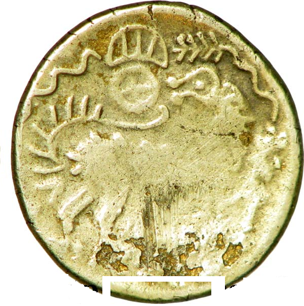
Une pièce de monnaie (1/4
statère) des Celtes Unelles
du Cotentin porte un loup dont la tête, stylisée en une énorme gueule avec un oeil en son centre, se tourne pour dévorer une roue à 4 rayons, peut-être le 13ème mois de l'année. Sa queue est une volute portant neuf traits, trois autres traits étant inclus dans un croissant de lune horizontal surmontant la roue. L'artiste a-t-il voulu représenter une queue hérissée de poils ou faire, avec cette queue et cette lune, allusion aux 12 mois de l'année "normale"? En effet, le reste du corps de l'animal dont on distingue nettement les pattes arrière n'est pas stylisé, hormis la tête et des sortes d'épines courant le long du dos et du cou.
Autre motif calendaire: de part et d'autre de la lune, deux lignes composées chacune de six ondulations qui pourraient représenter les phases de la lune réparties en deux semestres. La ligne de droite se prolonge en un motif végétal qui pourrait désigner ce semestre comme la moitié claire de l'année, celle où la végétation reprend ses droits. Selon le sens dans lequel on lit ce motif, la scène représenterait le solstice d'été ou le solstice d'hiver (ou encore Belteine ou Samain, 1er mai ou 1er novembre). Peut-être l'artiste a-t-il à dessein représenté le croissant de lune dans cette position inhabituelle, pour qu'il puisse être compris comme un premier quartier réalisé, début d'une lunaison dans la conception celtique, quel que soit le sens de lecture.
Une symbolique similaire est présentée sur l'antique
Calendrier de Knowth
qui date au plus tôt de l'âge du bronze (-2200 à -800).
Cette interprétation suppose que la figure principale est bien un loup, plutôt qu'un cheval. Le quart de statère est une pièce très répandue chez les divers peuples gaulois. Il présente ordinairement une tête bouclée, plus ou moins stylisée côté face et, le plus souvent, un cheval à l'avers, souvent accompagné d'un soleil.
De même que chez les Slaves le nom primitif de l'ours a été remplacé par la périphrase "med-ved" (qui s'y connaît en miel), l'invocation de la déesse de l'année dont le nom ressemblait à celui d'un animal redouté a pu faire l'objet d'un interdit. Y. Guéhennec affirme qu'à *Samonion (dernier jour de l'année) les Celtibères honoraient une divinité dont ils n'osaient pas prononcer le nom. La légendaire Keben de Locronan (dont la Troménie est une image topographique du calendrier) accuse Ronan de se transformer en loup et d'avoir dévoré sa fille - de cinq ans, précise D. Laurent!
Dans la mythologie chritianisée, la "Vita" du barde aveugle saint Hervé, représenté accompagné d'un loup, parle d'une roue qui, elle, n'apparaît pas dans l'iconographie du saint. On peut penser à son propos aux statues du dieu gaulois du tonnerre, Taranis, que l'on nous montre le plus souvent appuyé sur une roue. Beaucoup y voient une représentation du cosmos tournant autour de l'axe polaire, donc de l'année.
Ce faisceau d'éléments convergents corrobore une possible interprétation calendaire de l'ensemble. Y. Guéhennec souligne en outre que les pays celtes catholiques (Bretagne, Irlande) ont une hagiographie qui a conservé plus fidèlement que les pays protestants la mémoire de l'ancienne tradition celtique.
La proximité phonétique, dans les langues celtiques , des mots désignant l'année et le loup, n'est cependant pas un élément explicatif de portée générale du symbolisme calendaire indo-européen:
- La mythologie scandinave, telle qu'on l'appréhende par l'Edda poétique, met en scêne le loup, en l'absence de toute homonymie, dans un un autre symbolisme calendaire. Il s'agit de deux loups, Sköll et Hati, qui poursuivent respectivement le soleil et la lune, l'un dans le ciel diurne, l'autre dans le ciel nocturne. Ils assurent donc le cycle régulier des jours et des nuits. La capture de ces astres, plongeant le monde dans l'obscurité marquera le Ragnarök, la fin du monde.
- Dans l'hindouisme, le démon Rahu poursuit le soleil et la lune pour les avaler. Il les attrape parfois mais, ayant été décapité par Vishnu, il ne peut causer que de brèves éclipses.
A propos du titre "Vêpres des grenouilles"
M.Jérémy Loysance suggère de conclure que le titre "Vêpres des grenouilles" -que La Villemarqué qualifie de "grotesque"- dévoile en réalité une partie du caractère calendaire de cette pièce. Le mot "vêpres" n'évoque pas seulement la récitation de mots incompréhensibles (latin, coassement de grenouilles), mais aussi un moment de la journée: le soir (en latin: "vesper", en grec: "hesperos", Ἓσπερος). Associé à ce dernier mot qui donne "gosperoù" en breton, nous trouvons chez Homère (Iliade, XXIII, 226-227), le mot Éosphoros, Ἑωσφόρος (eos=aube). Il forme avec Hesperos un couple désignant l'étoile du matin et l'étoile du soir, qui sont en fait la même planète: Vénus. Ce couple est représenté dans la mythologie classique par deux frères dont l'un tient un flammbeau levé, l'autre un flambeau tourné vers le sol. Cette opposition, étendue à l'année, assigne aux solstices d'hiver et d'été un importance symbolique dont ont hérité les fêtes de la Saint-Jean-d"été et de Noël.
Un chant de la Saint-Jean?
L'
abbé Loeiz ar Floc'h (Maodez Glandour
, 1909-1986) qui range dans son recueil "Le Brasier des Ancêtres", les "Vêpres des Grenouilles" dans la section "Enfantines", n'en remarque pas moins, dans un article destiné à la revue "Barr Heol" (N°28, Sept.1961, p.37) que son informatrice, soaz Le Digerher, les avait apprises de sa mère qui les chantait en public, "une fois l'an devant le feu de la Saint-Jean. Mais maintenant cela n'est plus chanté, parce que les gens ne sont plus dévots". Il ajoute "J'ai vu qu'elle croyait que c'était du latin, parce que c'était incompréhensible comme les prières des prêtres."
"M. Dubourg ... se souvient avoir entendu à Rospez quand il était enfant des gens qui [les] chantaient devant le feu de la Saint-Jean." Par ailleurs il cite Gabriel Milin (1822-1895) qui parle de ce chant come d'"une prière" (cité par J-J. Boidron, p. 67).
M. Boidron ajoute: "La Saint-Jean est l"une des dates-clés du cycle solaire autour duquel s'est élaboré tout un ensemble de rituels dont on constate la permanence dans les sociétés paysannes traditionnelles".
Ancienneté de la notion de séries
"Rannoù" n'est pas pour autant un intrus imposé par l'imagination de La Villemarqué en remplacement de "raned", les "grenouilles". On rencontre ce mot dans certaines versions des "Vêpres". Seule la traduction "Séries" est contestable. Le vrai sens du mot est "parties", "sections", "tranches". "Kan din eus-a zaou rann" ne signifie pas "Chante-moi la série du nombre deux", comme indiqué dans le Barzhaz, mais plutôt: "Chante-moi [la teneur de] deux parties". C'est ce que fait le maître en remontant à chaque fois à la première partie. Le "tout" sous-entendu ici est une somme de connaissances essentielles. Il n'en est pas moins vrai que chaque nouvelle strophe de rang n a trait à un ensemble de n éléments identiques.
Evolution du chant (importance des rimes)
Il n'y a finalement que peu de différences entre les versions et l'on a bien affaire à un chant unique. Le passage de l'une à l'autre se fait - par déplacement des motifs dans la liste;
- par remplacement de mots avec conservation du sens: "pezh arc'hant" - pièce d'argent devient "tribut arc'hant", "pevar c'hole" - 4 taurillons devient "pevar a houidi - 4 canards, autre motif animal, "seiz deiz"- sept jours devient "seiz heol" -sept soleil;
- par remplacement des mots avec conservation des sonorités: "
"pezh arc'hant" - pièce d'argent devient "biz arc'hant" - anneau, "tri mab Herri" - trois fils Henri devient "ti a zespari" - maison à Despari (?), "seiz heol seiz loar" - sept soleil sept lune devient "seiz li seiz la" - sept ceci(?) sept cela(?);
- par remplacement des mots avec conservation du rythme: "Pelec'h ma tri mab an ti? - Où sont les 3 fils de la maison? devient "Perc'henn an tri mab Herri" - maître des 3 fils Henri , rythme 3+4 syllabes;
- par combinaison des procédés ci-dessus: "dek lestr tud gin a weler" - on voit des bateaux pleins de gens hostiles devient "dek lestr war al litter / karget a win, a vezer" - dix bateaux sur le littoral / chargés de vin, de drap, où "gin"=hostile devient "gwin"=vin, et "weler"=on voit devient "a vezer"=de drap ou, parfois, "avelet"=éventé;
Le degré avancé d'évolution des formules laisse supposer une relative ancienneté de ce chant.
Un calendrier astronomique préchrétien?
M. Boidron
qui n'ignore pas les traditions apparentées à celle des "Vêpres" (juives, latines, allemandes, bretonnes et françaises) dont il a été question plus haut, propose une nouvelle piste d'interprétation, déjà évoquée à propos des "gourdeizioù": ce chant serait le reste d'un
calendrier préchrétien
. Il se fonde essentiellement:
sur la numération en douze séries, et parfois treize ce qui évoque la conjugaison d'un calendrier solaire (12 mois) et d'un calendrier lunaire (13 mois);
sur la mention plus ou moins claire dans certaines versions de noms d'étoiles et de constellations;
sur la mention régulière "sept lunes - sept soleils" au beau milieu du chant,
sur la référence à certains travaux agricoles, comme dans certains "livres d'heures"
et sur
"la mise en œuvre d'un bestiaire à probable valeur calendaire"
.
A l'appui de cette théorie il cite les noms bretons de diverses
constellations
qui apparaissent dans les "Vêpres": ar Wiz (la Truie)= le Cancer; ar Yar (la Poussinière)= les Pléiades; ar Ki chase (les "Chiens de chasse"); ar Werc'hez (La Vierge, Marie); ar Ri (le Roi?) =Orion qui aurait donné "map Herri"... Tout compte fait, cette interprétation rejoint celle de La Villemarqué qui assigne un rôle essentiel à la Vache frappée par la flèche du Sagittaire et aux "douze Signes en guerre".
Elle ne remet pas en question l'essentiel de nos précédents commentaires (en particulier à propos des "gourdeizioù").
Cependant on est frappé par la
pauvreté du vocabulaire breton en la matière
. Le Dictionnaire du Père Grégoire ne donne que quelques mots: "stered parfed, stered red, sterenn an nord, gwerelaouen ou sterenn tarzh-an-deiz ou sterenn an heol", pour "étoiles fixes ou errantes, étoile du nord et étoile du matin". Il est vrai que l'auteur n'accorde aucun crédit à l'astrologie qu'il décrit ainsi :
"Skiant ar stered. Skiant a ro da aznavout ar vertuz hag an nerzh eus ar stered hag ar vad pe an drouk a hallont da ober d’an traoù terien."
Il traduit brièvement
"Science qui considère la qualité, la vertu et les effets des astres"
, alors qu'il écrit précisément:
"Astrologie: science qui prétend connaître la vertu et les effets en bien ou en mal que les astres peuvent avoir sur les choses de la terre".
La pauvreté de la tradition populaire en matière d'astronomie avait frappé le folkloriste Paul Sébillot (1843-1918) qui la signale dans son ouvrage "Le folklore de France" (1904-1906):
"La nature du ciel considéré dans son ensemble, c'est à dire comme l'enveloppe du monde et de l'espace où brillent les astres, tient une petite place dans les préoccupations actuelles des paysans, et même des marins. S'ils remarquent ses aspects pour en tirer des observations météorologiques leur curiosité va rarement plus loin."
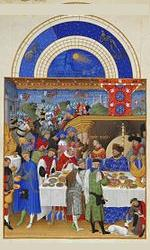
Une sorte de "livre d'heures" chanté?
C'est pourquoi, les enluminures de la présente page, tirées du calendrier des
"Très riches heures du Duc de Berry"
(commencées vers 1410), si elles illustrent plus ou moins bien le bestiaire et les travaux agraires présents dans les "Vêpres", semblent s'éloigner du propos de la comptine par les notations astrologiques qui surmontent les tableaux des frères de Limbourg.
Les "Livres d'heures" imprimés au XVème et au XVIème siècle, dont le catalogue établi par
Paul Lacombe
en 1907 porte sur pas moins de 595 ouvrages dont un seul en breton - datant de 1576, traduit par Gilles de Kerampuil, recteur de Cléden-Poher et destiné au diocèse de Léon-, étaient des sortes de bréviaires à l'usage des laïques lettrés. Parmi les sujets d'études que le savant bibliothécaire soumet à la sagacité des chercheurs, on trouve
"Le sujet des vers, souvent très bizarres qui accompagnent la nomenclature des saints de chaque mois..."
(p. XLVII).
Il précise que l'on trouve parfois, en tête de chaque mois
"un vers ... renfermant des mentions astrologiques, astronomiques ou relatives au
comput
."
-Jours néfastes:
"Un est mauvais et 24/ En janvier. Le 4 février/ Et 25, sans plus rabattre:/ Ces 4 jours portent danger".
- calculs d'astronomie (fêtes mobiles etc.):
"En janvier que les Rois venus sont
Giaume dort, Fremin morfond.
Antoin boit le jour Vin, cent fois,
Pollu(é)s en sont tous ses doigts."
Les "Rois" forment la 6ème syllabe du 1er vers (6 janvier: Epiphanie).
"Mor" est 15ème syllabe du quatrain (15 janvier: saint Maur).
"An" (toin), 17ème syllabe se rapporte à la saint Antoine, le 17 janvier, puis l'on trouve la saint Vincent (22 janvier) et la conversion de saint Paul (25 janvier).
D'autres vers dits "cisioniens" sont des calendriers qui rappellent des fêtes dont la première est toujours la Circoncision ("cisio"):
"Cisio janus Epi venerabitur Hyl. quoque Marc. Ant..."
D'autre part, certains de ces vers contiennent des
conseils médicaux
, combinés avec des préceptes relatifs aux
travaux agricoles
de chaque mois. Voici ce que l'on trouve dans les Heures de Claude Gouffier, imprimées en 1558 pour le mois de janvier:
"ungere crura cave, cum Luna videbit Aquosum.
Insere tunc plantas, excelsas errige turres.
Et si carpis iter tunc tardius ad loca transi.
Ne pas mettre d’onguent sur les jambes, quand la Lune sera au Verseau.
C’est le moment de greffer des plantes et d’ériger de hautes tours.
Et si tu dois prendre la route, remets le voyage à plus tard."
Même si l'on en est sans doute assez éloigné, comme dans les "Vêpres", on fait ici référence aux astres et aux travaux agricoles...
On rencontre souvent une pièce résumant
"La vie de l'homme"
en 12 quatrains correspondant à des tranches de 6 ans de ladite vie comparées à un mois de l'année:
"Les six premiers ans que vit l'homme au monde
Nous comparons à Janvier droitement.
Car entre ce mois, vertu ni force abonde.
Non plus que quand six ans a un enfant."
Enfin, on trouve, très rarement il est vrai des
éphémérides historiques
, comme dans certaines Heures normandes qui rappellent l'évacuation de Cherbourg par les Anglais le 12 août 1450, événement dont on fêtait l'anniversaire dans les églises normandes. Les calendriers portaient cette mention:
"La redu. de nor." ou "La réduction de Norman."
Ce dernier point rappelle la présence des mystérieux personnages vaincus revenant de Nantes, qui semblent évoquer un fait historique dans les Vêpres et les Séries.
La multiplicité des domaines abordés semble être un autre aspect de la justesse d'intuition qui a guidé La Villemarqué dans la composition de son poème "Les Séries".
Un calendrier inscrit dans un paysage
M. Jérémy Loysance, suggère un rapprochement avec un autre système de symbolique calendaire. Dans le chapitre de la "Nuit celtique" qu'il consacre à la
"Troménie de Locronan"
(pp. 87-110), Donatien Laurent, propose de voir dans la géographie physique et sacrée des lieux où se déroule le rituel des troménies de Locronan, au pied d'une coline de 285m, à l'entrée de la plaine de Porzay, au croisement de voies romaines et pré-romaines, l'inscription dans le paysage d'un calendrier celtique tel que celui de Coligny. La démonstration est trop élaborée pour être reprise ici. Elle insiste sur le fait que:
"C'est pour assurer [certaines] coincidences [chronologiques] qu'il est nécessaire de comprimer les stations hivernales au début du parcours,et de dilater les estivales dans la suite".
C'est ainsi qu'on peut penser à rapprocher les 3 premières stations peu éloignées les unes des autres (Saint-Eutrope, Père éternel et Saint-Germain) de la
"série transversale"
(un anneau, deux anneaux, trois anneaux à Marie) par laquelle débutent plusieurs versions des "Vêpres".
Donatien Laurent lui-même évoque les "gourdeizioù" (p. 109):
"Risquons une hypothèse: de même qu'il était possible de 'lire' dans les douze derniers jours de l'année l'image des douze mois à venir, de même pouvait-on espérer, en contrôlant les douze jours du dernier 'déclin de lune' avant le grand 'déclin de l'été', agir sur les 12 séquences lunaires de ce trimestre d'automne instable et dangereux commençant le 1er août (2 par quinzaine encadrant successivement pleine lune et nouvelle lune) et s'assurer une récolte abondante à ce moment propice - la pleine lune de juillet - où selon le dicton...il était temps de mettre "la faucille dans le sillon" et de commencer la moisson: "Da gann Gouero, eost e peb bro, hanter Gouero falz en ero" (à la pleine lune de juillet, moisson en chaque région; à la mi-juillet, la faucille dans le sillon)."
A l'évidence, Donatien Laurent donne au mot "contrôler" le sens qu'il a en anglais: "diriger, maîtriser". Transposée aux "Vêpres", cette interprétation ferait de cette comptine, non plus un système d'interprétation de signes, mais un charme magique susceptible d'influer sur les événements. Cela justifierait le respect quasi-religieux qui l'entoure.
Features common to all other versions
If we put aside Briseux' version and those collected at Scaër and Saint-Thurien, most of the rest have characteristic features which are found to be surprisingly recurrent:
The
CALL
ushering in each individual increasingly developing series is a dialogue between a teacher,
KilhORE
and his pupil, Jolig, Jobig, sometimes Chourig.
The
first, second
and sometimes third
series
possibly apply to
faith: MARY
is due to receive one then two silver coins
(PEZH) or RINGS (Ur BIZ[où]/ daou VIZ)
or else half of a "sun" ( also a coin?), or is endowed with a silver finger (biz).
But maybe, what is meant is a
game
!
"C'hoari" (to play), "soliter" (solitaire), "tri maen" (three counters), "pari" (a bet), "three queens in a palace playing games and crooning" (teir rouanez er Maen-di o c'hoari o fredoni). In their game they use "silver rings" (bizou arc'hant) or a lame "hobby horse" (ur marc'hig kamm).
All these are children's or adults' games (bets, money).
The
"THREE SONS of HENRY (TRI MAB HERRI)"
may refer, as already stated, to historical facts. Mary or the three queens are "perc'henn" (the "owners") of these characters. A Lower-Cornouaille variant "Tri ha tri a gemer dri" (three and three will take all three) points rather clearly to a game of cards.
The
"FOUR CHORISTERS" (Pevar KOLIST, mass servers)
singing the
"EXAUDI"
may become four "bull-calves", ("KOLE"). They possibly appear in other versions as "houidi" (ducks), the only bird mentioned in the "Gousperoù". Several psalms has the phrase "Exaudi orationem meam!" (fulfil my prayer!)
Nearly all versions feature
"FIVE DARK BLACK COWS" (pemp BUOC'H du awalc'h)
that are, either strutting out of a "dark grove" (ur c'hoad teñval), or wading through a "peat bog" (douar toualc'h), or, sometimes, across a "field of God" (douar Doue= a churchyard?)
They appear in the poem "The beggar's song" by Max Jacob (1903):
Magpie in formal dress upon the apple tree,
Ye, the five black cows on the peat bog,
Ladies and gentlemen, you'll stop
When you see the coffin pass by.
The
"SIX BROTHERS and SISTERS" (c'hwec'h BREUR ha c'hwec'h C'HOAR)
also exist in nearly all versions. This line rhymes with, and possibly is an image of the following:
"SEIZH DEIZ ha SEIZH LOAR (seven days and seven moons
). We have apparently entered the domain of time measurement. This motif is
systematically found in the middle of the song around which the whole of it revolves.
A friendly contributor,
M. Jérémy Loysance
, to whom this page owes essential elements of its documentation and its design, notes concerning this double stanza that it opposes genders: ("loar", the moon is masculine in Breton; "heol", the sun, as far as it was not replaced by "deiz", "the day" in many versions, is feminine). In doing so, it may evoke the alternation "mat/anmat" (propitious/unpropitious) found in the ancient Coligny calendar.
The
threshing scene with the EIGHT THRESHERS on a floor (Eizh DORNERig war al LEUR)
is showed in nearly all versions, too.
The
"NINE armed SONS returning from NANTES" (Nav MAB armet o tistreiñ deus an NAONED)
is one of the most permanent motifs, albeit with "Naoned" turned into "Nanvet" (novena), or the "sons" into "priests" (beleg) in some versions. Their "swords" always are "broken" (o c'hlezeier torret), their "shirts blood-stained" (o rochedoù gwadet), looking at them is a "scaring or dismal experience" (spont/ truez oa o gwelet). This could be a
historical reminiscenc
of some kind, but which?
Since in Trégor this theme always belongs to the 9th series, M. André-Yves Bourgès, a member of CIRDMC, suggests in an article titled "Concerning Gousperoù ar Raned", on the authority of a written account dating to 1498 and kept at the Department Archives of Côtes d'Armor, that these nine brothers who fought together could belong to the noble House of
Keruhel near Plourivo
in Goëllo. Their - then ancient- feats of arms would date to the time of the Blois vs Montfort strife, between 1341 and 1364.
In addition to the interpretation of La Villemarqué (druidic lessons in the fields of philosophy, mythology, astronomy, medicine, geography and history), there is a
historical interpretation of the whole rhyme
by collector
JM. de Penguern
who sees in this song a description of the Breton migration of 513 under the leadership of
Riwal
.
The "sons" appear sometimes as "priests" or "monks", just as other stanzas sometimes mention "old women". It was, all well considered, the translation of the corresponding Breton words (in the singular:
"beleg", "manac'h", "gwrac'h"
) as "Druid" (corresponding in La Villemarqué's work to the neologisms "Drouiz") and "Druidess" (translation of Penguern and du Cleuziou) thet triggered off the whole famous "quarrel of the Barzhaz". M. Boidron notes (p. 406):
"Only a conflict in Gallic times...could really provide an acceptable background for these priests ruling over warfare or even participating in it."
The
"TEN loaded SHIPS or new wagons" (listri karget/ kirri nevez)
motif is, apparently linked to the foregoing. The ships are on their way to the littoral" (litter) or to the Loire river (al Lijer). They are full of "wine" (a win), or of "stones" (a vein) or of "letters" (a lizher).
The
"SOW with her ELEVEN PIGLETS"
(ar WIZ gant he unnek FORC'HELL)
also is present in all versions. She always comes back from the mating (an "tourc'hall"). Sometimes she is mentioned in connection with an "apple tree" (gwezenn aval). This is, possibly, the only occurrence of a genuine Celtic pattern.
The
"TWELVE friendly SWORDS" (Daouzek KLEZE MIGNON)
rhyming with "pignon" (gable) is peculiar to the Trégor tradition. In Cornouaille, the same stanza is dedicated to a
"hunting dog"
(ki chase) and a
hare
.
Some versions have thirteen series and add a "trizek penn-dañvad" or "daouzek penn-deñv" motif: twelve or
THIRTEEN SHEEP
that a
WOLF
attacks, whose meaning is as opaque as the rest.
The wolf in the calendar
Donatien Laurent (in "La Nuit celtique", p.80) sees in this variation between variants with 12 or 13 series
"an allegory of the year with its alternation of 12 and 13 lunations...
In the 13 series versions, a wolf generally appears in the 13th. However, the calendar myths of Celtic countries and northern Europe attributed the disappearance of the 13th month every 30 years to the fact that a mythological wolf had devoured the moon."
Y. Guéhennec
in
"La tradition celtique"
, pp.163-167, mentions that for the Indo-Europeans, allegedly coming from a pre-arctic area afflicted with endless winter nights, the year was synonymous with "fair season". Among the Greeks of old, the Zeus-Hera couple reflected this conception: Diurnal-sky (*dyew) united the Fair-season (Yera, a word related to Jahr/year). The Celtic words for "year" are all close to the Breton "bloaz" (Vannes dialect: "blé") and we may suppose, as does Goulven Pennaod, a Celtic goddess with a related name (*Blédani?) which disappeared since somehow linked with the name of the wolf ("bleiz" in modern Breton, "bleid" in old Breton and similar forms in other Celtic languages).
This animal's mythological dimension possibly emerges from a saying, quoted by La Villemarqué (in
Tour an Arvor
, stanza 12)
"Diwall al loar diouzh ar bleiz"
. He ascribes the meaning “to stay idle” to this phrase which word by word means “to protect the moon from the wolf”. Donatien Laurent (in "La Nuit celtique", p.123, considers this an allusion to the conjecture to the effect that, in the Celtic calendar, an intercalary month was removed every thirty years, as well as to periodic eclipses.
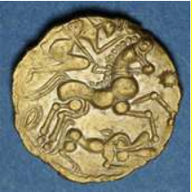
A
fourth stater coin of the Normandy Celtic tribe Unelli
bears a wolf whose head, stylized as an enormous mouth with an eye in its center, turns back to devour a four spoke wheel, possibly the thirteenth month of the year. Its tail is a volute bearing nine strokes, three other strokes being included in a horizontal crescent moon hovering above the wheel. Did the artist want to figure a bristling tail, or to allude with this tail and moon, to the twelve months of the regular lunar year, since the rest of the animal's body, of which the rear legs can clearly be seen, is not stylized, apart from the head and some sort of thorns running along the back and neck?
Another calendar motif: two lines, each composed of six waves, possibly representing the phases of the moon divided into two semesters. The right hand side line ends in a plant motif which could hint at the bright half of the year, when vegetation thrives anew. Depending on whether we read this motif clockwise or the other way, the scene might represent the summer solstice or the winter solstice (or Belteine or Samain day, i.e. May 1st or November 1st). Perhaps the artist purposely represented the crescent moon in this unusual position, so that it could be understood as a first completed quarter, the beginning of a lunation in the Celtic conception, whatever the reading direction.
Similar symbolism is presented on the ancient
Knowth Calendar
which dates from the Bronze Age (-2200 to -800) at the earliest.
This interpretation assumes that the main figure is a wolf, rather than a horse. The quarter stater is a very common coin among the many Gallic peoples. It usually presents a curly head, more or less stylized on the front side and, most often, a horse on the obverse, often accompanied by a sun.
Just as, among the Slavs, the bear's genuine name had to yield to the byname "med-ved" (aware of honey), the invocation of the goddess of the year whose name resembled that of a feared animal may have been subjected to a ban. Y. Guéhennec states that at *Samonion (on the last day of the year) the Celtiberians honoured a divinity whose name they did not dare to pronounce.
The legendary Keben of Locronan (the scenery of the "Troménie" which appears to be a celebration of the calendar) accuses Ronan of transforming into a wolf to devour her daughter - a five year old girl, as noted by D. Laurent!
In Christianized mythology, the "Vita" of the blind bard Saint Hervé, whose companion is a wolf, mentions a wheel which is missing in the saint's usual iconography. We are remembered of the statues of the Gallic thunder god, Taranis, who is most often shown leaning on a wheel. Many see in it an image of the cosmos revolving around the polar axis, in other words, of the year.
This cluster of concurrent elements upholds a possible calendar interpretation of the whole. Y. Guéhennec emphasizes by the way that hagiography in Catholic Celtia (Brittany, Ireland) has preserved the memory of ancient Celtic traditions far more accurately than the Protestant countries.
The phonetic proximity, in Celtic languages, of the words for "year" and "wolf" does however not apply as an explanatory element to all instances of Indo-European calendar symbolism:
- Scandinavian mythology, as we understand it through the "Poetic Edda", ascribes to the wolf, in the absence of any homonymy, another calendar-symbolic role. The myth is about two wolves, Sköll and Hati, who respectively pursue the sun and the moon, one over the daytime sky, the other over the night sky. They therefore ensure the regular cycle of days and nights. The capture of these stars, plunging the world into darkness, will mark "Ragnarök", the end of the world.
- In Hinduism, the demon Rahu pursues the sun and the moon to swallow them. He sometimes catches them but, having been decapitated by Vishnu, he can only cause brief eclipses.
About the title “Vespers of the Frogs”
Mr. Jérémy Loysance suggests to conclude that the title "Vespers of the Frogs" - which La Villemarqué describes as "grotesque" - discloses in fact part of the calendar character of this piece. The word "vespers", not only evokes the muttering of unconstruable words (Latin, croaking of frogs), but also a time of the day: the evening (in Latin: "vesper", in Greek: "hesperos", Ἓσπερος) . Linked to this last word (which is the origin of breton "gosperoù"), we find in Homer (Iliad, XXIII, 226-227), the word Eosphoros, Ἑωσφόρος (eos=dawn). It forms with Hesperos a couple applying to morning and evening star, which are in fact the same planet: Venus. This couple appears in classical mythology as twin brothers, one holding a raised torch, the other a torch turned towards the ground. This opposition, applied to the year, assigns to the winter and summer solstices a symbolic importance which the Midsummer and Christmas festivals have inherited.
A Midsummer song?
The
Rev. Loeiz ar Floc'h (Maodez Glandour
, 1909-1986) who includes in his collection "Le Brasier des Ancêtres", the "Vespers of the Frogs" in the "Children's" section, nevertheless notices, in a article for the magazine "Barr Heol" (N°28, Sept.1961, p.37) that his informant, Soaz Le Digerher, had learned this song from her mother who sang it in public, "once a year in front of the Midsummer fire. But now it is no longer sung, because people are no longer pious." Loeiz Ar Floc'h adds "I understood that she believed it was Latin, because it was incomprehensible like the prayers of priests."
"Mr. Dubourg... remembers hearing in Rospez, when he was a child, people singing it in front of the Midsummer fire." Furthermore he cites Gabriel Milin (1822-1895) who calls this song “a prayer” (quoted by J-J. Boidron, p. 67).
Mr. Boidron adds: "Saint-John (Midsummer) festival is one of the key dates of the solar cycle around which a whole set of rituals has developed, the permanence of which we see in traditional peasant societies."
Antiquity of the notion of "series"
"Rannou" (series) is not, however, an intruder imposed by La Villemarqué's imagination to replace "raned", the "frogs". We encounter this word in certain versions of “Vespers”. Only the translation "Series" is questionable. The true meaning of the word is "parts", "sections", "slices". "Kan din eus-a zaou rann" does not mean "Sing me the series of the number two", as stated in the Barzhaz, but rather: "Sing me [the content of] two parts". This is what the master does, going back each time to the first part. The “whole” implied here is a bulk of essential knowledge. It is nonetheless true that each new stanza of rank n relates to a set of n identical elements.
Development of the song (Importance of the rhymes)
All well considered, there are only a few differences between the individual versions and we are dealing with one and the same song. The transition from one to the other varianr is done - by moving the patterns in the list;
- by replacing words but keeping the meaning: "pezh arc'hant" - silver coin becomes "tribut arc'hant", "pevar c'hole" - 4 bulls becomes "pevar a houidi - 4 ducks, other motid animal , "seiz deiz"-seven days becomes "seiz heol"-seven sun;
- by replacing words with conservation of sounds: " "pezh arc'hant" - silver coin becomes "biz arc'hant" - ring, "tri mab Herri" - three sons Henri becomes "ti a zespari" - house in Despari(?), "seiz heol seiz loar" - seven sun seven moon becomes "seiz li seiz la" - seven this(?) seven that(?);
- by replacing words with conservation of rhythm: "Pelec'h ma tri mab an ti? - Where are the 3 sons of the house? becomes "Perc'henn an tri mab Herri" - master of the 3 sons Henri, rhythm 3+ 4 syllables;
- by combination of the above processes: "dek lestr tud gin a weler" - we see boats full of hostile people becomes "dek lestr war al litter / karget a win, a vezer" - ten boats on the coast / loaded with wine, of cloth, where "gin"=hostile becomes "gwin"=wine, and "weler"=one sees becomes "a vezer"=of cloth or, sometimes, "avelet"=stale;
The advanced degree of evolution of the formulas suggests a relative antiquity of this song.
Are the Vespers a "Pre-Christian calendar"?
M. Boidron
, though well aware of the traditions related to the "Vespers" (Jewish, Latin, German, Breton and French) addressed above, makes an attempt at a new interpretation by-passing this relation: the song could be the remnant of a
pre-Christian calendar
. He points out, as his major arguments:
the division of the matter into twelve series, sometimes thirteen, suggesting a sun calendar (12 months) being combined with a lunar calendar (12 months)
the more or less explicit mention of star and constellation names;
the mention "seven months - seven suns" right in the middle of the song,
the reference made to specific farm works, like in a "book of hours",
and the
"inclusion of a bestiary with probable calendar signification
".
To prop up his theory he quotes the Breton names of several
constellations
supposed to be mentioned in the "Vespers": ar Wiz (the Sow)= the Cancer; ar Yar (the Hen)= the Pleiades; ar Ki chase (the "Hunting dogs"); ar Werc'hez (The Virgin, Mary); ar Ri (The King?) =Orion (appearing, allegedly, as "map Herri")... After all, this interpretation matches up with La Villemarqué's view of the Cow hit by the fateful arrow of the Archer and of the "twelve Signs of the Zodiac in martial array".
It is also consistent with most of the preceding considerations (especially those about the "gourdeizioù").
However the
poorness of the Breton language
is striking, as far as astronomy is concerned. In this domain the Dictionary of the Rev. Grégoire offers a few words only: "stered parfed, stered red, sterenn an nord, gwerelaouen or sterenn tarzh-an-deiz or sterenn an heol", for "fix or moving stars, North star and morning star". To tell the truth, the author does not believe in astrology which he describes as :
"Skiant ar stered. Skiant a ro da aznavout ar vertuz hag an nerzh eus ar stered hag ar vad pe an drouk a hallont da ober d’an traoù terien,"
With this shorter translation:
"A science pondering over the power and influence of stars"
. In fact he wrote precisely:
"Astrology is a science pretending to know the impact and influence, good or bad, that the stars may have on the things that are on earth".
This paucity of the traditional Breton glossary of astronomy terms was already noticed by folklorist Paul Sébillot (1843-1918) who stated in his work "Le folklore de France" (1904-1906):
"The nature of the sky as a whole, i.e. as container of the world and space full of shining stars, takes up but little room in the concerns of the people of the present time, farmers and seamen alike. They take into account its aspects as a method for weather forecasting, but, as a rule, their curiosity does not tend to investigate it any further."
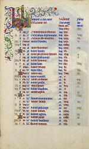
Are the "Vespers" a sung "book of hours"?
That is why, the manuscript illumination on the present page, borrowed from the calendar in the
"Très riches heures du Duc de Berry"
book of hours (started around 1410), while illustrating more or less accurately the bestiary and the agricultural work represented in the "Vespers", takes us away, apparently, from the rhyme's purpose, by imposing on us signs and degrees of the zodiac surmounting each picture painted by the Limbourg brothers.
The "Books of hours" printed in the 15th and 16th century, whose catalogue was set up by
Paul Lacombe
in 1907 includes no less than 595 items, only one of them in Breton: dating to 1576, it was translated by Gilles de Kerampuil, parson at Cléden-Poher and intended for the bishopric Léon. These books were devotional books developed for educated lay people. The learned palaeographer proposes as one of many fields of investigations for his fellow scholars
"the subject of the often very weird verses accompanying the nomenclature of the saints commemorated each month..."
(p. XLVII).
He also states that, sometimes, each month is undertitled with
"a verse... enclosing mentions pertaining to astrology, astronomy or ecclesiastical
computus
."
-Ill-fated days:
"The first day is ill-fated and so is the 24th day/ Of January. The 4th of February/ And the 25th, are not better:/ These 4 days are hazardous".
- computus (moveable feasts etc.):
"In January when the Kings have come
Giaume sleeps, Fremin is bored.
Antoin drinks all day wine, a-hundred times,
Stained are all his fingers."
The "Kings" are the 6th syllable in the first (French) verse (6th of January: Epiphany).
"Mor" is the 15th syllable in the quatrain (15th of January: Saint Maur).
"An" (toin), 17th syllable refers to Saint Anthony, on 17th of January, then comes saint Vincent's day (on 22nd of January) and Saint Paul's conversion (on 25th of January).
Other verses, the so-called "cisionian" verses, are in fact calendars listing feasts always starting from the Circumcision of Jesus ("cisio"):
"Cisio janus Epi venerabitur Hyl. quoque Marc. Ant..."
On the other hand, some of these verses harbour
medical advice
, interspersed in sayings about
the agricultural works
to be performed each month. Here is for instance an excerpt from the "Heures" of Claude Gouffier, printed in 1558, on the page January:
"ungere crura cave, cum Luna videbit Aquosum.
Insere tunc plantas, excelsas errige turres.
Et si carpis iter tunc tardius ad loca transi.
Refrain from anointing your legs, when the moon is in Aquarius.
It is the best time for grafting plants and erecting high towers.
But if you are to travel, postpone it to a later date ."
Even if we are still rather far away from them, like in the "Vespers", we find here references to the stars and to agricultural works...
Sometimes we encounter a piece summing up
"The Life of Man"
in 12 quatrains, each corresponding with a portion of 6 years in a lifetime, represented by a month of the year:
"The first six years that Man spends in this world
May rightfully be compared with January.
For during this month, energy and strength are scarce.
As they are in a child under the age of seven."
Last, but not least, we very seldom may come across,
lists of historical events
, for instance in some Norman books of hours where the evacuation of Cherbourg by the English on 12th August 1450 is recorded, an event which used to be celebrated in Norman churches. The calendars showed the mention:
"La redu. de nor." or "La réduction de Norman (restitution of Normandy)."
This latter point recalls the presence of the mysterious vanquished warriors returning from Nantes who possibly refer to a genuine historical fact in both the Vespers and the Series.
The multiplicity of areas addressed seems to be another aspect of the intuitive accuracy that guided La Villemarqué in the composition of his poem "Les Séries".
A calendar inscribed in a landscape
M. Jérémy Loysance suggests a connection with another system of calendar symbolism. In the chapter of the "Celtic Night" devoted to the
"Troménie of Locronan"
(pp. 87-110), Donatien Laurent proposes to see in the physical and sacred geography of the natural scenery for the troménies of Locronan, at the foot of a 285m hill, at the entrance to the Porzay plain and along Roman and pre-Roman roads, the inscription in the landscape of a Celtic calendar such as that of Coligny. The logical development is too elaborate to be repeated here. He insists that:
"To ensure [specific] [chronological] coincidences, it was necessary to put close together the winter stations at the start of the course, and to increase the distance between the following summer stations".
This is how we may for instance think of paralleling
the first 3 stations
that are not very far from each other (Saint-Eutrope, Eternal Father and Saint-Germain), with the "transversal series" (One ring, Two rings, Three rings to Mary ) at the beginning of several versions of "Vespers".
Donatien Laurent himself evokes the "gourdeizioù" in connection with the Troménies (p. 109):
"Let us venture a hypothesis: just as it was possible to 'read' in the last twelve days of the year the image of the twelve months to come, so could they hope, by controlling the twelve days of the last 'decline of the moon' before the great 'decline of summer', they would be able to act on the 12 lunar sequences of this unstable and dangerous autumn quarter beginning on August 1 (2 per fortnight centered on full moon and new moon successively) and to ensure bountiful harvest at this auspicious time - the full moon of July - when, as the saying goes...it is time to put "the sickle to the furrow" and to begin the harvest: "Da gann Gouero, eost e peb bro, haunter Gouero falz en ero" (at full moon in July, harvest everywhere; in mid-July, sickles shall go to the furrow)."
Obviously, Donatien Laurent gives the word "control" the meaning it has in English: "to direct, to master". Transposed to "Vespers", this interpretation would make of this nursery rhyme not only a system for interpreting signs, but a magical charm capable of influencing events. This would justify the quasi-religious respect that surrounds it among country people.
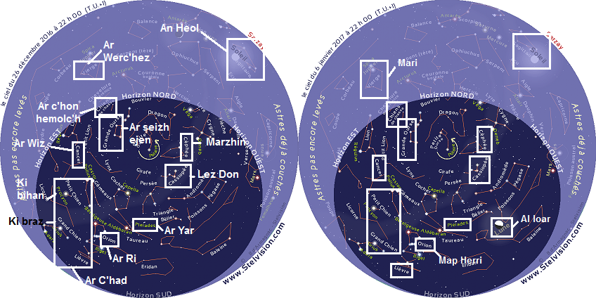
Constellations visibles pendant les "Gourdeizioù"
Visible constellations during the Twelve Days
IV La leçon druidique selon La Villemarqué - The Druidic lesson (La Villemarqué's view of the song)
L'interprétation par La Villemarqué des versions de Scaër et apparentées
Pour en revenir à La Villemarqué, l'Eglise aurait, selon lui, repris le système d'enseignement par questions et réponses récapitulatives inventé par les Druides, en substituant son propre Credo au Credo des antiques Celtes, lequel a été conservé dans l'énigmatique chant des "Séries"
C'est ce qu'il détaille sur huit longues pages de notes où il fait appel à César, Diogène Laërce, à la Myvyrian Archaeology of Wales, à Solin Polyhistor, à Procope, à Strabon, à Guillaume de Malesbury, au "Liber Landavensis" et autres ouvrages tout aussi impressionnants.
Comme on l'a dit dans la notice bibliographique ci-dessus, il a du s'appuyer pour établir son texte sur des versions cornouaillaises, en particulier celles de
Scaër
(Sk2, Sk3), et spécialement celle notée par
Brizeux
(Bzg), et de
Saint-Thurien
(StU1, StU2), deux paroisses voisines de Nizon. Il convient donc de rapprocher son texte de ces versions pour déterminer la portée de son "travail" de restauration. Les passages des "Séries" ayant une correspondance dans ces versions, ou se retrouvant dans toutes les autres (les vaches noires, le bois, la tête dressée, les épées brisées, les chemises ensanglantées, les sept soleils, les sept lunes, la scène de battage...) sont imprimés en
caractères gras.
L'authenticité du reste (près de neuf strophes sur vingt-trois) est sujette à examen.
Dès la première ligne des "Notes" qui font suite au chant (p.16 de l'édition 1845), l'auteur nous révèle quels auteurs lui ont inspiré la structure et l'essentiel du contenu de son poème.
- D'une part
Diogène Laërce
(III s.) qui dans "Proemia, Livre C, section VI, nous apprend que les Druides, dans leurs leçons,
"employaient souvent l'énigme et la figure [et] nous prouve en outre par une citation que leur rhythme privilégié était le tercet ou strophe de trois vers monorimes."
- D'autre part
Jules César
(mort en 44 av. J-C.) qui dans le VIème livre, chapitres 13 et 14, de la "Guerre des Gaules" décrit ainsi l'enseignement des Druides:
" Disputant et juventi tradunt... Ad hos magnus adulescentium numerus disciplinae causa concurrit", "Ils transmettent au cours de discussions toutes sortes de connaissances à la jeunesse ... Nombreux sont les adolescents qui viennent suivre leur enseignement"
" La croyance qu'ils cherchent surtout à établir, c'est que les âmes ne périssent point, et qu'après la mort, elles passent d'un corps dans un autre, ce qui leur paraît singulièrement propre à inspirer le courage, en éloignant la crainte de la mort. Le mouvement des astres, l'immensité de l'univers, la grandeur de la terre, la nature des choses, la force et le pouvoir des dieux immortels, tels sont en outre les sujets de leurs discussions: ils les transmettent à la jeunesse."
Sous forme de tercets, le dialogue breton entre un druide et son élève sera donc adapté pour traiter de ces sujets, à savoir la métempsychose, l'astronomie et l'astrologie, la philosophie, la géographie et les sciences, la religion et la mythologie, auxquelles s'ajouteront un peu d'histoire et de magie. On y évoque successivement:
l'
unité cosmique
nécessaire identifiée au chagrin et à la mort;
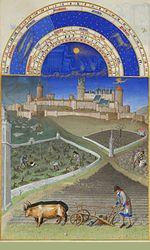
le
déluge
, avec les "bœufs de Hu Gadarn" et le crocodile (devenu coque). Bien que La Villemarqué cite les apocryphes
Triades
de la "Myvyrian Archeology", ces éléments pourraient appartenir à l'authentique tradition ancienne galloise. Le "Cambrian Quaterly Magazine" N° 13 de janvier 1832 note:
"Les 'Uchain Banog', les bœufs aux grandes cornes appartenaient à l'ancienne faune de Cambrie et se distinguaient par de puissantes ramures... Il n'est pas un lac dans la Principauté dont les riverains ne prétendent que c'est celui dont les 'Uchain Banog' ont tiré l''afanc', un autre terrible animal qu'on croit être le castor. Dans la triade de Caradawc, l'un des trois exploits de l'île de Bretagne est le "retrait du lac de l'Afanc par les bœufs de Hu Gadarn, pour que le lac cesse de déborder" (Ac Ychain Bannog Hu Gadarn a lusgafant Afanc y llyn i dir ac ni thorres y llynn mwyach).
Une version des "Vêpres" citée par Gourvil parle d'
"une vache rousse et d'une vache noire"
; une autre,
"de huit bœufs et un million, tirant la charrue sur le sillon en vue de leur rémission" ou "à la foire de la mission"
:
- Bzg: "Eizh ejen ha milion/ Oc'h arat war an ant don"
- Sk2: "... Gant ar remision"
- StU1: "...Da foar ar mision".
La version Bzg se termine par deux vers incompréhensibles:
"Ur buro, ur buri/ Er verbo an estoni"
. Moins impénétrable semble être le
"Daou ejen dioc'h ur gibi/ O sachañ, o soc'hetiñ"
du Barzhaz:
"Deux bœufs tirant à perdre haleine sur une "kibi".
"Kibig" semble être le diminutif de "kib", pl. kiboù = "boite d'essieu", définie comme une "boîte de fer dans le moyeu" à l'article "charrette", p. 154 du dictionnaire du P. Grégoire de Rostrenen. Deux boeufs s'évertuent à faire avancer une charrue ou une charrette dont un moyeu de roue est bloqué par rapport à un essieu fixe. "Buro", "buri", "verbo" pourraient désigner d'autres pièces d'un axe de roue, nécessaires pour une réparation: "breoll", pl. "breollioù" (croc fixé à l'essieu), "gwiberoù" (esses d'extrémités).
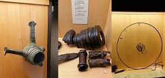
les
trois "sphères de l'existence"
évoquées par le barde gallois du 6ème siècle, Taliesin. En fait, les "Séries" parlent de "portions de ce monde-ci" - teir rann ar bed-mañ-, ce qui suggère un archétype remontant au 15ème siècle qui ne connaissait que trois continents.
De même, dans
An hini gozh
, lit-on: "Dianket an dimezelled/ Dianket e teir rann ar bed", "Au diable les demoiselles dans les trois continents!"
les
"Trois royaumes de Merlin
/(Pleins de) fruits d'or de fleurs luisantes": "Teir rouantelez Varzhin/Frouezh melen ha bleuñv lirzin." Alors que le fameux enchanteur était appelé "Merlin" dans la 1ère édition du Barzhaz (1839), à partir de l'édition de 1845, cette appellation est remplacée par la forme
"Marzhin"
, dans le texte breton ( cf.
Merlin le Barde
).
La version des "Vêpres" citée par Gourvil d'après Brizeux (Bzg) porte effectivement "Trois royaumes de Marzin" (Teir rouantelez Varzhin), tout comme la version de Scaër citée par Luzel (Sk2). Peut-être s'agit-il, dans les deux cas, d'une interprétation, sous l'influence du Barzhaz de 1845, d'un mot mystérieux, mais authentique, que l'on trouve dans d'autres variantes de Scaër et de Saint-Thurien:
"Teir gentefarzin"
(=teir gentel Varzin - Trois "leçons de Martin"?)
Le commentaire de La Villemarqué et une note de bas de page nous apprennent que ce troisième royaume serait la "3ème sphère", celle des "béatitudes" dont parleraient les anciens textes gallois "interprétés" par les tenants de la soi-disant "Hérésie Néo-Druidique" (cf. encart, page
Gwenc'hlan
)
L'équivalent dans les versions Luzel (FaU) et de Pluzunet (Plu2) "Teir rouanez er maendi/ Perc'henn an tri Mab Herri": "Trois reines dans le palais/ propriétaires des
trois fils (d') Henri"
n'est pas non plus dépourvu de mystère! Il est peut-être à rapprocher du vers 100 du
"Dialogue entre Arthur et Guinclaff"
(retrouvé en 1924 par F. Gourvil), "Herry map Herry, ha dou
Baron
da Herry": Henri, fils d'Henri et ses deux barons". Ce vers semble se rapporter aux trois rois anglais de la dynastie de Lancastre, Henri IV, Henri V et Henri VI qui régnèrent de 1399 à 1471. Ou encore à Henri II Plantagenêt (1133-1189) qui régna à partir de 1154 avec ses 3 fils liés à l'histoire de la Bretagne, Geoffroy II qui y fut Duc de 1181 à 1186, Richard Coeur-de-Lion (1157-1199) qui fut roi d'Angleterre de 1189 à 1199 et Jean sans Terre (1167-1216) qui fut roi d'Angleterre de 1199 à 1216 à la place du fils de Geoffroy, Arthur, qui fut duc de Bretagne de 1186 à 1203, année où il fut assassiné par lui. "Dou baron" est dans une des 2 copies du "Dialogue": "dou
paezron"
, deux parrains, tandis qu'un texte français publié en 1488, "La Prophétie de Bretaigne" proclame:
Puis tôt après y viendra le lion
Avec ses gens pleins de forcenerie.
Les deux
pardons
de grande seigneurie
Ci détruiront le nord cruellement.
"Perc'henn an tri mab Herri" apparaît sous d'autres formes: "perc'henn an tri c'herig" (propriétaire des 3 petites maisons [ou villes]) ou "Tri ha tri a gemer dri"="Trois et trois qui prennent trois" qui semble se rapporter aux rois d'un jeu de cartes comme dans la complainte québecoise du "Jeu de cartes" (les trois rois mages permettent de prendre Hérode). Cette dernière version témoigne des efforts déployés par l'église post -tridentine pour faire des jeux de cartes des images de prière.
les
"quatre pierres à aiguiser"
(pevar higolenn) rappellent le talisman détenu par le chef breton Tudno Tedgled, s'il faut en croire le "Bardic Museum" d'Owen Jones dit "Myvyr". Elles figurent, comme l'a noté Gourvil, dans la version recueillie à Scaër (Sk2); mais la version de Saint-Thurien (StU1) évoque aussi "teir siten golen" (trois ?)
les
"cinq zones de la terre"
(pemp gouriz an douar) qui n'en était pas moins divisée en trois parties, Asie, Afrique et Europe, étaient décrites dans un poème attribué à Taliesin. Toutefois les versions Brizeux, de Scaër et de Saint-Turien ignorent ces "gouriz" (ceintures ou zones) et parlent de "pemp bez" (cinq tombes) ou de "pemp pezh" (cinq pièces) sur un "hoir" (un hêr= un héritier) ou une "génisse" (un annoar)!
Quant à notre "sœur sous un dolmen de cinq pierres" (pemp maen .../ Taol-maen war hor c'hoar) que La Villemarqué suspecte d'être la personne visée dans le
poème de Myrddin
"Cyfoesi Myrddin a Gwenddydd ei Chwaer" ('Entretien de Myrddin et de sa sœur Gwenddydd'), dans les versions de Scaër (Bzg, Sk2), la phrase correspondante est en réalité "Un taol maen digant he c'hoar", où le mot "taol" est masculin et signifie "coup": "une pierre jetée par sa sœur". La troisième version de Scaër est plus brutale encore: "seizh taol troad digant he c'hoar", sept coups de pied de sa sœur!
les
"enfants de cire"
sont une technique d'envoûtement décrite dans le chant "Ar bugel koar", publié par Luzel dans ses "Gwerzioù Breiz Izel", ainsi qu'une
seconde version
très proche de
celle collectée par J-M de Penguern
. (Une version notée à Scaër indique "Six jours et six lunes/ Six petits enfants de cire").
(En revanche, dans le 2ème tercet de la strophe 6, le
nain et son chaudron aux six plantes
, venus tout droit des "Myvyrian Archaeologiae of Wales" (Histoire de Ceridwen et Gwion Bach: engendrement de Taliesin), n'existent dans aucune des 39 versions populaires recensées par M. Boidron).
la liste des
"six plantes médicinales"
, des "sept éléments" et des huit temples où brûlaient le "feu sacré" des druides nous est fournie dans le détail.
La traduction inexacte "Sept planètes y compris la Poule" ("Seizh planedenn gant ar Yar" signifie "La Poussinière, ou constellation des
Pléiades
, comporte sept planètes") est un gage d'authenticité de la phrase en question, ainsi sans doute que de la suivante avec laquelle elle rime ("Seizh elvenn gant bleud an aer", "la farine de l'air se compose de sept éléments"), même si ces deux phrases sont absentes des versions collectées.
les
"génisses de l'Île profonde"
(Enez don) sont celles de l'île galloise d'Anglesey (Iniz Mon) dont on parle dans quelque ouvrage ancien. Il a été question de génisses dans les versions de Scaër à propos du nombre deux.
La
"montagne de la guerre" (Menez Kad)
, comprise comme "menez ha gad" (montagne et lièvre) provient peut-être d'une strophe sur les chiens de chasse de la série 12 que l'on trouve dans plusieurs versions: ils reviennent de l'assemblée (église) et leur maître leur dit d'attraper un lièvre qui sera mis dans son sac.
Aux
"sept soleils et sept lunes"
(seizh heol ha seizh loar) du Barzhaz répondent "sept soleils et sept lunes" et "sept étoiles et sept lunes" (seizh deiz ha seizh loar/ seizh steredenn, seizh loar) dans une version d'Elliant.
les
"neuf petites mains blanches"
ont à voir avec des sacrifices d'enfants pratiqués, selon
Pierre Le Baud
en Aber-Vrac'h, dont l'ancien nom,
"Porzh Keinan"
, comme l'indique le dictionnaire du Père Grégoire (et non "Keinanen" comme il est dit dans la longue note du Barzhaz), signifie ""Port de lamentation" et est rappelé dans le vers
"Ha nav mamm o
keinañ
meur", "Et neuf mères qui gémissent beaucoup"
. "Keinañ" signifie "relier un livre" (de "kein", le "dos"). Il faudrait plutôt ""keiniñ", "gémir".
La version de cette strophe donnée par De Penguern dans son "Ar Ranet 1, Fragment" (t. 91), est plus prosaïque:
"Eizh gwrac'h war al leur/O tornañ piz, O tornan kleur": "Huit vieilles sur l'aire/ En train de battre des pois, de battre des pampres".
Il semblerait que La Villemarqué, s'il a respecté son modèle en admettant, sans doute involontairement, un "monstre" franco-breton, le nom de famille Lozac'hmeur (An Ozhac'h-meur), sous la forme "Lezarmeur", ait modifié le 1er vers pour évoquer un dolmen sacrificiel (taol-vaen) dans le curieux "taol-leur", "table de l'aire". Peut-être a-t-il aussi écarté le mot "dornañ", "battre le blé" au profit de "dornig", "menotte" et remplacé "gwrac'h", "vieille femme" par "mamm", "mère", pour les besoins de sa romantique démonstration.
De fait, dans une version de Poullaouen (Pwl) on a :
"Eizh dornerig war al leur/ 'Tal kichen ti Ar Meur", "Neuf petits batteurs sur l'aire/ Juste à côté de la maison de Le Meur".
les "korriganes" sont les
prêtresses de l'île de Sein
dont parle Pomponius Mela. Elles vénéraient la lune qu'elles appelaient "Koré" (selon Strabon).
Cette image d'Epinal celtique n'a aucun équivalent dans les versions collectées citées par M. Boidron.
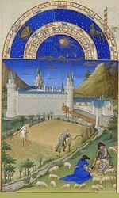
le
"sanglier"
qui est partout présent dans l'ancienne poésie galloise occupe dans les "Séries" la place d'honneur qui lui revient de droit. Dans sa "Légende celtique en Irlande, Cambrie et en Bretagne", publiée en 1859, La Villemarqué cite ce passage qu'il présente comme une antique symbolisation de l'enseignement: le sanglier est l'instituteur appelant ses élèves et le pommier dont les fleurs doivent se changer en fruits est l'image de la science (P.144, Légende de Saint Kadok).
La version de Brizeux (Bzg) présente quatre vers que l'on retrouve presque inchangés dans le Barzhaz:
"Ur wiz hag he nav forc'hell/Da zoull dor ar c'hastell/ O soroc'hal, disoroc'hal/ Dindan ar wezenn aval"
"Une truie et ses neuf porcelets / A la porte du château/ Qui fouissent et "défouissent" / Sous le pommier"
.
les
10 vaisseaux et les 11 personnages
aux épées cassées et aux chemises ensanglantées, - que l'on retrouve, une fois n'est pas coutume, tels quels dans les "Vêpres"-
sont pour La Villemarqué une évocation de la catastrophique
défaite des Vénètes
vaincus par Jules César en 57 avant J.C. (Guerre des Gaules, Livre. III). Dans toutes les versions citées par Gourvil, les personnages vaincus (prêtres, moines ou fils) reviennent de Nantes et sont au nombre, tantôt de neuf, tantôt de onze. Mais les bâtons de coudrier dont ces onze vaincus (sur trois-cents) se sont fait des béquilles n'existent que dans le poème du Barzhaz. Le collecteur qui est fort probablement l'auteur de cet ajout nous indique ses sources: un passage du Cartulaire de Redon, cité par Dom Morice dans ses "Preuves", où un machtiern se soumet à un roi, et porte en signe de sa défaite une verge (ou un bâton) de coudrier ("cum virga corilina").
Remarque amusante au sujet de ces "bâtons": La fausse étymologie proposée par La Villemarqué pour le mot "beleg" (prêtre), qui signifierait, selon lui, "prêtre de
Bele
nos", doit être corrigée en "porteur de bâton". "Beleg" est un emprunt au latin, *bac(u)l-ûcu-s «muni d'un bâton», tout comme le gallois "bagl", «bâton», plus précisément «houlette» et c'est un dérivé du latin «baculus», "bâton", de même que «bacille» (germe en forme de bâtonnet).
les
12 signes
sont ceux du zodiac dont le combat annonce la fin de l'univers religieux celtique ou quelque chose dans ce genre, d'autant que la "Vache" à l'écusson blanc est une vache sacrée "sans laquelle, [selon un barde gallois], le monde périrait." (Une version collectée par De Penguern parle de "Cinq vaches maigres à faire pitié/ Passant sur la terre de Dieu/ Beuglements et plaintes depuis").
Et La Villemarqué ajoute:
"La grande idée de l'
unité divine
est placée au début de la pièce chrétienne [citée plus haut] et revient à la fin de chaque strophe...de même que le dogme de la
nécessité
unique, de la douleur et de la mort est ramené comme origine et comme terme de toutes choses."
Les 3 strophes "orphelines"
Les parties qui restent sans équivalents dans les versions populaires frappent par leur bizarrerie: la strophe 6.2 (le
nain
qui trempe le doigt dans le breuvage qu'il mêle); 3.1 (les
trois parties
de l'espace, du temps et du monde vivant); 3.3 (le développement sur le "
royaume de Merlin
": fruits, fleurs, enfants rieurs).
La Villemarqué évoque le Taliesin de la "Myvyrian", "né trois fois" et dont "chêne est le nom", ainsi que "la 3ème sphère mythologiques des traditions galloises, celle des Béatitudes, Kylch y Gwynfyd -cf. l'armor. Gwenvidigezh". Le nain revoie à Gwion Bach qui deviendra Taliesin , comme on l'a dit plus haut. Les 'tri rann er bed-mañ", dans l'état actuel de nos connaissances, pourraient renvoyer aux désignations gauloises pour les mondes supérieur, médian (le notre) et le tré(pro)fonds: "albion", "bitu" et ("ande-)dubnon". Ces mots survivent peut-être dans les langues celtiques modernes: gallois "elfydd", "byd" et "dwfn"/"annwfn", ou breton "alvez","bed" et "don"= "profond". Notre bas-monde s'appelle "bith" en irlandais et "bys" en cornique tandis que le "monde du bas est "domun" en irlandais et "down" en cornique. "Elfed" a désigné un ancien royaume des Britons au nord de l'Angleterre, laquelle a conservé la désignation d"'Albion".
De même la description du royaume de Merlin correspond assez bien au "magh mell" des Irlandais (gaulois "mago"/breton "maez"="champ, "mell"= breton "énorme"). Ce dernier passage fait penser aux strophes 47 et 48 du chant
"Ar breur mager"
, qui n'est pas noté dans le manuscrit de Keransquer. Les deux autres strophes n'ont pas, non plus, de contrepartie dans les versions collectées. Toutes trois comprennent une ligne d'exposition: breuvage, tripartisme, monde heureux, suivie chacune de deux vers développant l'idée de départ.
Cet agencement harmonieux contraste avec les
énumérations
des strophes 7 (soleils, planètes, éléments) et 5 (zones, âges rochers), toutes deux sans doute d'origine populaire, comme le sont les ensembles dont le contenu initial s'accommode difficilement de la structure en tercets, maintenue à l'aide de vers postiches: 9.3 - 9.4 et 6.1.
Sur l'indication de Diogène Laërce, La Villemarqué a conféré, comme on l'a dit, à toutes les réponses du Druide le forme de
tercets
de 7 pieds (parfois 8), sans doute sur le modèle des
"triades" galloises
qui figurent en bonne place dans la "Myvyrian Archaeology". Cette présentation et cette référence sont inopérantes en ce qui concerne les versions "populaires". Celles-ci se composent, pour une grande part, de distiques de longueur souvent variable.
La strophe des assonnances
Particulièrement évocatrice est la strophe 12.4 où les
assonances
(tarann, tan, rann) rappellent le refrain du
Vin des Gaulois
, un chant que l'Abbé Henry affirme authentique.
Elles ont pu être suggérées par un "charme" destiné à conjurer les
dartres
que l'on trouve dans les "Sonioù" de Luzel et qui est repris dans une version citée par Francis Gourvil que son ami René Quillivic d'Audierne lui communiqua en 1953:
"Teredenner (*) a lec'h da lec'h,
Tec'h ha tec'h!
N'eo ket amañ da lec'h.
Etre nav mor ha nav menez:
Aze ema da wele."
Dartre (*), de lieu en lieu,
Va-t-en, va-t-en!
Ici n'est pas ta place.
Entre neuf mers et neuf monts,
C'est là qu'est ton lit.
(*) D'où "taran ha tan" (tonnerre et feu). La forme correcte de ce mot est "derwedenn"
La Villemarqué a noté cette formule à la page 7 de son carnet de collecte N°3 (où une inscription de sa main au crayon à la 1ère page nous apprend les dates des éléments consignés: "1843, 1844 etc."), précédée de la mention "Incantation ou charme recueilli par Penguern pour les dartres". Elle est légèrement différente de celle de Luzel:
"Deré , dero , déré d’ec’h!(*)
ne ket a aman da lec’h
Nag aman nag e neb lec’h,
tremen nao traon[?], ha nao mene
ha nao fenten [?] karantez".
"Il convient, chêne , voici ce qui vous convient!
Ici n'est pas ta place
Pas plus ici qu'ailleurs,
Passe 9 vallées et 9 monts
Et 9 fontaines d'amour".
(*) Reproduit phonétiquement le mot "Deredevez"="dartre"
Taliesin et l’ "afanc"
La Villemarqué tenait à "prouver" que la "littérature orale" bretonne valait bien les manuscrits gallois, puisqu’on y trouvait les mêmes références :
-3 allusions au
barde Taliesin (TROIS sphères
de l’existence,
CINQ zones
de la terre, le nain et le chaudron aux
SIX herbes
) qui reprennent des données issues de l’ "Historia Britonum" (9ème s.), du "Canu Taliesin" (1275) et du "Conte de Taliesin" d’Elis Gruffydd (16ème s.) qui fait de Taliesin un avatar d’un personnage mythologique gallois, Gwyon Bach, gardien du chaudron de la science de la magicienne Keridwen.
- 1 allusion à l’
"afanc"
ou
"addanc"
, ce monstre lacustre révélé par la traduction anglaise de Lady Charlotte Guest du "Pérédur" (Parsifal) des "Mabinogion" (de 1838 à 1849). Dans ce conte, la bête vit dans une caverne, près du palais des 3 fils du « Roi des tortures ». A chaque fois que ceux-ci l’attaquent, ils sont tués, mais des jeunes filles les ressuscitent. Pérédur vient à bout du monstre grâce à l’aide de l’impératrice de Constantinople.
On le voit réapparaître dans les "Triades galloises" d’Iolo Morganwg (Edward Williams, 1747-1826) qui mettent en scène un héros nommé
"Hu Gadarn"
. Ce nom répond à celui de
"Hugo le Fort"
dans la traduction galloise du roman français du 12ème s.
"Le Pèlerinage de Charlemagne"
.
Alors que ledit Charlemagne ne fait qu’une bouchée de cet empereur de Constantinople (!), chez Iolo, Hu-Gadarn devient un héros prométhéen, inventeur de l’agriculture, qui conduit les Britons du « Pays de l’été » vers l’Île de Bretagne. Il ne lui consacre pas moins de 7 Triades de la très suspecte "3eme série".
Dans son "Barddas", Iolo en fait un dieu qui délivre la (Grande) Bretagne de ce monstre responsable d’inondations catastrophiques. Celles-ci finissent par noyer tous les habitants sauf deux, Dwyfan et Dwyfach. Selon un récit qu’Iolo n’est pas le seul à rapporter, Hu Gadarn utilise ses
DEUX bœufs
pour tirer l’afanc hors du lac. Celui-ci est alors à sa merci, et il le tue.
On peut maintenant faire deux remarques :
- Le nom de famille
"Guyonvarc’h"
qu’on est tenté de rapprocher de "Gwyon Bach" est assez répandu en Bretagne, sous cette forme ou sous des formes similaires.
- De même le gallois
"afanc"
et le breton
"avank"
, sont les mots habituellement proposés par les dictionnaires pour traduire le français
"castor"
, animal responsable lui aussi de catastrophes hydrauliques. "Avank" est le premier mot cité par le dictionnaire du Père Grégoire de Rostrenen (1732), avant
"byeuzr"
, que le moderne Favereau a remplacé par
"bever"
, ces deux derniers mots correspondant aux dénominations communes à plusieurs langues indo-européennes : all. "Biber", angl. "beaver", latin "fever", français "bièvre" - encore connu du père Grégoire -, russe "bobr", gaél. "bìobhair"... Les Gaulois qui fondèrent Bibracte ou La Motte-Beuvron utilisaient un mot similaire, à n’en point douter. C’est une autre légende, celle de l’animal réputé procéder à sa propre castration, qui a peut-être conduit à remplacer, en France, le mot « bièvre » par le mot gréco-latin « castor »…
Même s’il s’agit de références littéraires, celles-ci ne sont donc pas totalement étrangères à la tradition orale bretonne et cela pourrait excuser, en partie, les libertés que prend La Villemarqué avec l’énigmatique matière première poétique qu’il veut mettre en forme.
La Villemarqué's interpretation of the Scaër and related versions
According to La Villemarqué, the Church took up an old teaching method based on questions and answers that the Druids had developed (according to Julius Caesar), but replaced the ancient Celtic creed with a creed of its own.
Full particulars of his theory are given all along eight small print pages of "Notes" over-brimming with references to Caesar, Diogenes of Apollonia, the Myvyrian Archaeology of Wales, Solin Polyhistor, Procopius, Strabo, William of Malesbury, the "Liber Landavensis" and many other as impressive works.
As stated in the above bibliographic notice, he very likely availed himself to compose his text of Cornouaille dialect versions of the song, especially those sung at
Scaër
(Sk2, Sk3), in particular the version recorded by
Brizeux
(Bzg), and at
Saint-Thurien
(StU1, StU2), both parishes being adjacent to Nizon. It is therefore advisable to parallel his text with these versions to asset the extent of his "restoration work". The passages in the "Series" which have a counterpart in some of these versions, or are extant in all the others (the black cows, the dark wood, the raised head, the smashed swords, the blood-stained shirts, the seven suns, the seven moons, the threshing scene...) are printed in
bold characters
. The genuineness of the rest (nearly nine out of twenty-three stanzas) is questionable.
In the very first line of his "Notes" to the song (p.16 of the 1845 edition) La Villemarqué reveals from which authors he borrowed the structure and most of the contents of his poem:
- On the one hand from
Diogenes Laërtius
(III cent.) who states, in "Proemia, Book C, section VI, that the Druids, when teaching their pupils,
"often used riddles and allegories [and] demonstrates, by quoting one of them, that they would favour in their poems triplets, i.e. sets of three lines with the same rhyme."
- On the other hand,
Julius Caesar
(died 44 BC) who, in the VIth Book, chapters 13 and 14 of his "Commentaries on the Gallic war", describes the Druids' teaching as follows:
" Disputant et juventi tradunt... Ad hos magnus adulescentium numerus disciplinae causa concurrit", They discuss and impart to the youth many things...
To these a large number of the young men resort for the purpose of instruction
"They wish to inculcate this as one of their leading tenets, that souls do not become extinct, but pass after death from one body to another, and they think that men by this tenet are in a great degree excited to valor, the fear of death being disregarded. They likewise discuss and impart to the youth many things respecting the stars and their motion, respecting the extent of the world and of our earth, respecting the nature of things, respecting the power and the majesty of the immortal gods".
The Breton dialogue between a ruid and his pupil shall therefore be turned into trriplets to accommodate these topics, namely, metempsychosis, astronomy and astrology, philosophy, geography and natural sciences, religion and mythology, with a bit of history and black magic. It evokes successively:
necessary
cosmic unity
which becomes identified with sorrow and death;
the
Deluge
, with the "oxen of Hu Gadarn" and the crocodile (who has become a shell). Though La Villemarqué refers to the spurious
Triads
in the Myvyrian Archeology, these elements could possibly belong to genuine old Welsh tradition. The Cambrian Quaterly Magazine N° 13 of January 1832 notes:
"The Uchain Banog, the large horned oxen were some kind of animals formerly in Wales distinguished by their branching horns... There is scarcely a lake in the Principality, but it is asserted by the neighbourhood to be one out of which the Uchain Banog drew the "afanc", another terrible animal supposed to be a monstrous beaver. In the Triad of Caradawc, one of the three chief-masterworks of the island of Britain is the "drawing of the Afanc to land out of the lake by the oxen of Hu Gadarn, so that the lake burst forth no more" (Ac Ychain Bannog Hu Gadarn a lusgafant Afanc y llyn idir ac ni thorres y llynn mwyach).
A version of the "Vespers" quoted by Gourvil mentions
"a red cow and a black cow"
; another version,
"eight oxen and a million, drawing a plough along a furrow for forgiveness" or "at the Mission's fair":
- Bzg: "Eizh ejen ha milion/ Oc'h arat war an ant don"
- Sk2: "... Gant ar remision"
- StU1: "...Da foar ar mision".
The Bzg version ends up with two incomprehensible lines:
"Ur buro, ur buri/ Er verbo an estoni".
Less impenetrable seem to be the
"Daou ejen dioc'h ur gibi/ O sachañ, o soc'hetiñ": "two suffocating oxen pulling hard on a "kibi"
, in the Barzhaz. "Kibig could be the diminutive of "kib", pl. kiboù = "axle-box", defined as "the housing of the axle end" under item "charrette" (barrow), on p. 154 in the Dictionary of the Rev. Grégoire of Rostrenen. Two oxen struggle hard to make a plough or a cart move while a hub of a wheel is seized up on the axle shaft. "Buro", "buri", "verbo" could refer to spare parts to fix the damaged wheel: "breoll", pl. "breollioù" (hooks fastened to the axle), "gwiberoù" (axle end iron pegs).
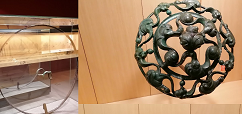
the
three "spheres of existence"
mentioned by the 6th century Welsh bard Taliesin. In fact the "Series" have "teir rann ar bed-mañ" (three portions of this world), such pointing to the 15th century, when only three continents were known.
That's why the song
An hini gozh
has: "Dianket an dimezelled/ Dianket e teir rann ar bed" "The devil take the fine ladies/ wherever on earth they might be!"
the
"Three realms of Merlin
/ (Full of) gold fruit, of gleaming posies": "Teir rouantelez Varzhin/ Frouezh melen ha bleuñv lirzin." Whereas the famous wizard was called "Merlin" in the 1st edition of the Barzhaz (1839), in the 1845 and 1867 editions, this name is replaced with the form
"Marzhin"
, in the Breton text ( cf.
Merlin the Bard
)
The version of the "Vespers" quoted by Gourvil as collected by Brizeux (Bzg) really has "Three realms of Marzhin". So has the Scaër version quoted by Luzel (Sk2). Maybe was it in both cases, an interpretation influenced by the 1845 Barzhaz edition of a mysterious but authentic word existing in other Scaër and Saint-Thurien variants:
"Teir gentefarzin"
(=teir gentel Varzhin - Three "lectures of Martin"?)
La Villemarqué's comments and a footnote explains that this third realm refers to the "third sphere", the "Sphere of beatitude" allegedly addressed in the old Welsh texts, as interpreted by the supporters of the so-called "Neo-Druidic heresy" theory (cf. inset on page
Gwenc'hlan
)
The counterpart in Luzel's version (FaU) and in a Pluzunet version (Plu2), "Teir rouanez er maendi/ Perc'henn an tri Mab Herri": "Three queens in the stone house/Owning
the three sons (of) Henry
" is not deprived of mystery either. It might be paralleled with line 100 in the
"Dialogue between Arthur and Guinclaff"
(re-discovered by F. Gourvil in 1924), "Herry map Herry, ha dou Baron da Herry": Henry, son of Henry and his two barons" which apparently refers to three English kings of the Lancaster Dynasty, Henry IV, Henry V and Henry VI who reigned from 1399 till 1461.
Or to Henri II Plantagenêt (1133-1189) who reigned from 1154 with his 3 sons linked to the history of Brittany, Geoffroy II who was Duke of Brittany from 1181 to 1186, Richard Coeur-de-Lion (1157- 1199) who was King of England from 1189 to 1199 and John without Land (1167-1216) who was King of England from 1199 to 1216 in place of Geoffroy's son, Arthur, who was Duke of Brittany from 1186 to 1203 , in which year he was assassinated by him. "Dou baron" is in one of the 2 copies of the "Dialogue": "dou
paezron"
, two godfathers, while a French text published in 1488, "La Prophétie de Bretaigne" proclaims:
Then soon after will come the lion
With his people full of frenzy.
The two
pardons
of his great lordship
Will harry the north fiercely.
"Perc'henn an tri mab Herri" appears in other forms: "perc'henn an tri c'herig" (owner of the 3 small houses [or towns]) or "Tri ha tri a gemer dri" = "Three and three which take three "which seems to relate to the kings of a card game, as in a Quebec lament titled the" Card game "(where the player who has the three Wise men is allowed to take Herod). This latest version testifies to the efforts of the post-Tridentine church to make prayer pictures out of card games.
the
"four grinding stones"
(pevar higolen) refer to the talisman owned by the Breton chief Tudno Tedgled, as stated in the "Bardic Museum" of Owen Jones, also known as "Myvyr". They are found, Gourvil admits, in a version of the "Vespers" collected at Scaër (Sk2); but the Saint-Thurien version (StU1) also has "teir siten golen" (three ?)
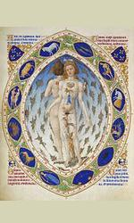
the
"five zones of the earth"
(pemp gouriz an douar) which was nevertheless divided into three parts, Asia, Africa and Europe, were addressed in a poem ascribed to Taliesin. However the Brizeux, Scaër and Saint-Turien versions don't know of "gouriz" (belt or zone) but have "pemp bez" (five tombs) or "pemp pezh" (five pieces) on an "heir" (un hêr) or a "heifer" (un annoar)!
As for our "sister underneath a five stone dolmen" (pemp mên .../ Taol-maen war hor c'hoar) whom La Villemarqué suspects to be the person referred to in
Myrddin's poem
"Cyfoesi Myrddin a Gwenddydd ei Chwaer" ('The conversation of Myrddin and his sister Gwenddydd'), the Scaër versions (Bzg, Sk2) have in fact "Un taol maen digant he c'hoar", where "taol" is masculine and means "hit": "a stone thrown by her sister", whereas the third Scaër version has "seizh taol troad digant he c'hoar" (kicked seven times by her sister)!
the
"wax children"
refer to some bewitchment technique like the one described in the song "Ar bugel koar", published by Luzel in his collection "Gwerzioù Breiz Izel", along with a
second version
very similar to the song
collected by J-M de Penguern
. (A version collected at Scaër has "Six days and six moons/ Six wax children").
(But in the second triplet of stanza 6, the
dwarf and his cauldron with six herbs
, borrowed from the "Myvyrian Archaeologiae of Wales", Story of Ceridwen and Gwion Bach: begetting of Taliesin, are missing in all of the 39 folk songs listed by M. Boidron).
detailed lists of the
"six medicinal herbs"
, of the
"seven elements"
, and of the
eight places of worship
where the "sacred fire" of the druids was kept, are given.
The erroneous translation of "Seizh planedenn gant ar Yar" as "Seven planets with the Hen", whereas it should be "The
Pleiades
are made up of seven planets", should give evidence of the authenticity of this sentence and the following with which it rhymes ("Seizh elvenn gant bleud an aer", "seven elements make up the flour of the air"), even if both are missing in the collected versions.
the
"Heifers of the Deep Island"
(Enez don) are, in fact, the heifers of the Isle of Anglesey (Iniz Mon) addressed somewhere in ancient literature. We came across these heifers existing in the Scaër versions in connection with number two.
The
"mount of war" (Menez Kad)
, read as "menez ha gad" (mount and hare) possibly corresponds with stanza 12 about hunting hounds in several versions: they come home from the "assembly" (from church) and are ordered by their master to catch a hare that will be put into his pouch.
With the
"seven suns and seven moons"
(seizh heol ha seizh loar) in the Barzhaz correspond "seven suns and seven moons" and "seven stars and seven moons" (seizh deiz ha seizh loar/ seizh steredenn, seizh loar) in a version collected near Elliant.
the
"nine small white hands"
evoke child sacrifice, once in practice according to
Pierre Le Baud
at Aber-Vrac'h whose former name,
"Porzh Keinan"
, as stated in the Rev. Gregory of Rostrenen's dictionary (and not "Keinanen" as asserted in a long footnote in the Barzhaz), means "Harbour of Lament". It is echoed by the line
"Ha nav mamm o
keinañ
meur", "An nine mothers wailing a great(deal)"
. "Keinañ" means in fact "to bind a book" (from "kein","spine, back"). The word meant is "keiniñ", "to wail".
The version of this stanza recorded by De Penguern in his "Ar Ranet 1, Fragment" (t. 91), is more pedestrian:
"Eizh gwrac'h war al leur/O tornañ piz, O tornan kleur": "Eight hags on the floor/ Threshing peas, threshing vine branches".
It loooks as if La Villemarqué had respected his model when he admitted, maybe without his knowing it, a Breton-French "monster", the family name Lozachmeur (An Ozhac'h-meur), transcribed as "Lezarmeur, but changed the first line to make it hint at a (sacrificial) dolmen (taol-vaen) in the weird compound "taol-leur", "threshing floor table". Maybe he also replaced the word "dornañ", "to thresh" with "dornig", "tiny hands" and "gwrac'h", "old woman" with "mamm", "mother", to better accommodate his romantic theory.
And really, a Poullaouen version (Pwl) has :
"Eizh dornerig war al leur/ 'Tal kichen ti Ar Meur", "Nine little threshers on the floor/ Right beside Le Meur's house".
the korrigans are the
priestesses of the Isle de Sein
mentioned by Pomponius Mela. They used to worship the moon which they called "Kore", so tells us Strabon.
This idealized Celtic image has no equivalent in the collected versions quoted by M. Boidron.
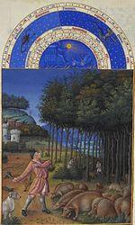
the
"boar"
is omnipresent in old Welsh poetry and occupies, of course, an outstanding place in the "Series".
In his "Celtic legend of Ireland, Wales and Brittany", published in 1859, La Villemarqué quotes this stanza which he interprets as an ancient allegory of education: the boar is the teacher calling his pupils and the apple tree whose blossoms are due to change into fruits is an image of science (P.144, Legend of Saint Kadok).
The Brizeux version (Bzg) has four lines which are very similar to the Barzhaz stanza:
"Ur wiz hag he nav forc'hell/Da zoull dor ar c'hastell/ O soroc'hal, disoroc'hal/ Dindan ar wezenn aval"
"A sow and her nine piglets/ At the door of the castle/ Digging and "disdigging"/ underneath the apple tree".
the
ten vessels and the eleven warriors
with broken swords and blood stained shirts, - who are, exceptionally, borrowed without change from "the Vespers" evoke, in La Villemarqué's interpretation, the catastrophic defeat of the Vannes tribes (Veneti) against Julius Caesar in 57 BC. In all versions quoted by Gourvil, the vanquished (priests, monks, sons) are coming from Nantes. There are either nine or eleven of them. But the hazel sticks these eleven vanquished out of three hundred use as crutches are mentioned only in the Barzhaz poem. The collector, who very likely is the author of this additional line discloses in a note his sources: an excerpt from the Redon Cartulary, quoted by Dom Morice in his "Proofs", reporting how a machtiern submits to a king, wearing as a sign of his defeat a hazel stick ("cum virga corilina").
An amusing remark about these "sticks": The erroneous etymology set forth by La Villemarqué for the word "beleg" (priest), which he understands as "priest of
Bele
nos", should be amended as "bearer of a staff". "Beleg" is a Latin loanword, *bac(u)l-ûcu-s «bearing a staff», like Welsh bagl, «staff» and more precisely «a shepherd’s crook», and is derived from Latin « baculus » = stick, like «bacillus» (a stick-shaped germ).
the
twelve signs
are the Zodiac signs whose combat announces the collapse of the Celtic religion or something of the like. The Cow with the white blaze is a sacred cow "whose death means death of the whole universe" [so said a Welsh bard]. (A version collected by de Penguern mentions "Five scraggy, half-starved cows/ Passing through the land of God [=the churchyard]/Lowing and mooing on their way").
And La Villemarqué adds:
"The great idea of
Divine unity
stands at the beginning of the [above quoted] Christian hymn and returns in each verse... as does here the dogma of the unique Necessity of Sorrow and Death which is the outset and the end of everything in this world."
The three stanzas without counterparts
The stanzas and parts of stanzas without counterparts in the folk ditties are strikingly weird: stanza 6.2 (the
dwarf
who licks his finger while mixing a potion and ); 3.1 (the
three parts
of space, time and living world); 3.3 (the description of "
Merlin's ream
": fruits, flowers, frolicking children).
La Villemarqué mentions Myvyrian's Taliesin who "was born thrice" and "whose name is 'Oak'", as well as "the third sphere in the ancient Welsh mythology, the Sphere of Bliss, Kylch y Gwynfyd - see Armorican 'Gwenvidigezh'". The dwarf refers to Gwion Bach who was to become Taliesin, as mentioned above. The 'tri rann er bed-mañ' (3 parts of this world) might, in the current state of our knowledge, refer to Gallic designations for the upper world, (our) median world and the very deep world: "albion", "bitu" and ("ande-)dubnon". These words possibly survive in modern Celtic languages: Welsh "elfydd", "byd" and "dwfn"/"annwfn"; or Breton "alvez", "bed" and "don"="deep". Our lesser world is called "bith" in Irish and "bys" in Cornish, while the "lower world" is "domun" in Irish and "down" in Cornish. "Elfed" referred to an ancient kingdom of the Britons in the north of England, which, by the way, is still sometimes styled as "Albion".
Similarly, the description of Merlin's kingdom corresponds fairly well to the Irish "magh mell" (Gaulish "mago"/Breton "maez"="field; Gaulish "mellos"/ Breton "mell"="huge"). This latter passage reminds us of stanzas 47 and 48 in the song
"Ar breur mager"
(The foster-brother), which is not recorded in the Keransquer MS. The other two stanzas, too, have no counterpart in any collected version. All three of them include an introduction line referring respectively to: beverage, tripartition, blissful world, which is followed by two other lines elaborating on the initial idea.
This elaborate structure contrasts with the
listings
of three items in stanza 7 (suns, planets, elements) and stanza 5 (zones, ages, stones), both belonging to genuine tradition, as are original distiches whose contents were artificially strained to accommodate the triplet structure by addition of a third line: 9.3 - 9.4 and 6.1.
La Villemarqué imparted to all the Druid's answers the shape of one or more
triplets
of 7 feet in each verse (sometimes 8), presumably with reference to the
Welsh "triads"
included in the "Myvyrian Archaeology". This presentation and this reference are not relevant for the truly collected versions, which are made up, as a rule, of distiches of variable lengths.
A stanza full of assonances
Especially suggestive is stanza 12.4 where rich
assonances
(tarann, tan, rann) echo the burden of
The wine of the Gaul
, a genuine folk song, as asserted by Abbé Henry.
They may have been suggested by a "spell" aimed at conjuring
sores
quoted in Luzel's "Sonioù" and included in a version of the "Vespers" referred to by Francis Gourvil to whom it was submitted by René Quillivic of Audierne in 1953:
"Teredenner (*) a lec'h da lec'h,
Tec'h ha tec'h!
N'eo ket amañ da lec'h.
Etre nav mor ha nav menez:
Aze ema da wele."
Sore (*), from place to place,
Away with you!
You don't belong here.
Between nine seas and nine mounts,
There is your bed.
(*) Hence "taran ha tan" (thunder and fire). The correct form of this word is "derwedenn"
La Villemarqué noted this formula on page 7 of his collection book N° 3 (a pencil inscription in his hand on the first page tells us the dates of the items recorded: "1843, 1844 etc. "), preceded by the words" Incantation or charm against sores collected by de Penguern ". It is slightly different from Luzel's:
"Dere, dero, dere, te'ch! (*)
Ned eo ket amañ da lec'h
Nag amañ nag e nep lec'h,
Tremen nav traoñ [?], ha nav menez
Ha nav feunteun [?] a garantez ".
"You'd be right, oak, if you'd be off
Here is not your place!
Neither here nor elsewhere-
Over 9 dales, over 9 mounts
And 9 fountains of love!".
(*) Phonetically reproduces the word "Deredevez" = "sore"
Taliesin and the »afanc »
La Villemarqué made a point of « proving » that Brittany’s oral lore had merits equivalent to those of Welsh manuscripts since the same mythical references might be found in it:
-3 allusions to Bard Taliesin (THREE spheres of existence, FIVE zones of the earth, SIX herbs in the dwarf’s cauldron) which draw on the »Historia Britonum » (9th c.), the « Canu Taliesin » (1275) and the « Tale of Taliesin » by Elis Gruffydd (16th c.), making of Taliesin an avatar of a Welsh mythological figure, Gwyon Bach, who had to stir the magician Ceridwen’s cauldron of knowledge.
- 1 allusion to the
"afanc"
or
"addanc"
, a lake monster featuring in Lady Charlotte Guest‘s translation of the Mabinogion tale « Peredur » (alias “Parsifal”, from 1838 to 1849). The beast is described as living in a cave near the "Palace of the three Sons of the King of the Tortures”. Each time the three boys attack him, they are slain by the creature, but resurrected by the maidens of the court. Peredur succeeds in killing the monster with the help of a girl who is none other than the Empress of Constantinople.
There is another “afanc” legend in the « Welsh Triads » of
Iolo Morganwg
(Edward Williams, 1747-1826), about a hero named
"Hu Gadarn"
. This name first appears as the counterpart of
"Hugo le Fort"
in the Welsh translation of the 12th c. French romance
"Le Pèlerinage de Charlemagne"
(Charlemagne’s Pilgrimage). « Siarlymaen » easily bests this Emperor of Constantinople (!).
However, Iolo presents Hu-Gadarn as a promethean hero of the ancient Britons to whom he introduced ploughing and the yoke, after he had led them from the « Summer Country » to the Isle of Britain. No less than 7 Triads in the spurious « Third Series » address him.
In his « Barddas », Iolo makes of him a god freeing Britain from the monster that caused catastrophic flooding which ultimately drowned all inhabitants of Britain, save for two people, Dwyfan and Dwyfach, from whom the later inhabitants of Prydain descended. According to one version of the myth, also put forth by Iolo Morganwg, Hu Gadarn's
TWO oxen
dragged the “afanc” out of the lake; once it was out of the water, it was powerless and could be easily killed.
Now two remarks:
- The family name
« Guyonvarc’h »
which sounds like
« Gwyon Bach »
is rather common in Brittany, in this or similar spellings.
- The Welsh
« afanc »
and Breton
« avank »
, usually translate in dictionaries the English « beaver », also an animal liable for hydrological catastrophes.
« Avank »
is the first word set forth in the dictionary of the Rev. Grégoire de Rostrenen (1732), before
« byeuzr »
, which the modern Favereau Dictionary renders as
« bever »
, both latter nouns being shared with many other Indo-European languages communes : German « Biber », English « beaver », Latin « fever », French « bièvre » -an out-fashioned word still known of Rev. Grégoire-, Russian « bobr », Gaelic « bìobhair »… The Gaul who founded
Bibr
acte or La Motte-
Beuvr
on used, to be sure, a similar word.
Another tale, that of the naughty beast performing self-castration, may have caused, in France, the word « bièvre » to be replaced by the Greek-Latin « castor »…
Even if these references are merely bookish, they are not completely absent from the Breton lore, as we saw. Therefore we may excuse the liberties taken by La Villemarqué when endeavouring to make palatable for a refined audience the strange matter he investigates.
V Luzel, Gourvil et les autres - Luzel, Gourvil and the rest
La "démonstration" de Le Braz et Luzel
Anatole Le Braz
, auteur avec
F-M Luzel
du recueil de chants "Sonioù Breiz Izel" (1890), écarte toutes ces spéculations. Il indique dans le commentaire du chant "Les vêpres des grenouilles" (p. 383 "Magies de la Bretagne", "Bouquins"):
"M. de La Villemarqué intitule la version que nous présente son
Barzaz Breiz
, avec grand renfort de commentaires et de notes savantes:
Ar Rannoù
, qu'il traduit par: "Les Séries". Mais c'est à tort, j'en suis convaincu, car partout, invariablement, j'ai entendu prononcer
Gosperoù ar Raned
, avec un "a" long, et plusieurs versions débutent même ainsi:
Kan, ran
- "chante, grenouille". Il est impossible de se tromper sur la signification de
ran
, pluriel:
raned
,..., au lieu que
rann
, pluriel
rannoù
, avec deux "nn", vient du verbe breton
rannañ
, qui signifie "partager", "diviser".
La seule expression bretonne que j'aie rencontrée dans le peuple et qui semble rappeler le druidisme est celle de
Eskob derv
, "Evêque du chêne", assez répandue dans le Trégor, mais...le sens véritable s'en est perdu. (*)
La version du
Barzaz Breiz
contient le mot
Drouiz
, traduit par "Druide", et qui suffirait pour donner à la pièce une date très reculée et une importance que je ne lui crois pas. Je n'ai jamais rencontré chez nos paysans breton le mot
Drouiz
, ni dans leurs chansons, ni dans leurs contes..."
(*) Remarque: il existait en français l'expression "évêque des champs qui donne la bénédiction avec les pieds", macabre périphrase qui désignait
un pendu
. Peut-être est-ce aussi la signification de "biskop derv".
L'ancienne religion paîenne
M. Boidron (p.470) note toutefois que
Luzel lui-même
établissait un
lien possible entre ce chant et une ancienne religion païenne
, quand il écrit:
"Dans quelques localités, comme Prat et Trézélan, des femmes m'ont assuré que les prêtres leur défendaient au confessionnal de chanter Gousperoù ar Raned, ce qui donnerait à penser que ces prêtres y voyaient ou une parodie [...] des Vêpres [...], ou peut-être aussi un écho persitant, bien que devenu incompréhensible, d'un
culte païen
."
Ces prêtres portaient sur ce chant le même jugement que le Père Maunoir sur
"An hini gozh"
:
«Great gant an drouk-speret ha kommun e-mesk an dud« (faite par le démon et commune parmi le peuple.)
C'est sans doute pourquoi la couverture du livre de M. Boidron s'orne (outre d'un merveilleux mot de (sur-)esprit breton "Gousperoù ar Raned ha 'gourspered' ar Rannoù"), d'une allusion au diable: un détail de l'Enfer du triptyque "Le jardin des délices" de Jérôme Bosch!
Selon l'historien et philologue
M. Bernard Tanguy
, auteur de "Aux origines du nationalisme breton " (paru en 1977 dans la Collection 10/18), la remarque que fait Luzel au sujet du mot "Drouiz" s'applique à une foule de mots "fabriqués" par La Villemarqué, assez souvent en les "important" du
gallois
, à commencer par "Barzaz", adapté du mot orthographié par Davies sous la forme "barddas", citée et traduite par "historia poetica", à la page 44 de son "Dictionnaire de la langue bretonne" de 1752, par
Dom Le Pelletier
... On chercherait en vain dans un dictionnaire breton les mots "ore", "etrec'hit", "hellink",... qui figurent dans le présent chant et sont transposés du gallois! Il en est, sans doute de même, du nom "Marzhin", transcription du gallois "Myrddin", que les Bretons connaissaient avant La Villemarqué sous le nom de "Merlin" ou "Merlig", même si la forme "Marzin" n'était pas inconnue dans l'onomastique bretonne.
On verra au
Chant suivant
l'origine de ce curieux procédé.
Le jugement de Francis Gourvil
Le livre de M. Tanguy s'inspire largement de la volumineuse étude que
Francis Gourvil
consacre à "La Villemarqué et le Barzaz-Breiz" (1960). Gourvil met en doute que la présente pièce ait été, même partiellement, recueillie à Nizon du fait qu'en 1954 une grande quantité de mots existant dans la version du Barzhaz-Breizh ne correspondent pas à la prononciation locale (
kaoter, higolen, kerc'hen, bazh loaek, netra kén, buoc'h, sachañ, gwezenn aval, avel, diwezañ
se prononcent ou se disent:
boulz, maen falc'h, bruched, birri laoek, nitra kin, beuc'h, chaech, gwenn aol, ael et diveo
).
Par ailleurs Gourvil note qu'Aurélien de Courson mentionne dès 1844 l'existence d'un
"monument... du druidisme"
découvert
"l'été dernier"
dans le Finistère par La Villemarqué, à savoir un chant que
"Tous les enfants de la paroisse de Nizon ...répètent traditionnellement"
. Il ne pouvait tenir ce détail que de La Villemarqué lui-même. Gourvil en conclut qu'entre 1867 et 1895, tous les enfants de 1844 n'étaient pas morts et que le Barde au lieu de s'isoler dans un "mépris hautain" ou un "silence méprisant" aurait du faire appel à leur témoignage pour accomplir le
"devoir qu'a tout savant de défendre sa réputation avec celle des ses confrères qui ont fait crédit à sa science (et ...[lui ont accordé] leurs suffrages au cours d'élections académiques)"
. Ce passage excessivement partisan et polémique donne le ton général de tout l'ouvrage de Gourvil!
La Villemarqué, le poète
Outre le fait que, selon nous, La Villemarqué fait preuve de plus de perspicaité que ses adversaires,on est frappé par ses compositions qui ont un charme poétique et une puissance évocatrice, rarement égalés dans les chants populaires. Quelles qu'aient été les libertés que leur auteur a prises, selon l'expression de J. Cocteau, il était "trop poète pour être honni!"
Dans la première édition (1839-1840) du Barzhaz, le jeune Barde inclut 8 traductions, précédées d'une citation de Nennius: "Non ut volui, sed ut potui" (J'aurais voulu faire mieux, mais je n'ai pas pu!). Il s'agit d'alexandrins ou d'octosyllabes qui n'épousent pas les mélodies:
Retour d'Angleterre
Le Baron de Jauioz
Le frère de lait
Geneviève de Rustéfan
Le lépreux
Hollaïka
La Croix du chemin
Les hirondelles
Être poète, c'est le reproche amical qui est fait à La Villemarqué par l'historien de la Bretagne,
Aurélien de Courson
, dans une lettre de 1839, lorsqu'il lui écrit que ses traductions en vers sont déplacées
"dans une œuvre grave" [et qu'il ne faut pas traiter] "le monde savant en jolie femme"
.
Mais il ajoute
: "Quant aux poésies, expressions si vraies du pays, elles sont inattaquables et quand on vous attaquerait, vous, le livre populaire resterait à l'abri des critiques."
Ce point de vue est proche de celui défendu par l'Académicien
Jean-Jacques Ampère
(1800 -1864, le fils du célèbre physicien) dans un article de la Revue des Deux-Mondes daté du 15 août 1836, à propos de
McPherson
et de son "Ossian" dont il n'ignore pas ce qu'il doit à la fraude.
"Les matériaux existaient"
, écrit-il et il convient dès lors d'étudier l'originalité de cette poésie à part entière par rapport aux autres poésies primitives.
Autres traductions en vers
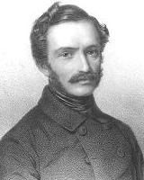
Si la Villemarqué a renoncé aux vers dans les traductions françaises, ce n'est pas ce qu'ont fait les traducteurs étrangers du Barzhaz Breizh, les Allemands A.
Keller et E von Seckendorff
en 1840, le Polonais
Lucjan Semienski
en 1842 (12 traductions dont 8 en vers), les Allemands
M. Hartmann et L. Pfau
en 1859 et l'Anglais
Tom Taylor
en 1865. On peut, en effet, considérer que des vers doivent être traduits par des vers et qu'une traduction en prose ne fournit qu'une information, tout comme la photographie en noir et blanc d'un tableau.
On trouvera donc ici, souvent, des traductions "chantables" des textes bretons, - réécrits selon l'orthographe moderne (KLT) -.
Curieusement, il fallut attendre 1995 pour que soit publiée la première traduction en russe de 17 chants du Barzhaz (Gwenc'hlan, Ys, Merlin au berceau, Bran...) par
M.D. Yasnov
et E.V. Baevsky, sous le titre “?????? ?????” (Barzhaz Breizh). C'est ce qu'indiquait, le 16.05.2013, le contributeur (la contributrice?) au site Svitnavkolo.com.ua.
A en juger par le chant
L'épouse du Croisé
il gratifia ses lecteurs d'excellentes traductions en vers.
The demonstration of Le Braz and Luzel.
Anatole Le Braz
, co-author with
F-M Luzel
of the song collection "Sonioù Breiz Izel" (1890), does not indulge in any way in these speculations. He states in his comment to the song "The Vespers of the Frogs" (p. 383 "Magies de la Bretagne", "Bouquins"):
"M. de La Villemarqué titles the version presented in his
Barzhaz Breizh
, accompanied by a great many explanations and clever notes:
Ar Rannoù
, which he translates with: "The Series". But he does it wrongly, to be sure, for everywhere, without exception, I heard that title pronounced
Gosperoù ar Raned
, with a long "a", and several versions begin with:
Kan, ran!
- "Sing, frog!". There is no doubt, whatsoever, about the meaning of
ran
, plural:
raned
, ..., whereas
rann
, plural
rannoù
, with two "nn", comes from the Breton verb
rannañ
, meaning "to share", "to divide".
The only Breton phrase I ever heard among the people, that might have some bearing on druidism is
Eskob dero
, "Oak bishop", commonly used in Trégor, but...its true signification is lost. (*)
The
Barzhaz Breizh
version of the song contains the word
Drouiz
, translated with "Druid", that could be sufficient to give this piece an ancientness and an importance I deny it. I never heard in the mouth of our Breton farmers the word
Drouiz
, neither in their songs, nor in their tales..."
(*) Note: The meaning of the Breton phrase "Biskop derv" could be the same as in the macabre, old French sentence "Bishop of the fields giving his blessing with his legs" referring to a
hanged man
.
M. Boidron (p.470) states however that
even Luzel
did not dismiss
a possible link between this rhyme and a former pagan religion
, when he wrote:
"In a few localities, like Prat and Trézélan, women assured me that priests would forbid them, when hearing them in confession, to sing Gousperoù ar Raned, which would suggest that they considered it a parody of the Catholic [...] vespers [...], or, maybe also, a persistent echo, though an incomprehensible one, of a
pagan cult
."
These clergymen looked on this song the same way as did Jesuit Father Maunoir on
"An hini gozh"
:
«Great gant an drouk-speret ha kommun e-mesk an dud« (a song made by the devil but popular among the folks.)
It is, presumably, the reason why the cover of M. Boidron's book is adorned (beside the "over-witty" Breton title: "Gousperoù ar Raned ha 'gourspered' ar Rannoù"!), with an allusion to the devil: a detail from the Hell panel in Hieronymus Bosch's triptych "The Garden of Earthly Delights"!
According to the historian and philologist
M. Bernard Tanguy
, author of "Aux origines du nationalisme breton " (published in 1977 by Collection 10/18), the remark about "Drouiz" applies to quite a lot of words "manufactured" by La Villemarqué, who very often "imported" them from the
Welsh
language, the word "Barzaz" first of all, which he found, identified as a Welsh word quoted by Davies as "barddas", translated as "historia poetica", on page 44 of
Dom Le Pelletier
's "Dictionary of the Breton language" (published in 1752)... One would look in vain in a Breton Dictionary for the words "ore", "etrec'hit", "hellink",... that are used in this song and were transcribed from the Welsh! Also the name "Marzhin" is the rendering of the Welsh "Myrddin" who was known as "Merlin" or "Merlig" in Brittany prior to La Villemarqué, even if the form "Marzin" belonged to genuine Breton onomastics.
For the origin of this weird process see
the following song
.
Judgment passed on this piece by Francis Gourvil
A large part of M. Tanguy's book is based on the exhaustive study which
Francis Gourvil
titled "La Villemarqué and the Barzaz-Breiz" (1960). Gourvil doubts that the piece at hand could be, even partly, collected in Nizon, since he found in 1954 that a great many words appearing in the Barzhaz-Breizh version of the song were not in use locally: (
kaoter, higolen, kerc'hen, bazh loaek, netra kén, buoc'h, sachañ, gwezenn aval, avel, diwezañ
are pronounced as or replaced by:
boulz, maen falc'h, bruched, birri laoek, nitra kin, beuc'h, chaech, gwenn aol, ael and diveo
).
Furthermore Gourvil states that Aurélien de Courson mentions, as early as 1844, the existence of
"remains... of druidism"
discovered
"this past summer"
in Western Brittany by La Villemarqué, to wit a song that
"all children in the parish Nizon... traditionally repeat"
. He must have heard it from La Villemarqué himself. Gourvil's conclusion is that since, between 1867 and 1895, all children born in 1844 were not dead, the Bard, instead of taking refuge in his "lofty or scornful dumbness", should have asked them to give evidence in fulfilment of the
"duty incumbent on any scientist: defending, along with his own repute, that of such colleagues as trusted in his special knowledge (especially those ... [who gave him ] their votes in academic elections)"
. This extremely biased and controversial passage is typical for Gourvil's whole book!
The poet La Villemarqué
And yet, these compositions have an enthralling beauty and an evocative power second to none in folk songs.
In spite of the liberties he had taken with his models, the witty alliteration of a well-known saying by J. Cocteau applies to La Villemarqué: he was "trop poête pour être honni!" (Too much of a poet to be criticized).
In the first edition (1839-1840) of the Barzhaz, the young Bard includes 8 rhymed translations, preceded by this quotation from Nennius: "Non ut volui, sed ut potui" (Not as I would, but as I could!). These are alexandrines or octosyllables that don't scan the tunes:
Return from England
Baron Jauioz
The Foster-brother
Geneviève of Rustéfan
The Leper
Hollaïka
The Cross by the Wayside
The Swallows
He was a poet, indeed. That was the friendly reproach addressed to him by the historian of Brittany,
Aurélien de Courson
, in a letter dated 1839, who wrote that his rhymed translations are out of place
"in a serious work" [and that the scientific community] "should not be trifled with like a pretty woman"
.
But he adds:
"As for the poems, they are the true expression of the country's soul and therefore unassailable and even if you were a target for attacks, the common people's book would remain beyond reproach.
"
Such is the point of view of the Academician
Jean-Jacques Ampère
(1800 -1864, son to the celebrated physicist), in an article dated 15th August 1836, issued in the "Revue des Deux-Mondes", on
McPherson
and his "Ossian" that he knew for sure was a fraud.
"The material did exist"
and therefore the originality of this genuine poetry may be investigated and compared with other forms of primitive art.
Other verse translations
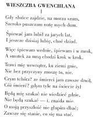
If La Villemarqué refrained from rhyming in his French translations, the first foreign translators of his book did not: the Germans
A. Keller and E von Seckendorff
in 1840, the Pole
Lucian Semienski
in 1842 (12 songs translated, 8 of them in verse), the Germans
M. Hartmann and L. Pfau
in 1859 and the Englishman
Tom Taylor
in 1865. They clearly considered that verse may only be aptly translated with verse, whereas a prose translation is like the black and white photograph of a painting.
That is the reason why the translations proposed here are mostly "singable", - the Breton texts being written in accordance with modern (KLT) spelling -.
Astonishingly, it was not until 1995 that the first Russian translation of 17 Barzhaz songs (Gwenc'hlan, Ys, Merlin in his cradle, Bran...) was published by
M.D. Yasnov
and E.V. Baevsky, under the title “?????? ?????” (Barzhaz Breizh), as stated, on 16.05.2013, by the contributor (maybe a lady?) to the site Svitnavkolo.com.ua. Judging from the song
Crusader's wife
he favoured his readers with very fine verse translations.
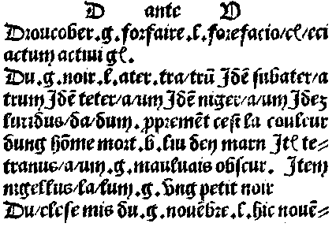
Extrait du 'Catholicon', dictionnaire breton-latin-français datant de 1464: Pas de 'drouiz' (druide) entre 'droucober'(méfait) et 'du' (noir)!"
Excerpt from "Catholicon, a Breton-Latin-French dictionary printed in 1464: No "drouiz" (druid) between "droucober" (wrongdoing) and "du" (black)!
La lune
Pour le paysan, la lune a une influence non négligeable sur le temps.
Si le temps n'est pas beau avant la pleine lune et si la pluie persiste à ce moment là, alors il pleut dans les trois jours qui suivent.
Si la lune est blanche à Noël, la récolte du lin sera bonne.
Si la lune d'avril déborde sur mai, "c'est pire que le diable".
Le soleil, le ciel
L'observation du ciel au lever et au coucher du soleil est fondamentale.
Si le soleil est rouge au lever, le temps sera beau ; s'il est rouge le soir, le lendemain verra du vent ou de la pluie:
- Ruvijinenn d'eus an noz, Glav pe avel antronoz -
Lorsque le soleil est cerclé de près, la pluie n'est pas à craindre, quand il est cerclé de loin, on peut envisager un travail demandant un sol sec:
- Kelc'hiet an heol a-dost : glav a-bell, Kelc'hiet an heol a-bell : glav a-dost -
Des nuages au soleil couchant sont un signe de pluie. Quand ces derniers se présentent sous la forme de petits moutons
- deñvedigou -
, c'est signe de pluie et de vent.
Le vent
Le vent du nord
- avel greh -
amène un temps sec, le vent du sud
- avel draoñ -
amène la pluie.
Quand le vent vient de la mer, plus particulièrement de la direction de Saint Pol de Léon
- an avel 'zo" kastellet" -
cela conduit à un temps variable.
La neige
Si la neige ne fond qu'en partie sur le sol, d'autres chutes de neige sont à craindre (la neige appelle la neige).
La brume
Quand elle vient de la mer, on peut craindre des fortes chaleurs "à fendre une porte".
L'arc-en-ciel
Chacun sait, évidemment, qu'il boit l'eau par ses deux extrémités.
Pour le faire disparaître, il faut cracher dans sa main et y tracer un signe de croix.
L'arc-en-ciel
(gwareg)
du matin est signe de beau temps
- Gwadig ar glav d'eus ar beure, Tap da falzh ha kê d'ar menez! -
(Arc-en-ciel le matin, prends ta faucille et va à la montagne!).
Par contre, l'arc-en-ciel du soir annonce de la pluie ou du vent pour le lendemain
- Gwadig ar glav deus an noz: Glav pe avel antronoz -
Les animaux
Des oiseaux de mer se dirigeant vers le Méné (montagne au sud du Trégor Ouest) annoncent la pluie.
Quand ils se dirigent vers la mer, c'est signe de beau temps (ou d'une amélioration du temps).
Un pivert qui chante : il faut s'attendre à de la pluie ou du grand vent.
En fin de journée, le croassement de corbeau répété deux fois de suite annonce de la pluie ; par contre, s'il est triplé, le beau temps est attendu.
Les pigeons chantent-ils fréquemment ? Si oui l'orage et la pluie sont imminents.
Le sifflement du merle en milieu de journée annonce aussi du mauvais temps.
Si les poules rentrent de bonne heure dans leur abri, cela signifie du beau temps pour le lendemain, mais si elles se couchent tard, c'est la pluie.
Les vaches beuglent en sortant de l'étable annoncent que la pluie arrive.
En hiver, si elles courent dans les champs et s'agitent dans leurs étables, alors il va faire froid
- rust 'vo an amzer -
Les mêmes principes s'appliquent aux chevaux, en fait, l'excitation des animaux annonce un temps venteux.
Le mauvais temps est prédit aussi par le chat s'il s'approche du foyer et présente son dos aux flammes. Le chat, toujours lui, peut annoncer qu'en présence de neige au sol il va encore neiger s'il passe la patte par-dessus l'oreille (ce qui peut être confirmé si, de plus, si la cheminée ne tire par bien).
Les végétaux
Le flétrissement des feuilles de choux, de trèfle et de betteraves est signe de mauvais temps.
Le calendrier, les saints
Le gel arrive souvent huit jours avant la Chandeleur (2 février) et dure encore huit jours après en se renforçant.
De la gelée blanche le Vendredi Saint signifie que, pour l'année en cours, le gel risque fort de venir sans se faire annoncer. Il ne faut donc pas planter trop tôt les pommes de terre.
Lorsque le vent est bien placé le dimanche des Rameaux (Nord, Nord-Est) pendant la messe de bénédiction du buis, alors on peut espérer du beau temps pour la future moisson. Lors de la lecture de l'Evangile, il s'agit de bien repérer la direction du vent.
Les vipères sortent des talus aux Rameaux, elle y retournent à Pâques car une semaine de froid est prévue (les saints sont voilés dans les églises et par conséquent, ils ne peuvent plus commander le temps).
Le lin se sème ni trop tôt, ni trop tard, entre la Saint Georges et la Saint Marc.
Le lin fleurit au moment de la Saint Pierre.
Le 19 Mai, le jour de la Saint Yves, la pluie fait souvent son apparition. Une gerbe de lin est mise autour du chapeau, elle doit être assez longue pour en faire le tour.
Gourdeizioù
Les six derniers jours de l'année et les six premiers jours de la nouvelle année sont observés avec une attention particulière. Le temps noté pour chacun de ces douze jours
- gourdeizioù -
correspond à celui des douze mois de l'année.
Dans cette période, certains paysans observent le temps demi-journée par demi-journée et en tirent des enseignements pour les vingt-quatre semaines de l'année nouvelle.
Sources principales
: "La vertu de l'exemple" par Jacques Urcun (Ar Skol Vrezoneg - Emgleo Breiz), Conférence de D. Giraudon sur le lin (festival Dañs Treger 2007).
Moon
In a peasant's opinion, the moon had a significant influence on the weather.
If the weather was not fine before full moon and rain was persisting at full moon, then it would go on raining in the following three days.
If the moon had been shining white and bright at Christmas, the flax harvest would be good.
If the April moon encroachesd upon May, "this was worse than devil's curse".
Sun and sky
The observation of the sky at sunrise and sunset was fundamental.
If the sun was red at sunrise, the weather would be fine; if it was red in the evening, the next day there woud be wind or rain:
- Ruvijinenn d'eus an noz, Glav pe avel antronoz -
When the sun was closely rimmed in a circle, rain was not to be feared, when it was rimmed afar, tilling dry soil could be considered:
- Kelc'hiet an heol a-dost: glav a- bell, Kelc'hiet an heol a-bell: glav a-dost -
Clouds at sunset were a sign of rain. When the clouds were shaped like small sheep
- deñvedigou -
, it was a harbinger of rain and wind.
Wind
The north wind
- avel greh -
would bring dry weather, the south wind
- avel draoñ -
ould bring rain.
When the wind came from the sea, more particularly from the direction of Saint Pol de Léon
- an avel 'zo "kastellet" -
this lead to unsttled weather.
Snow
If snow only partially melted on the ground, more snowfall was to be expected (snow called for snow).
Sea mist
Mist coming from the sea meant strong heat apt "to split a door".
Rainbow
Everyone knew for sure, that a rainbow soaked up water at its both ends.
To make it vanish, you just had to spit in your hand and make a sign of the cross over it.
A rainbow
(gwareg)
in the morning was a harbinger of good weather
- Gwadig ar glav d'eus ar beure, Tap da falzh ha kê d'ar menez! -
(A rainbow in the morning prompts you to take your sickle and go uphill!).
On the other hand, a rainbow in the evening would mean rain or wind on the next day
- Gwadig ar glav deus an noz: Glav pe avel antronoz -
Animals
Sea birds heading towards "ar Menez" (mountains south of West Trégor) would announce the rain.
When they head out to sea, it was a harbinger of good weather (or of improving weather).
A singing woodpecker meant that rain or strong winds were to be expected.
In the evening crow's croaking, repeated twice in a row, announced rain; but if it was repeated thrice, good weather could be expected.
Did pigeons sing repeatedly? If so, thunderstorm and rain were imminent.
Blackbird's hissing in the middle of the day also announced bad weather.
If hens returned to their shelters early, it meant good weather for the next day, but if they went to sleep late, it meant oncoming rain.
Cows howling as they left their barn also announced oncoming rain.
In winter, if cows ran in the fields and fidgetted in their stables, then the weather would turn cold
- rust 'vo an amzer -
The same principles applied to horses, in fact the excitement of all animals whatever meant windy weather.
Bad weather was also ushered in by a cat approaching the fireplace and turning its back to the flames. A cat, furthermore would announce a fresh snowfall when there is still snow laying on the ground, if it passed its paw over its ear (which could be confirmed if, in addition, the chimney did not draw well. ).
Plants
Wilting cabbage, clover or beet leaves were harbingers of bad weather.
Calendar and saints
Frost often occurred eight days before Candlemas (February 2) and lastsed for another eight days afterwards, becoming stronger.
Hoar frost on Good Friday meant that, in the current year, frost was likely to come unannounced. Potatoes should therefore not be planted too early.
When the wind was "correctly blowing" on Palm Sunday (North, North-East) during the blessing of boxwood branches at mass, then good weather for the future harvest could be expected. During the reading of the Gospel, it was important to notice the direction of the wind.
Vipers coming out of the banks on both sides of the roads on Palm Sunday, would return thither at Easter, since a cold week was foreseen by then (the statues of saints were veiled in the churches and therefore, they could no longer control the weather).
Flax was sown neither too early nor too late, between Saint George and Saint Mark.
Flax would bloom on Saint Peter's Day.
On May 19, Saint Yves's Day, rain often made its appearance. One would put a wreath of linen around one's hat. It had to be long enough to go all the way around it.
Gourdeizioù
The last six days of the year and the first six days of the new year were noticed with special attention. The weather observed for each of these twelve days
- gourdeizioù -
would correspond to that of the twelve months of the year.
During this period, some peasants made a record of the weather half-day by half-day and learned from it the weather for the twenty-four weeks of the oncoming year.
Main sources
: "The virtue of the example" by Jacques Urcun (Ar Skol Vrezoneg - Emgleo Breiz), A conference on flax culture by D. Giraudon(Dañs Treger Festival 2007).

 English translation of a Tregor version and of La Villemarqué's "Series" (click to open!)
English translation of a Tregor version and of La Villemarqué's "Series" (click to open!)